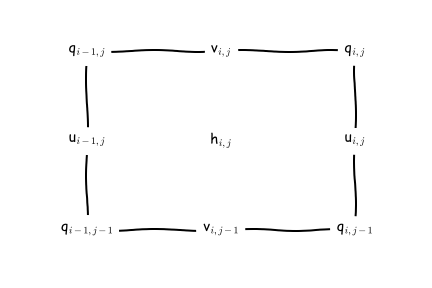

MOM6 Internals
Marshall Ward
2022-10-18
MOM6 directory tree
| Directory | Description |
|---|---|
src/ |
Model code, including solvers |
config_src/ |
Configurable components |
pkg/ |
Dependencies linked into src/ |
doc/ |
Documentation |
ac/ |
Autoconf build |
src/
| Directory | Description |
|---|---|
core/ |
Init, Timestep, main solvers |
parameterizations/ |
Viscosity, mixing, diabatic |
tracer/ |
Tracer dynamics |
ALE/ |
Vertical remapping |
diagnostics/ |
Diagonostic management |
user/ |
Preset forcing, topography |
Also see framework/, equation_of_state/, etc
Module Format
!> Implemented geothermal heating at the ocean bottom.
module MOM_geothermal
! This file is part of MOM6. See LICENSE.md for the license.
use MOM_diag_mediator, only : post_data, register_diag_field, safe_alloc_alloc
use MOM_diag_mediator, only : register_static_field, time_type, diag_ctrl
use MOM_domains, only : pass_var
use MOM_error_handler, only : MOM_error, FATAL, WARNING
use MOM_file_parser, only : get_param, log_param, log_version, param_file_type
use MOM_io, only : MOM_read_data, slasher
use MOM_grid, only : ocean_grid_type
use MOM_unit_scaling, only : unit_scale_type
use MOM_variables, only : thermo_var_ptrs
use MOM_verticalGrid, only : verticalGrid_type, get_thickness_units
use MOM_EOS, only : calculate_density, calculate_density_derivs
implicit none ; private
#include <MOM_memory.h>
public geothermal_entraining, geothermal_in_place, geothermal_init, geothermal_end
!> Control structure for geothermal heating
type, public :: geothermal_CS ; private
logical :: initialized = .false. !< True if this control structure has been initialized.
real :: dRcv_dT_inplace !< The value of dRcv_dT above which (dRcv_dT is negative) the
!! water is heated in place instead of moving upward between
!! layers in non-ALE layered mode [R C-1 ~> kg m-3 degC-1]
real, allocatable, dimension(:,:) :: geo_heat !< The geothermal heat flux [Q R Z T-1 ~> W m-2]
real :: geothermal_thick !< The thickness over which geothermal heating is
!! applied [H ~> m or kg m-2]
logical :: apply_geothermal !< If true, geothermal heating will be applied. This is false if
!! GEOTHERMAL_SCALE is 0 and there is no heat to apply.
type(time_type), pointer :: Time => NULL() !< A pointer to the ocean model's clock
type(diag_ctrl), pointer :: diag => NULL() !< A structure that is used to regulate the timing
!! timing of diagnostic output
integer :: id_internal_heat_heat_tendency = -1 !< ID for diagnostic of heat tendency
integer :: id_internal_heat_temp_tendency = -1 !< ID for diagnostic of temperature tendency
integer :: id_internal_heat_h_tendency = -1 !< ID for diagnostic of thickness tendency
end type geothermal_CS
contains
!> Applies geothermal heating, including the movement of water
!! between isopycnal layers to match the target densities. The heating is
!! applied to the bottommost layers that occur within GEOTHERMAL_THICKNESS of the bottom. If
!! the partial derivative of the coordinate density with temperature is positive
!! or very small, the layers are simply heated in place. Any heat that can not
!! be applied to the ocean is returned (WHERE)?
subroutine geothermal_entraining(h, tv, dt, ea, eb, G, GV, US, CS, halo)
type(ocean_grid_type), intent(inout) :: G !< The ocean's grid structure.
type(verticalGrid_type), intent(in) :: GV !< The ocean's vertical grid structure.
real, dimension(SZI_(G),SZJ_(G),SZK_(GV)), intent(inout) :: h !< Layer thicknesses [H ~> m or kg m-2]
type(thermo_var_ptrs), intent(inout) :: tv !< A structure containing pointers
!! to any available thermodynamic fields.
real, intent(in) :: dt !< Time increment [T ~> s].
real, dimension(SZI_(G),SZJ_(G),SZK_(GV)), intent(inout) :: ea !< The amount of fluid moved
!! downward into a layer; this
!! should be increased due to mixed
!! layer detrainment [H ~> m or kg m-2]
real, dimension(SZI_(G),SZJ_(G),SZK_(GV)), intent(inout) :: eb !< The amount of fluid moved upward
!! into a layer; this should be
!! increased due to mixed layer
!! entrainment [H ~> m or kg m-2].
type(unit_scale_type), intent(in) :: US !< A dimensional unit scaling type
type(geothermal_CS), intent(in) :: CS !< The control structure returned by
!! a previous call to
!! geothermal_init.
integer, optional, intent(in) :: halo !< Halo width over which to work
! Local variables
real, dimension(SZI_(G)) :: &
heat_rem, & ! remaining heat [H C ~> m degC or kg degC m-2]
h_geo_rem, & ! remaining thickness to apply geothermal heating [H ~> m or kg m-2]
Rcv_BL, & ! coordinate density in the deepest variable density layer [R ~> kg m-3]
p_ref ! coordinate densities reference pressure [R L2 T-2 ~> Pa]
real, dimension(2) :: &
T2, S2, & ! temp and saln in the present and target layers [C ~> degC] and [S ~> ppt]
dRcv_dT_, & ! partial derivative of coordinate density wrt temp [R C-1 ~> kg m-3 degC-1]
dRcv_dS_ ! partial derivative of coordinate density wrt saln [R S-1 ~> kg m-3 ppt-1]
real :: Angstrom, H_neglect ! small thicknesses [H ~> m or kg m-2]
real :: Rcv ! coordinate density of present layer [R ~> kg m-3]
real :: Rcv_tgt ! coordinate density of target layer [R ~> kg m-3]
real :: dRcv ! difference between Rcv and Rcv_tgt [R ~> kg m-3]
real :: dRcv_dT ! partial derivative of coordinate density wrt temp
! in the present layer [R C-1 ~> kg m-3 degC-1]; usually negative
real :: h_heated ! thickness that is being heated [H ~> m or kg m-2]
real :: heat_avail ! heating available for the present layer [C H ~> degC m or degC kg m-2]
real :: heat_in_place ! heating to warm present layer w/o movement between layers
! [C H ~> degC m or degC kg m-2]
real :: heat_trans ! heating available to move water from present layer to target
! layer [C H ~> degC m or degC kg m-2]
real :: heating ! heating used to move water from present layer to target layer
! [C H ~> degC m or degC kg m-2]
! 0 <= heating <= heat_trans
real :: h_transfer ! thickness moved between layers [H ~> m or kg m-2]
real :: wt_in_place ! relative weighting that goes from 0 to 1 [nondim]
real :: I_h ! inverse thickness [H-1 ~> m-1 or m2 kg-1]
real :: dTemp ! temperature increase in a layer [C ~> degC]
real :: Irho_cp ! inverse of heat capacity per unit layer volume
! [C H Q-1 R-1 Z-1 ~> degC m3 J-1 or degC kg J-1]
real, dimension(SZI_(G),SZJ_(G),SZK_(GV)) :: &
T_old, & ! Temperature of each layer before any heat is added, for diagnostics [C ~> degC]
h_old, & ! Thickness of each layer before any heat is added, for diagnostics [H ~> m or kg m-2]
work_3d ! Scratch variable used to calculate changes due to geothermal
real :: Idt ! inverse of the timestep [T-1 ~> s-1]
logical :: do_i(SZI_(G))
logical :: compute_h_old, compute_T_old
integer :: i, j, k, is, ie, js, je, nz, k2
integer :: isj, iej, num_left, nkmb, k_tgt
is = G%isc ; ie = G%iec ; js = G%jsc ; je = G%jec ; nz = GV%ke
if (present(halo)) then
is = G%isc-halo ; ie = G%iec+halo ; js = G%jsc-halo ; je = G%jec+halo
endif
if (.not. CS%initialized) call MOM_error(FATAL, "MOM_geothermal: "//&
"Module must be initialized before it is used.")
if (.not.CS%apply_geothermal) return
nkmb = GV%nk_rho_varies
Irho_cp = 1.0 / (GV%H_to_RZ * tv%C_p)
Angstrom = GV%Angstrom_H
H_neglect = GV%H_subroundoff
p_ref(:) = tv%P_Ref
Idt = 1.0 / dt
if (.not.associated(tv%T)) call MOM_error(FATAL, "MOM geothermal_entraining: "//&
"Geothermal heating can only be applied if T & S are state variables.")
! do j=js,je ; do i=is,ie
! resid(i,j) = tv%internal_heat(i,j)
! enddo ; enddo
! Conditionals for tracking diagnostic depdendencies
compute_h_old = CS%id_internal_heat_h_tendency > 0 &
.or. CS%id_internal_heat_heat_tendency > 0 &
.or. CS%id_internal_heat_temp_tendency > 0
compute_T_old = CS%id_internal_heat_heat_tendency > 0 &
.or. CS%id_internal_heat_temp_tendency > 0
if (CS%id_internal_heat_heat_tendency > 0) work_3d(:,:,:) = 0.0
if (compute_h_old .or. compute_T_old) then ; do k=1,nz ; do j=js,je ; do i=is,ie
! Save temperature and thickness before any changes are made (for diagnostics)
h_old(i,j,k) = h(i,j,k)
T_old(i,j,k) = tv%T(i,j,k)
enddo ; enddo ; enddo ; endif
!$OMP parallel do default(none) shared(is,ie,js,je,G,GV,US,CS,dt,Irho_cp,nkmb,tv, &
!$OMP p_Ref,h,Angstrom,nz,H_neglect,eb, &
!$OMP h_old,T_old,work_3d,Idt) &
!$OMP private(heat_rem,do_i,h_geo_rem,num_left, &
!$OMP isj,iej,Rcv_BL,h_heated,heat_avail,k_tgt, &
!$OMP Rcv_tgt,Rcv,dRcv_dT,T2,S2,dRcv_dT_, &
!$OMP dRcv_dS_,heat_in_place,heat_trans, &
!$OMP wt_in_place,dTemp,dRcv,h_transfer,heating, &
!$OMP I_h)
do j=js,je
! 1. Only work on columns that are being heated.
! 2. Find the deepest layer with any mass.
! 3. Find the partial derivative of locally referenced potential density
! and coordinate density with temperature, and the density of the layer
! and the layer above.
! 4. Heat a portion of the bottommost layer until it matches the target
! density of the layer above, and move it.
! 4a. In the case of variable density layers, heat but do not move.
! 5. If there is still heat left over, repeat for the next layer up.
! This subroutine updates thickness, T & S, and increments eb accordingly.
! 6. If there is not enough mass in the ocean, pass some of the heat up
! from the ocean via the frazil field?
num_left = 0
do i=is,ie
heat_rem(i) = G%mask2dT(i,j) * (CS%geo_heat(i,j) * (dt*Irho_cp))
do_i(i) = .true. ; if (heat_rem(i) <= 0.0) do_i(i) = .false.
if (do_i(i)) num_left = num_left + 1
h_geo_rem(i) = CS%Geothermal_thick
enddo
if (num_left == 0) cycle
! Find the first and last columns that need to be worked on.
isj = ie+1 ; do i=is,ie ; if (do_i(i)) then ; isj = i ; exit ; endif ; enddo
iej = is-1 ; do i=ie,is,-1 ; if (do_i(i)) then ; iej = i ; exit ; endif ; enddo
if (nkmb > 0) then
call calculate_density(tv%T(:,j,nkmb), tv%S(:,j,nkmb), p_Ref(:), Rcv_BL(:), &
tv%eqn_of_state, (/isj-(G%isd-1),iej-(G%isd-1)/) )
else
Rcv_BL(:) = -1.0
endif
do k=nz,1,-1
do i=isj,iej ; if (do_i(i)) then
if (h(i,j,k) > Angstrom) then
if ((h(i,j,k)-Angstrom) >= h_geo_rem(i)) then
h_heated = h_geo_rem(i)
heat_avail = heat_rem(i)
h_geo_rem(i) = 0.0
else
h_heated = (h(i,j,k)-Angstrom)
heat_avail = heat_rem(i) * (h_heated / &
(h_geo_rem(i) + H_neglect))
h_geo_rem(i) = h_geo_rem(i) - h_heated
endif
if (k<=nkmb .or. nkmb<=0) then
! Simply heat the layer; convective adjustment occurs later
! if necessary.
k_tgt = k
elseif ((k==nkmb+1) .or. (GV%Rlay(k-1) < Rcv_BL(i))) then
! Add enough heat to match the lowest buffer layer density.
k_tgt = nkmb
Rcv_tgt = Rcv_BL(i)
else
! Add enough heat to match the target density of layer k-1.
k_tgt = k-1
Rcv_tgt = GV%Rlay(k-1)
endif
if (k<=nkmb .or. nkmb<=0) then
Rcv = 0.0 ; dRcv_dT = 0.0 ! Is this OK?
else
call calculate_density(tv%T(i,j,k), tv%S(i,j,k), tv%P_Ref, &
Rcv, tv%eqn_of_state)
T2(1) = tv%T(i,j,k) ; S2(1) = tv%S(i,j,k)
T2(2) = tv%T(i,j,k_tgt) ; S2(2) = tv%S(i,j,k_tgt)
call calculate_density_derivs(T2(:), S2(:), p_Ref(:), dRcv_dT_, dRcv_dS_, &
tv%eqn_of_state, (/1,2/) )
dRcv_dT = 0.5*(dRcv_dT_(1) + dRcv_dT_(2))
endif
if ((dRcv_dT >= 0.0) .or. (k<=nkmb .or. nkmb<=0)) then
! This applies to variable density layers.
heat_in_place = heat_avail
heat_trans = 0.0
elseif (dRcv_dT <= CS%dRcv_dT_inplace) then
! This is the option that usually applies in isopycnal coordinates.
heat_in_place = min(heat_avail, max(0.0, h(i,j,k) * &
((GV%Rlay(k)-Rcv) / dRcv_dT)))
heat_trans = heat_avail - heat_in_place
else
! wt_in_place should go from 0 to 1.
wt_in_place = (CS%dRcv_dT_inplace - dRcv_dT) / CS%dRcv_dT_inplace
heat_in_place = max(wt_in_place*heat_avail, &
h(i,j,k) * ((GV%Rlay(k)-Rcv) / dRcv_dT) )
heat_trans = heat_avail - heat_in_place
endif
if (heat_in_place > 0.0) then
! This applies to variable density layers. In isopycnal coordinates
! this only arises for relatively fresh water near the freezing
! point, in which case heating in place will eventually cause things
! to sort themselves out, if only because the water will warm to
! the temperature of maximum density.
dTemp = heat_in_place / (h(i,j,k) + H_neglect)
tv%T(i,j,k) = tv%T(i,j,k) + dTemp
heat_rem(i) = heat_rem(i) - heat_in_place
Rcv = Rcv + dRcv_dT * dTemp
endif
if (heat_trans > 0.0) then
! The second expression might never be used, but will avoid
! division by 0.
dRcv = max(Rcv - Rcv_tgt, 0.0)
! dTemp = -dRcv / dRcv_dT
! h_transfer = min(heat_rem(i) / dTemp, h(i,j,k)-Angstrom)
if ((-dRcv_dT * heat_trans) >= dRcv * (h(i,j,k)-Angstrom)) then
h_transfer = h(i,j,k) - Angstrom
heating = (h_transfer * dRcv) / (-dRcv_dT)
! Since not all the heat has been applied, return the fraction
! of the layer thickness that has not yet been fully heated to
! the h_geo_rem.
h_geo_rem(i) = h_geo_rem(i) + h_heated * &
((heat_avail - (heating + heat_in_place)) / heat_avail)
else
h_transfer = (-dRcv_dT * heat_trans) / dRcv
heating = heat_trans
endif
heat_rem(i) = heat_rem(i) - heating
I_h = 1.0 / ((h(i,j,k_tgt) + H_neglect) + h_transfer)
tv%T(i,j,k_tgt) = ((h(i,j,k_tgt) + H_neglect) * tv%T(i,j,k_tgt) + &
(h_transfer * tv%T(i,j,k) + heating)) * I_h
tv%S(i,j,k_tgt) = ((h(i,j,k_tgt) + H_neglect) * tv%S(i,j,k_tgt) + &
h_transfer * tv%S(i,j,k)) * I_h
h(i,j,k) = h(i,j,k) - h_transfer
h(i,j,k_tgt) = h(i,j,k_tgt) + h_transfer
eb(i,j,k_tgt) = eb(i,j,k_tgt) + h_transfer
if (k_tgt < k-1) then
do k2 = k_tgt+1,k-1
eb(i,j,k2) = eb(i,j,k2) + h_transfer
enddo
endif
endif
if (heat_rem(i) <= 0.0) then
do_i(i) = .false. ; num_left = num_left-1
! For efficiency, uncomment these?
! if ((i==isj) .and. (num_left > 0)) then ; do i2=isj+1,iej ; if (do_i(i2)) then
! isj = i2 ; exit ! Set the new starting value.
! endif ; enddo ; endif
! if ((i==iej) .and. (num_left > 0)) then ; do i2=iej-1,isj,-1 ; if (do_i(i2)) then
! iej = i2 ; exit ! Set the new ending value.
! endif ; enddo ; endif
endif
endif
! Calculate heat tendency due to addition and transfer of internal heat
if (CS%id_internal_heat_heat_tendency > 0) then
work_3d(i,j,k) = ((GV%H_to_RZ*tv%C_p) * Idt) * (h(i,j,k) * tv%T(i,j,k) - h_old(i,j,k) * T_old(i,j,k))
endif
endif ; enddo
if (num_left <= 0) exit
enddo ! k-loop
if (associated(tv%internal_heat)) then ; do i=is,ie
tv%internal_heat(i,j) = tv%internal_heat(i,j) + GV%H_to_RZ * &
(G%mask2dT(i,j) * (CS%geo_heat(i,j) * (dt*Irho_cp)) - heat_rem(i))
enddo ; endif
enddo ! j-loop
! Post diagnostic of 3D tendencies (heat, temperature, and thickness) due to internal heat
if (CS%id_internal_heat_heat_tendency > 0) then
call post_data(CS%id_internal_heat_heat_tendency, work_3d, CS%diag, alt_h=h_old)
endif
if (CS%id_internal_heat_temp_tendency > 0) then
do k=1,nz ; do j=js,je ; do i=is,ie
work_3d(i,j,k) = Idt * (tv%T(i,j,k) - T_old(i,j,k))
enddo ; enddo ; enddo
call post_data(CS%id_internal_heat_temp_tendency, work_3d, CS%diag, alt_h=h_old)
endif
if (CS%id_internal_heat_h_tendency > 0) then
do k=1,nz ; do j=js,je ; do i=is,ie
work_3d(i,j,k) = Idt * (h(i,j,k) - h_old(i,j,k))
enddo ; enddo ; enddo
call post_data(CS%id_internal_heat_h_tendency, work_3d, CS%diag, alt_h=h_old)
endif
! do j=js,je ; do i=is,ie
! resid(i,j) = tv%internal_heat(i,j) - resid(i,j) - GV%H_to_RZ * &
! (G%mask2dT(i,j) * (CS%geo_heat(i,j) * (dt*Irho_cp)))
! enddo ; enddo
end subroutine geothermal_entraining
!> Applies geothermal heating to the bottommost layers that occur within GEOTHERMAL_THICKNESS of
!! the bottom, by simply heating the water in place. Any heat that can not be applied to the ocean
!! is returned (WHERE)?
subroutine geothermal_in_place(h, tv, dt, G, GV, US, CS, halo)
type(ocean_grid_type), intent(inout) :: G !< The ocean's grid structure.
type(verticalGrid_type), intent(in) :: GV !< The ocean's vertical grid structure.
real, dimension(SZI_(G),SZJ_(G),SZK_(GV)), intent(in) :: h !< Layer thicknesses [H ~> m or kg m-2]
type(thermo_var_ptrs), intent(inout) :: tv !< A structure containing pointers
!! to any available thermodynamic fields.
real, intent(in) :: dt !< Time increment [T ~> s].
type(unit_scale_type), intent(in) :: US !< A dimensional unit scaling type
type(geothermal_CS), intent(in) :: CS !< Geothermal heating control struct
integer, optional, intent(in) :: halo !< Halo width over which to work
! Local variables
real, dimension(SZI_(G)) :: &
heat_rem, & ! remaining heat [H C ~> m degC or kg degC m-2]
h_geo_rem ! remaining thickness to apply geothermal heating [H ~> m or kg m-2]
real :: Angstrom, H_neglect ! small thicknesses [H ~> m or kg m-2]
real :: heat_here ! heating applied to the present layer [C H ~> degC m or degC kg m-2]
real :: dTemp ! temperature increase in a layer [C ~> degC]
real :: Irho_cp ! inverse of heat capacity per unit layer volume
! [C H Q-1 R-1 Z-1 ~> degC m3 J-1 or degC kg J-1]
real, dimension(SZI_(G),SZJ_(G),SZK_(GV)) :: &
dTdt_diag ! Diagnostic of temperature tendency [C T-1 ~> degC s-1] which might be
! converted into a layer-integrated heat tendency [Q R Z T-1 ~> W m-2]
real :: Idt ! inverse of the timestep [T-1 ~> s-1]
logical :: do_any ! True if there is more to be done on the current j-row.
logical :: calc_diags ! True if diagnostic tendencies are needed.
integer :: i, j, k, is, ie, js, je, nz, isj, iej
is = G%isc ; ie = G%iec ; js = G%jsc ; je = G%jec ; nz = GV%ke
if (present(halo)) then
is = G%isc-halo ; ie = G%iec+halo ; js = G%jsc-halo ; je = G%jec+halo
endif
if (.not. CS%initialized) call MOM_error(FATAL, "MOM_geothermal: "//&
"Module must be initialized before it is used.")
if (.not.CS%apply_geothermal) return
Irho_cp = 1.0 / (GV%H_to_RZ * tv%C_p)
Angstrom = GV%Angstrom_H
H_neglect = GV%H_subroundoff
Idt = 1.0 / dt
if (.not.associated(tv%T)) call MOM_error(FATAL, "MOM geothermal_in_place: "//&
"Geothermal heating can only be applied if T & S are state variables.")
! do i=is,ie ; do j=js,je
! resid(i,j) = tv%internal_heat(i,j)
! enddo ; enddo
! Conditionals for tracking diagnostic depdendencies
calc_diags = (CS%id_internal_heat_heat_tendency > 0) .or. (CS%id_internal_heat_temp_tendency > 0)
if (calc_diags) dTdt_diag(:,:,:) = 0.0
!$OMP parallel do default(shared) private(heat_rem,do_any,h_geo_rem,isj,iej,heat_here,dTemp)
do j=js,je
! Only work on columns that are being heated, and heat the near-bottom water.
! If there is not enough mass in the ocean, pass some of the heat up
! from the ocean via the frazil field?
do_any = .false.
do i=is,ie
heat_rem(i) = G%mask2dT(i,j) * (CS%geo_heat(i,j) * (dt*Irho_cp))
if (heat_rem(i) > 0.0) do_any = .true.
h_geo_rem(i) = CS%Geothermal_thick
enddo
if (.not.do_any) cycle
! Find the first and last columns that need to be worked on.
isj = ie+1 ; do i=is,ie ; if (heat_rem(i) > 0.0) then ; isj = i ; exit ; endif ; enddo
iej = is-1 ; do i=ie,is,-1 ; if (heat_rem(i) > 0.0) then ; iej = i ; exit ; endif ; enddo
do k=nz,1,-1
do_any = .false.
do i=isj,iej
if ((heat_rem(i) > 0.0) .and. (h(i,j,k) > Angstrom)) then
! Apply some or all of the remaining heat to this layer.
! Convective adjustment occurs outside of this module if necessary.
if ((h(i,j,k)-Angstrom) >= h_geo_rem(i)) then
heat_here = heat_rem(i)
h_geo_rem(i) = 0.0
heat_rem(i) = 0.0
else
heat_here = heat_rem(i) * ((h(i,j,k)-Angstrom) / (h_geo_rem(i) + H_neglect))
h_geo_rem(i) = h_geo_rem(i) - (h(i,j,k)-Angstrom)
heat_rem(i) = heat_rem(i) - heat_here
endif
dTemp = heat_here / (h(i,j,k) + H_neglect)
tv%T(i,j,k) = tv%T(i,j,k) + dTemp
if (calc_diags) dTdt_diag(i,j,k) = dTemp * Idt
endif
if (heat_rem(i) > 0.0) do_any= .true.
enddo
if (.not.do_any) exit
enddo ! k-loop
if (associated(tv%internal_heat)) then ; do i=is,ie
tv%internal_heat(i,j) = tv%internal_heat(i,j) + GV%H_to_RZ * &
(G%mask2dT(i,j) * (CS%geo_heat(i,j) * (dt*Irho_cp)) - heat_rem(i))
enddo ; endif
enddo ! j-loop
! Post diagnostics of 3D tendencies of heat and temperature due to geothermal heat
if (CS%id_internal_heat_temp_tendency > 0) then
call post_data(CS%id_internal_heat_temp_tendency, dTdt_diag, CS%diag, alt_h=h)
endif
if (CS%id_internal_heat_heat_tendency > 0) then
do k=1,nz ; do j=js,je ; do i=is,ie
! Dangerously reuse dTdt_diag for a related variable with different units, going from
! units of [C T-1 ~> degC s-1] to units of [Q R Z T-1 ~> W m-2]
dTdt_diag(i,j,k) = (GV%H_to_RZ*tv%C_p) * (h(i,j,k) * dTdt_diag(i,j,k))
enddo ; enddo ; enddo
call post_data(CS%id_internal_heat_heat_tendency, dTdt_diag, CS%diag, alt_h=h)
endif
! do j=js,je ; do i=is,ie
! resid(i,j) = tv%internal_heat(i,j) - resid(i,j) - GV%H_to_RZ * &
! (G%mask2dT(i,j) * (CS%geo_heat(i,j) * (dt*Irho_cp)))
! enddo ; enddo
end subroutine geothermal_in_place
!> Initialize parameters and allocate memory associated with the geothermal heating module.
subroutine geothermal_init(Time, G, GV, US, param_file, diag, CS, useALEalgorithm)
type(time_type), target, intent(in) :: Time !< Current model time.
type(ocean_grid_type), intent(inout) :: G !< The ocean's grid structure.
type(verticalGrid_type), intent(in) :: GV !< The ocean's vertical grid structure.
type(unit_scale_type), intent(in) :: US !< A dimensional unit scaling type
type(param_file_type), intent(in) :: param_file !< A structure to parse for run-time
!! parameters.
type(diag_ctrl), target, intent(inout) :: diag !< Structure used to regulate diagnostic output.
type(geothermal_CS), intent(inout) :: CS !< Geothermal heating control struct
logical, optional, intent(in) :: useALEalgorithm !< logical for whether to use ALE remapping
! This include declares and sets the variable "version".
#include "version_variable.h"
character(len=40) :: mdl = "MOM_geothermal" ! module name
character(len=48) :: thickness_units
! Local variables
character(len=200) :: inputdir, geo_file, filename, geotherm_var
real :: geo_scale ! A constant heat flux or dimensionally rescaled geothermal flux scaling factor
! [Q R Z T-1 ~> W m-2] or [Q R Z m2 s J-1 T-1 ~> nondim]
integer :: i, j, isd, ied, jsd, jed, id
isd = G%isd ; ied = G%ied ; jsd = G%jsd ; jed = G%jed
CS%initialized = .true.
CS%diag => diag
CS%Time => Time
! write parameters to the model log.
call log_version(param_file, mdl, version, "")
call get_param(param_file, mdl, "GEOTHERMAL_SCALE", geo_scale, &
"The constant geothermal heat flux, a rescaling "//&
"factor for the heat flux read from GEOTHERMAL_FILE, or "//&
"0 to disable the geothermal heating.", &
units="W m-2 or various", default=0.0, scale=US%W_m2_to_QRZ_T)
CS%apply_geothermal = .not.(geo_scale == 0.0)
if (.not.CS%apply_geothermal) return
call safe_alloc_alloc(CS%geo_heat, isd, ied, jsd, jed) ; CS%geo_heat(:,:) = 0.0
call get_param(param_file, mdl, "GEOTHERMAL_FILE", geo_file, &
"The file from which the geothermal heating is to be "//&
"read, or blank to use a constant heating rate.", default=" ")
call get_param(param_file, mdl, "GEOTHERMAL_THICKNESS", CS%geothermal_thick, &
"The thickness over which to apply geothermal heating.", &
units="m", default=0.1, scale=GV%m_to_H)
call get_param(param_file, mdl, "GEOTHERMAL_DRHO_DT_INPLACE", CS%dRcv_dT_inplace, &
"The value of drho_dT above which geothermal heating "//&
"simply heats water in place instead of moving it between "//&
"isopycnal layers. This must be negative.", &
units="kg m-3 K-1", scale=US%kg_m3_to_R*US%C_to_degC, default=-0.01, &
do_not_log=((GV%nk_rho_varies<=0).or.(GV%nk_rho_varies>=GV%ke)) )
if (CS%dRcv_dT_inplace >= 0.0) call MOM_error(FATAL, "geothermal_init: "//&
"GEOTHERMAL_DRHO_DT_INPLACE must be negative.")
if (len_trim(geo_file) >= 1) then
call get_param(param_file, mdl, "INPUTDIR", inputdir, default=".")
inputdir = slasher(inputdir)
filename = trim(inputdir)//trim(geo_file)
call log_param(param_file, mdl, "INPUTDIR/GEOTHERMAL_FILE", filename)
call get_param(param_file, mdl, "GEOTHERMAL_VARNAME", geotherm_var, &
"The name of the geothermal heating variable in GEOTHERMAL_FILE.", &
default="geo_heat")
call MOM_read_data(filename, trim(geotherm_var), CS%geo_heat, G%Domain)
do j=jsd,jed ; do i=isd,ied
CS%geo_heat(i,j) = (G%mask2dT(i,j) * geo_scale) * CS%geo_heat(i,j)
enddo ; enddo
else
do j=jsd,jed ; do i=isd,ied
CS%geo_heat(i,j) = G%mask2dT(i,j) * geo_scale
enddo ; enddo
endif
call pass_var(CS%geo_heat, G%domain)
thickness_units = get_thickness_units(GV)
! post the static geothermal heating field
id = register_static_field('ocean_model', 'geo_heat', diag%axesT1, &
'Geothermal heat flux into ocean', 'W m-2', conversion=US%QRZ_T_to_W_m2, &
cmor_field_name='hfgeou', &
cmor_standard_name='upward_geothermal_heat_flux_at_sea_floor', &
cmor_long_name='Upward geothermal heat flux at sea floor', &
x_cell_method='mean', y_cell_method='mean', area_cell_method='mean')
if (id > 0) call post_data(id, CS%geo_heat, diag, .true.)
! Diagnostic for tendencies due to internal heat (in 3d)
CS%id_internal_heat_heat_tendency=register_diag_field('ocean_model', &
'internal_heat_heat_tendency', diag%axesTL, Time, &
'Heat tendency (in 3D) due to internal (geothermal) sources', &
'W m-2', conversion=US%QRZ_T_to_W_m2, v_extensive=.true.)
CS%id_internal_heat_temp_tendency=register_diag_field('ocean_model', &
'internal_heat_temp_tendency', diag%axesTL, Time, &
'Temperature tendency (in 3D) due to internal (geothermal) sources', &
'degC s-1', conversion=US%C_to_degC*US%s_to_T, v_extensive=.true.)
if (.not.useALEalgorithm) then
! Do not offer this diagnostic if heating will be in place.
CS%id_internal_heat_h_tendency=register_diag_field('ocean_model', &
'internal_heat_h_tendency', diag%axesTL, Time, &
'Thickness tendency (in 3D) due to internal (geothermal) sources', &
trim(thickness_units)//' s-1', conversion=GV%H_to_MKS*US%s_to_T, v_extensive=.true.)
endif
end subroutine geothermal_init
!> Clean up and deallocate memory associated with the geothermal heating module.
subroutine geothermal_end(CS)
type(geothermal_CS), intent(inout) :: CS !< Geothermal heating control struct
if (allocated(CS%geo_heat)) deallocate(CS%geo_heat)
end subroutine geothermal_end
!> \namespace mom_geothermal
!!
!! Geothermal heating can be added either in a layered isopycnal mode, in which the heating raises the density
!! of the layer to the target density of the layer above, and then moves the water into that layer, or in a
!! simple Eulerian mode, in which the bottommost GEOTHERMAL_THICKNESS are heated. Geothermal heating will also
!! provide a buoyant source of bottom TKE that can be used to further mix the near-bottom water. In cold fresh
!! water lakes where heating increases density, water should be moved into deeper layers, but this is not
!! implemented yet.
end module MOM_geothermal
- One module per file
- Module communication by control structures
- No internal module variables (i.e. no "state")
- Self-documentation
step_MOM()
- Field prep (ustar, psurf, etc)
- Dynamics:
step_MOM_dynamics() - Thermodynamics:
step_MOM_thermo() - Tracers:
step_MOM_tracer_dyn()
Ordering is somewhat configurable
Inside step_MOM()
!> The central module of the MOM6 ocean model
module MOM
! This file is part of MOM6. See LICENSE.md for the license.
! Infrastructure modules
use MOM_array_transform, only : rotate_array, rotate_vector
use MOM_debugging, only : MOM_debugging_init, hchksum, uvchksum
use MOM_debugging, only : check_redundant
use MOM_checksum_packages, only : MOM_thermo_chksum, MOM_state_chksum
use MOM_checksum_packages, only : MOM_accel_chksum, MOM_surface_chksum
use MOM_coms, only : num_PEs
use MOM_cpu_clock, only : cpu_clock_id, cpu_clock_begin, cpu_clock_end
use MOM_cpu_clock, only : CLOCK_COMPONENT, CLOCK_SUBCOMPONENT
use MOM_cpu_clock, only : CLOCK_MODULE_DRIVER, CLOCK_MODULE, CLOCK_ROUTINE
use MOM_diag_mediator, only : diag_mediator_init, enable_averaging, enable_averages
use MOM_diag_mediator, only : diag_mediator_infrastructure_init
use MOM_diag_mediator, only : diag_set_state_ptrs, diag_update_remap_grids
use MOM_diag_mediator, only : disable_averaging, post_data, safe_alloc_ptr
use MOM_diag_mediator, only : register_diag_field, register_cell_measure
use MOM_diag_mediator, only : set_axes_info, diag_ctrl, diag_masks_set
use MOM_diag_mediator, only : set_masks_for_axes
use MOM_diag_mediator, only : diag_grid_storage, diag_grid_storage_init
use MOM_diag_mediator, only : diag_save_grids, diag_restore_grids
use MOM_diag_mediator, only : diag_copy_storage_to_diag, diag_copy_diag_to_storage
use MOM_domains, only : MOM_domains_init
use MOM_domains, only : sum_across_PEs, pass_var, pass_vector
use MOM_domains, only : clone_MOM_domain, deallocate_MOM_domain
use MOM_domains, only : To_North, To_East, To_South, To_West
use MOM_domains, only : To_All, Omit_corners, CGRID_NE, SCALAR_PAIR
use MOM_domains, only : create_group_pass, do_group_pass, group_pass_type
use MOM_domains, only : start_group_pass, complete_group_pass, Omit_Corners
use MOM_error_handler, only : MOM_error, MOM_mesg, FATAL, WARNING, is_root_pe
use MOM_error_handler, only : MOM_set_verbosity, callTree_showQuery
use MOM_error_handler, only : callTree_enter, callTree_leave, callTree_waypoint
use MOM_file_parser, only : read_param, get_param, log_version, param_file_type
use MOM_forcing_type, only : forcing, mech_forcing
use MOM_forcing_type, only : MOM_forcing_chksum, MOM_mech_forcing_chksum
use MOM_get_input, only : Get_MOM_Input, directories
use MOM_io, only : MOM_io_init, vardesc, var_desc
use MOM_io, only : slasher, file_exists, MOM_read_data
use MOM_obsolete_params, only : find_obsolete_params
use MOM_restart, only : register_restart_field, register_restart_pair, save_restart
use MOM_restart, only : query_initialized, set_initialized, restart_registry_lock
use MOM_restart, only : restart_init, is_new_run, determine_is_new_run, MOM_restart_CS
use MOM_spatial_means, only : global_mass_integral
use MOM_time_manager, only : time_type, real_to_time, time_type_to_real, operator(+)
use MOM_time_manager, only : operator(-), operator(>), operator(*), operator(/)
use MOM_time_manager, only : operator(>=), operator(==), increment_date
use MOM_unit_tests, only : unit_tests
! MOM core modules
use MOM_ALE, only : ALE_init, ALE_end, ALE_main, ALE_CS, adjustGridForIntegrity
use MOM_ALE, only : ALE_getCoordinate, ALE_getCoordinateUnits, ALE_writeCoordinateFile
use MOM_ALE, only : ALE_updateVerticalGridType, ALE_remap_init_conds, ALE_register_diags
use MOM_ALE_sponge, only : rotate_ALE_sponge, update_ALE_sponge_field
use MOM_barotropic, only : Barotropic_CS
use MOM_boundary_update, only : call_OBC_register, OBC_register_end, update_OBC_CS
use MOM_check_scaling, only : check_MOM6_scaling_factors
use MOM_coord_initialization, only : MOM_initialize_coord, write_vertgrid_file
use MOM_diabatic_driver, only : diabatic, diabatic_driver_init, diabatic_CS, extract_diabatic_member
use MOM_diabatic_driver, only : adiabatic, adiabatic_driver_init, diabatic_driver_end
use MOM_stochastics, only : stochastics_init, update_stochastics, stochastic_CS
use MOM_diagnostics, only : calculate_diagnostic_fields, MOM_diagnostics_init
use MOM_diagnostics, only : register_transport_diags, post_transport_diagnostics
use MOM_diagnostics, only : register_surface_diags, write_static_fields
use MOM_diagnostics, only : post_surface_dyn_diags, post_surface_thermo_diags
use MOM_diagnostics, only : diagnostics_CS, surface_diag_IDs, transport_diag_IDs
use MOM_diagnostics, only : MOM_diagnostics_end
use MOM_dynamics_unsplit, only : step_MOM_dyn_unsplit, register_restarts_dyn_unsplit
use MOM_dynamics_unsplit, only : initialize_dyn_unsplit, end_dyn_unsplit
use MOM_dynamics_unsplit, only : MOM_dyn_unsplit_CS
use MOM_dynamics_split_RK2, only : step_MOM_dyn_split_RK2, register_restarts_dyn_split_RK2
use MOM_dynamics_split_RK2, only : initialize_dyn_split_RK2, end_dyn_split_RK2
use MOM_dynamics_split_RK2, only : MOM_dyn_split_RK2_CS
use MOM_dynamics_unsplit_RK2, only : step_MOM_dyn_unsplit_RK2, register_restarts_dyn_unsplit_RK2
use MOM_dynamics_unsplit_RK2, only : initialize_dyn_unsplit_RK2, end_dyn_unsplit_RK2
use MOM_dynamics_unsplit_RK2, only : MOM_dyn_unsplit_RK2_CS
use MOM_dyn_horgrid, only : dyn_horgrid_type, create_dyn_horgrid, destroy_dyn_horgrid
use MOM_dyn_horgrid, only : rotate_dyn_horgrid
use MOM_EOS, only : EOS_init, calculate_density, calculate_TFreeze, EOS_domain
use MOM_fixed_initialization, only : MOM_initialize_fixed
use MOM_forcing_type, only : allocate_forcing_type, allocate_mech_forcing
use MOM_forcing_type, only : deallocate_mech_forcing, deallocate_forcing_type
use MOM_forcing_type, only : rotate_forcing, rotate_mech_forcing
use MOM_forcing_type, only : copy_common_forcing_fields, set_derived_forcing_fields
use MOM_forcing_type, only : homogenize_forcing, homogenize_mech_forcing
use MOM_grid, only : ocean_grid_type, MOM_grid_init, MOM_grid_end
use MOM_grid, only : set_first_direction, rescale_grid_bathymetry
use MOM_hor_index, only : hor_index_type, hor_index_init
use MOM_hor_index, only : rotate_hor_index
use MOM_interface_heights, only : find_eta
use MOM_interface_filter, only : interface_filter, interface_filter_init, interface_filter_end
use MOM_interface_filter, only : interface_filter_CS
use MOM_lateral_mixing_coeffs, only : calc_slope_functions, VarMix_init, VarMix_end
use MOM_lateral_mixing_coeffs, only : calc_resoln_function, calc_depth_function, VarMix_CS
use MOM_MEKE, only : MEKE_alloc_register_restart, step_forward_MEKE
use MOM_MEKE, only : MEKE_CS, MEKE_init, MEKE_end
use MOM_MEKE_types, only : MEKE_type
use MOM_mixed_layer_restrat, only : mixedlayer_restrat, mixedlayer_restrat_init, mixedlayer_restrat_CS
use MOM_mixed_layer_restrat, only : mixedlayer_restrat_register_restarts
use MOM_obsolete_diagnostics, only : register_obsolete_diagnostics
use MOM_open_boundary, only : ocean_OBC_type, OBC_registry_type
use MOM_open_boundary, only : register_temp_salt_segments
use MOM_open_boundary, only : open_boundary_register_restarts
use MOM_open_boundary, only : update_segment_tracer_reservoirs
use MOM_open_boundary, only : rotate_OBC_config, rotate_OBC_init
use MOM_porous_barriers, only : porous_widths_layer, porous_widths_interface, porous_barriers_init
use MOM_porous_barriers, only : porous_barrier_CS
use MOM_set_visc, only : set_viscous_BBL, set_viscous_ML
use MOM_set_visc, only : set_visc_register_restarts, set_visc_CS
use MOM_set_visc, only : set_visc_init, set_visc_end
use MOM_shared_initialization, only : write_ocean_geometry_file
use MOM_sponge, only : init_sponge_diags, sponge_CS
use MOM_state_initialization, only : MOM_initialize_state
use MOM_stoch_eos, only : MOM_stoch_eos_init,MOM_stoch_eos_run,MOM_stoch_eos_CS,mom_calc_varT
use MOM_sum_output, only : write_energy, accumulate_net_input
use MOM_sum_output, only : MOM_sum_output_init, MOM_sum_output_end
use MOM_sum_output, only : sum_output_CS
use MOM_ALE_sponge, only : init_ALE_sponge_diags, ALE_sponge_CS
use MOM_thickness_diffuse, only : thickness_diffuse, thickness_diffuse_init
use MOM_thickness_diffuse, only : thickness_diffuse_end, thickness_diffuse_CS
use MOM_tracer_advect, only : advect_tracer, tracer_advect_init
use MOM_tracer_advect, only : tracer_advect_end, tracer_advect_CS
use MOM_tracer_hor_diff, only : tracer_hordiff, tracer_hor_diff_init
use MOM_tracer_hor_diff, only : tracer_hor_diff_end, tracer_hor_diff_CS
use MOM_tracer_registry, only : tracer_registry_type, register_tracer, tracer_registry_init
use MOM_tracer_registry, only : register_tracer_diagnostics, post_tracer_diagnostics_at_sync
use MOM_tracer_registry, only : post_tracer_transport_diagnostics, MOM_tracer_chksum
use MOM_tracer_registry, only : preALE_tracer_diagnostics, postALE_tracer_diagnostics
use MOM_tracer_registry, only : lock_tracer_registry, tracer_registry_end
use MOM_tracer_flow_control, only : call_tracer_register, tracer_flow_control_CS
use MOM_tracer_flow_control, only : tracer_flow_control_init, call_tracer_surface_state
use MOM_tracer_flow_control, only : tracer_flow_control_end
use MOM_transcribe_grid, only : copy_dyngrid_to_MOM_grid, copy_MOM_grid_to_dyngrid
use MOM_unit_scaling, only : unit_scale_type, unit_scaling_init
use MOM_unit_scaling, only : unit_scaling_end, fix_restart_unit_scaling
use MOM_variables, only : surface, allocate_surface_state, deallocate_surface_state
use MOM_variables, only : thermo_var_ptrs, vertvisc_type, porous_barrier_type
use MOM_variables, only : accel_diag_ptrs, cont_diag_ptrs, ocean_internal_state
use MOM_variables, only : rotate_surface_state
use MOM_verticalGrid, only : verticalGrid_type, verticalGridInit, verticalGridEnd
use MOM_verticalGrid, only : fix_restart_scaling
use MOM_verticalGrid, only : get_thickness_units, get_flux_units, get_tr_flux_units
use MOM_wave_interface, only : wave_parameters_CS, waves_end, waves_register_restarts
use MOM_wave_interface, only : Update_Stokes_Drift
! Database client used for machine-learning interface
use MOM_database_comms, only : dbcomms_CS_type, database_comms_init, dbclient_type
! ODA modules
use MOM_oda_driver_mod, only : ODA_CS, oda, init_oda, oda_end
use MOM_oda_driver_mod, only : set_prior_tracer, set_analysis_time, apply_oda_tracer_increments
use MOM_oda_incupd, only : oda_incupd_CS, init_oda_incupd_diags
! Offline modules
use MOM_offline_main, only : offline_transport_CS, offline_transport_init, update_offline_fields
use MOM_offline_main, only : insert_offline_main, extract_offline_main, post_offline_convergence_diags
use MOM_offline_main, only : register_diags_offline_transport, offline_advection_ale
use MOM_offline_main, only : offline_redistribute_residual, offline_diabatic_ale
use MOM_offline_main, only : offline_fw_fluxes_into_ocean, offline_fw_fluxes_out_ocean
use MOM_offline_main, only : offline_advection_layer, offline_transport_end
use MOM_ALE, only : ale_offline_tracer_final, ALE_main_offline
use MOM_ice_shelf, only : ice_shelf_CS, ice_shelf_query, initialize_ice_shelf
use MOM_particles_mod, only : particles, particles_init, particles_run, particles_save_restart, particles_end
implicit none ; private
#include <MOM_memory.h>
! A note on unit descriptions in comments: MOM6 uses units that can be rescaled for dimensional
! consistency testing. These are noted in comments with units like Z, H, L, and T, along with
! their mks counterparts with notation like "a velocity [Z T-1 ~> m s-1]". If the units
! vary with the Boussinesq approximation, the Boussinesq variant is given first.
!> A structure with diagnostic IDs of the state variables
type MOM_diag_IDs
!>@{ 3-d state field diagnostic IDs
integer :: id_u = -1, id_v = -1, id_h = -1
!>@}
!> 2-d state field diagnostic ID
integer :: id_ssh_inst = -1
end type MOM_diag_IDs
!> Control structure for the MOM module, including the variables that describe
!! the state of the ocean.
type, public :: MOM_control_struct ; private
real ALLOCABLE_, dimension(NIMEM_,NJMEM_,NKMEM_) :: &
h, & !< layer thickness [H ~> m or kg m-2]
T, & !< potential temperature [C ~> degC]
S !< salinity [S ~> ppt]
real ALLOCABLE_, dimension(NIMEMB_PTR_,NJMEM_,NKMEM_) :: &
u, & !< zonal velocity component [L T-1 ~> m s-1]
uh, & !< uh = u * h * dy at u grid points [H L2 T-1 ~> m3 s-1 or kg s-1]
uhtr !< accumulated zonal thickness fluxes to advect tracers [H L2 ~> m3 or kg]
real ALLOCABLE_, dimension(NIMEM_,NJMEMB_PTR_,NKMEM_) :: &
v, & !< meridional velocity [L T-1 ~> m s-1]
vh, & !< vh = v * h * dx at v grid points [H L2 T-1 ~> m3 s-1 or kg s-1]
vhtr !< accumulated meridional thickness fluxes to advect tracers [H L2 ~> m3 or kg]
real ALLOCABLE_, dimension(NIMEM_,NJMEM_) :: ssh_rint
!< A running time integral of the sea surface height [T Z ~> s m].
real ALLOCABLE_, dimension(NIMEM_,NJMEM_) :: ave_ssh_ibc
!< time-averaged (over a forcing time step) sea surface height
!! with a correction for the inverse barometer [Z ~> m]
real ALLOCABLE_, dimension(NIMEM_,NJMEM_) :: eta_av_bc
!< free surface height or column mass time averaged over the last
!! baroclinic dynamics time step [H ~> m or kg m-2]
real, dimension(:,:), pointer :: &
Hml => NULL() !< active mixed layer depth [Z ~> m]
real :: time_in_cycle !< The running time of the current time-stepping cycle
!! in calls that step the dynamics, and also the length of
!! the time integral of ssh_rint [T ~> s].
real :: time_in_thermo_cycle !< The running time of the current time-stepping
!! cycle in calls that step the thermodynamics [T ~> s].
type(ocean_grid_type) :: G_in !< Input grid metric
type(ocean_grid_type), pointer :: G => NULL() !< Model grid metric
logical :: rotate_index = .false. !< True if index map is rotated
logical :: homogenize_forcings = .false. !< True if all inputs are homogenized
logical :: update_ustar = .false. !< True to update ustar from homogenized tau
type(verticalGrid_type), pointer :: &
GV => NULL() !< structure containing vertical grid info
type(unit_scale_type), pointer :: &
US => NULL() !< structure containing various unit conversion factors
type(thermo_var_ptrs) :: tv !< structure containing pointers to available thermodynamic fields
real :: t_dyn_rel_adv !< The time of the dynamics relative to tracer advection and lateral mixing
!! [T ~> s], or equivalently the elapsed time since advectively updating the
!! tracers. t_dyn_rel_adv is invariably positive and may span multiple coupling timesteps.
integer :: n_dyn_steps_in_adv !< The number of dynamics time steps that contributed to uhtr
!! and vhtr since the last time tracer advection occured.
real :: t_dyn_rel_thermo !< The time of the dynamics relative to diabatic processes and remapping
!! [T ~> s]. t_dyn_rel_thermo can be negative or positive depending on whether
!! the diabatic processes are applied before or after the dynamics and may span
!! multiple coupling timesteps.
real :: t_dyn_rel_diag !< The time of the diagnostics relative to diabatic processes and remapping
!! [T ~> s]. t_dyn_rel_diag is always positive, since the diagnostics must lag.
logical :: preadv_h_stored = .false. !< If true, the thicknesses from before the advective cycle
!! have been stored for use in diagnostics.
type(diag_ctrl) :: diag !< structure to regulate diagnostic output timing
type(vertvisc_type) :: visc !< structure containing vertical viscosities,
!! bottom drag viscosities, and related fields
type(MEKE_type) :: MEKE !< Fields related to the Mesoscale Eddy Kinetic Energy
logical :: adiabatic !< If true, there are no diapycnal mass fluxes, and no calls
!! to routines to calculate or apply diapycnal fluxes.
logical :: diabatic_first !< If true, apply diabatic and thermodynamic processes before time
!! stepping the dynamics.
logical :: use_ALE_algorithm !< If true, use the ALE algorithm rather than layered
!! isopycnal/stacked shallow water mode. This logical is set by calling the
!! function useRegridding() from the MOM_regridding module.
type(MOM_stoch_eos_CS) :: stoch_eos_CS !< structure containing random pattern for stoch EOS
logical :: alternate_first_direction !< If true, alternate whether the x- or y-direction
!! updates occur first in directionally split parts of the calculation.
real :: first_dir_restart = -1.0 !< A real copy of G%first_direction for use in restart files
logical :: offline_tracer_mode = .false.
!< If true, step_offline() is called instead of step_MOM().
!! This is intended for running MOM6 in offline tracer mode
logical :: MEKE_in_dynamics !< If .true. (default), MEKE is called in the dynamics routine otherwise
!! it is called during the tracer dynamics
type(time_type), pointer :: Time !< pointer to the ocean clock
real :: dt !< (baroclinic) dynamics time step [T ~> s]
real :: dt_therm !< thermodynamics time step [T ~> s]
logical :: thermo_spans_coupling !< If true, thermodynamic and tracer time
!! steps can span multiple coupled time steps.
integer :: nstep_tot = 0 !< The total number of dynamic timesteps taken
!! so far in this run segment
logical :: count_calls = .false. !< If true, count the calls to step_MOM, rather than the
!! number of dynamics steps in nstep_tot
logical :: debug !< If true, write verbose checksums for debugging purposes.
integer :: ntrunc !< number u,v truncations since last call to write_energy
integer :: cont_stencil !< The stencil for thickness from the continuity solver.
! These elements are used to control the dynamics updates.
logical :: do_dynamics !< If false, does not call step_MOM_dyn_*. This is an
!! undocumented run-time flag that is fragile.
logical :: split !< If true, use the split time stepping scheme.
logical :: use_RK2 !< If true, use RK2 instead of RK3 in unsplit mode
!! (i.e., no split between barotropic and baroclinic).
logical :: interface_filter !< If true, apply an interface height filter immediately
!! after any calls to thickness_diffuse.
logical :: thickness_diffuse !< If true, diffuse interface height w/ a diffusivity KHTH.
logical :: thickness_diffuse_first !< If true, diffuse thickness before dynamics.
logical :: mixedlayer_restrat !< If true, use submesoscale mixed layer restratifying scheme.
logical :: useMEKE !< If true, call the MEKE parameterization.
logical :: useWaves !< If true, update Stokes drift
logical :: use_p_surf_in_EOS !< If true, always include the surface pressure contributions
!! in equation of state calculations.
logical :: use_diabatic_time_bug !< If true, uses the wrong calendar time for diabatic processes,
!! as was done in MOM6 versions prior to February 2018.
real :: dtbt_reset_period !< The time interval between dynamic recalculation of the
!! barotropic time step [s]. If this is negative dtbt is never
!! calculated, and if it is 0, dtbt is calculated every step.
type(time_type) :: dtbt_reset_interval !< A time_time representation of dtbt_reset_period.
type(time_type) :: dtbt_reset_time !< The next time DTBT should be calculated.
real, dimension(:,:), pointer :: frac_shelf_h => NULL() !< fraction of total area occupied
!! by ice shelf [nondim]
real, dimension(:,:), pointer :: mass_shelf => NULL() !< Mass of ice shelf [R Z ~> kg m-2]
type(accel_diag_ptrs) :: ADp !< structure containing pointers to accelerations,
!! for derived diagnostics (e.g., energy budgets)
type(cont_diag_ptrs) :: CDp !< structure containing pointers to continuity equation
!! terms, for derived diagnostics (e.g., energy budgets)
real, dimension(:,:,:), pointer :: &
u_prev => NULL(), & !< previous value of u stored for diagnostics [L T-1 ~> m s-1]
v_prev => NULL() !< previous value of v stored for diagnostics [L T-1 ~> m s-1]
logical :: interp_p_surf !< If true, linearly interpolate surface pressure
!! over the coupling time step, using specified value
!! at the end of the coupling step. False by default.
logical :: p_surf_prev_set !< If true, p_surf_prev has been properly set from
!! a previous time-step or the ocean restart file.
!! This is only valid when interp_p_surf is true.
real, dimension(:,:), pointer :: &
p_surf_prev => NULL(), & !< surface pressure [R L2 T-2 ~> Pa] at end previous call to step_MOM
p_surf_begin => NULL(), & !< surface pressure [R L2 T-2 ~> Pa] at start of step_MOM_dyn_...
p_surf_end => NULL() !< surface pressure [R L2 T-2 ~> Pa] at end of step_MOM_dyn_...
! Variables needed to reach between start and finish phases of initialization
logical :: write_IC !< If true, then the initial conditions will be written to file
character(len=120) :: IC_file !< A file into which the initial conditions are
!! written in a new run if SAVE_INITIAL_CONDS is true.
logical :: calc_rho_for_sea_lev !< If true, calculate rho to convert pressure to sea level
! These elements are used to control the calculation and error checking of the surface state
real :: Hmix !< Diagnostic mixed layer thickness over which to
!! average surface tracer properties when a bulk
!! mixed layer is not used [Z ~> m], or a negative value
!! if a bulk mixed layer is being used.
real :: HFrz !< If HFrz > 0, the nominal depth over which melt potential is
!! computed [Z ~> m]. The actual depth over which melt potential is
!! computed is min(HFrz, OBLD), where OBLD is the boundary layer depth.
!! If HFrz <= 0 (default), melt potential will not be computed.
real :: Hmix_UV !< Depth scale over which to average surface flow to
!! feedback to the coupler/driver [Z ~> m] when
!! bulk mixed layer is not used, or a negative value
!! if a bulk mixed layer is being used.
logical :: check_bad_sfc_vals !< If true, scan surface state for ridiculous values.
real :: bad_val_ssh_max !< Maximum SSH before triggering bad value message [Z ~> m]
real :: bad_val_sst_max !< Maximum SST before triggering bad value message [C ~> degC]
real :: bad_val_sst_min !< Minimum SST before triggering bad value message [C ~> degC]
real :: bad_val_sss_max !< Maximum SSS before triggering bad value message [S ~> ppt]
real :: bad_val_col_thick !< Minimum column thickness before triggering bad value message [Z ~> m]
integer :: answer_date !< The vintage of the expressions for the surface properties. Values
!! below 20190101 recover the answers from the end of 2018, while
!! higher values use more appropriate expressions that differ at
!! roundoff for non-Boussinesq cases.
logical :: use_particles !< Turns on the particles package
logical :: use_dbclient !< Turns on the database client used for ML inference/analysis
character(len=10) :: particle_type !< Particle types include: surface(default), profiling and sail drone.
type(MOM_diag_IDs) :: IDs !< Handles used for diagnostics.
type(transport_diag_IDs) :: transport_IDs !< Handles used for transport diagnostics.
type(surface_diag_IDs) :: sfc_IDs !< Handles used for surface diagnostics.
type(diag_grid_storage) :: diag_pre_sync !< The grid (thicknesses) before remapping
type(diag_grid_storage) :: diag_pre_dyn !< The grid (thicknesses) before dynamics
! The remainder of this type provides pointers to child module control structures.
type(MOM_dyn_unsplit_CS), pointer :: dyn_unsplit_CSp => NULL()
!< Pointer to the control structure used for the unsplit dynamics
type(MOM_dyn_unsplit_RK2_CS), pointer :: dyn_unsplit_RK2_CSp => NULL()
!< Pointer to the control structure used for the unsplit RK2 dynamics
type(MOM_dyn_split_RK2_CS), pointer :: dyn_split_RK2_CSp => NULL()
!< Pointer to the control structure used for the mode-split RK2 dynamics
type(thickness_diffuse_CS) :: thickness_diffuse_CSp
!< Pointer to the control structure used for the isopycnal height diffusive transport.
!! This is also common referred to as Gent-McWilliams diffusion
type(interface_filter_CS) :: interface_filter_CSp
!< Control structure used for the interface height smoothing operator.
type(mixedlayer_restrat_CS) :: mixedlayer_restrat_CSp
!< Pointer to the control structure used for the mixed layer restratification
type(set_visc_CS) :: set_visc_CSp
!< Pointer to the control structure used to set viscosities
type(diabatic_CS), pointer :: diabatic_CSp => NULL()
!< Pointer to the control structure for the diabatic driver
type(MEKE_CS) :: MEKE_CSp
!< Pointer to the control structure for the MEKE updates
type(VarMix_CS) :: VarMix
!< Control structure for the variable mixing module
type(tracer_registry_type), pointer :: tracer_Reg => NULL()
!< Pointer to the MOM tracer registry
type(tracer_advect_CS), pointer :: tracer_adv_CSp => NULL()
!< Pointer to the MOM tracer advection control structure
type(tracer_hor_diff_CS), pointer :: tracer_diff_CSp => NULL()
!< Pointer to the MOM along-isopycnal tracer diffusion control structure
type(tracer_flow_control_CS), pointer :: tracer_flow_CSp => NULL()
!< Pointer to the control structure that orchestrates the calling of tracer packages
! Although update_OBC_CS is not used directly outside of initialization, other modules
! set pointers to this type, so it should be kept for the duration of the run.
type(update_OBC_CS), pointer :: update_OBC_CSp => NULL()
!< Pointer to the control structure for updating open boundary condition properties
type(ocean_OBC_type), pointer :: OBC => NULL()
!< Pointer to the MOM open boundary condition type
type(sponge_CS), pointer :: sponge_CSp => NULL()
!< Pointer to the layered-mode sponge control structure
type(ALE_sponge_CS), pointer :: ALE_sponge_CSp => NULL()
!< Pointer to the oda incremental update control structure
type(oda_incupd_CS), pointer :: oda_incupd_CSp => NULL()
!< Pointer to the ALE-mode sponge control structure
type(ALE_CS), pointer :: ALE_CSp => NULL()
!< Pointer to the Arbitrary Lagrangian Eulerian (ALE) vertical coordinate control structure
! Pointers to control structures used for diagnostics
type(sum_output_CS), pointer :: sum_output_CSp => NULL()
!< Pointer to the globally summed output control structure
type(diagnostics_CS) :: diagnostics_CSp
!< Pointer to the MOM diagnostics control structure
type(offline_transport_CS), pointer :: offline_CSp => NULL()
!< Pointer to the offline tracer transport control structure
type(porous_barrier_CS) :: por_bar_CS
!< Control structure for porous barrier
logical :: ensemble_ocean !< if true, this run is part of a
!! larger ensemble for the purpose of data assimilation
!! or statistical analysis.
type(ODA_CS), pointer :: odaCS => NULL() !< a pointer to the control structure for handling
!! ensemble model state vectors and data assimilation
!! increments and priors
type(dbcomms_CS_type) :: dbcomms_CS !< Control structure for database client used for online ML/AI
logical :: use_porbar !< If true, use porous barrier to constrain the widths and face areas
!! at the edges of the grid cells.
type(porous_barrier_type) :: pbv !< porous barrier fractional cell metrics
type(particles), pointer :: particles => NULL() !<Lagrangian particles
type(stochastic_CS), pointer :: stoch_CS => NULL() !< a pointer to the stochastics control structure
end type MOM_control_struct
public initialize_MOM, finish_MOM_initialization, MOM_end
public step_MOM, step_offline
public extract_surface_state, get_ocean_stocks
public get_MOM_state_elements, MOM_state_is_synchronized
public allocate_surface_state, deallocate_surface_state
!>@{ CPU time clock IDs
integer :: id_clock_ocean
integer :: id_clock_dynamics
integer :: id_clock_thermo
integer :: id_clock_tracer
integer :: id_clock_diabatic
integer :: id_clock_adiabatic
integer :: id_clock_continuity ! also in dynamics s/r
integer :: id_clock_thick_diff
integer :: id_clock_int_filter
integer :: id_clock_BBL_visc
integer :: id_clock_ml_restrat
integer :: id_clock_diagnostics
integer :: id_clock_Z_diag
integer :: id_clock_init
integer :: id_clock_MOM_init
integer :: id_clock_pass ! also in dynamics d/r
integer :: id_clock_pass_init ! also in dynamics d/r
integer :: id_clock_ALE
integer :: id_clock_other
integer :: id_clock_offline_tracer
integer :: id_clock_unit_tests
integer :: id_clock_stoch
integer :: id_clock_varT
!>@}
contains
!> This subroutine orchestrates the time stepping of MOM. The adiabatic
!! dynamics are stepped by calls to one of the step_MOM_dyn_...routines.
!! The action of lateral processes on tracers occur in calls to
!! advect_tracer and tracer_hordiff. Vertical mixing and possibly remapping
!! occur inside of diabatic.
subroutine step_MOM(forces_in, fluxes_in, sfc_state, Time_start, time_int_in, CS, &
Waves, do_dynamics, do_thermodynamics, start_cycle, &
end_cycle, cycle_length, reset_therm)
type(mech_forcing), target, intent(inout) :: forces_in !< A structure with the driving mechanical forces
type(forcing), target, intent(inout) :: fluxes_in !< A structure with pointers to themodynamic,
!! tracer and mass exchange forcing fields
type(surface), target, intent(inout) :: sfc_state !< surface ocean state
type(time_type), intent(in) :: Time_start !< starting time of a segment, as a time type
real, intent(in) :: time_int_in !< time interval covered by this run segment [s].
type(MOM_control_struct), intent(inout), target :: CS !< control structure from initialize_MOM
type(Wave_parameters_CS), &
optional, pointer :: Waves !< An optional pointer to a wave property CS
logical, optional, intent(in) :: do_dynamics !< Present and false, do not do updates due
!! to the dynamics.
logical, optional, intent(in) :: do_thermodynamics !< Present and false, do not do updates due
!! to the thermodynamics or remapping.
logical, optional, intent(in) :: start_cycle !< This indicates whether this call is to be
!! treated as the first call to step_MOM in a
!! time-stepping cycle; missing is like true.
logical, optional, intent(in) :: end_cycle !< This indicates whether this call is to be
!! treated as the last call to step_MOM in a
!! time-stepping cycle; missing is like true.
real, optional, intent(in) :: cycle_length !< The amount of time in a coupled time
!! stepping cycle [s].
logical, optional, intent(in) :: reset_therm !< This indicates whether the running sums of
!! thermodynamic quantities should be reset.
!! If missing, this is like start_cycle.
! local variables
type(ocean_grid_type), pointer :: G => NULL() ! pointer to a structure containing
! metrics and related information
type(ocean_grid_type), pointer :: G_in => NULL() ! Input grid metric
type(verticalGrid_type), pointer :: GV => NULL() ! Pointer to the vertical grid structure
type(unit_scale_type), pointer :: US => NULL() ! Pointer to a structure containing
! various unit conversion factors
integer :: ntstep ! time steps between tracer updates or diabatic forcing
integer :: n_max ! number of steps to take in this call
integer :: i, j, k, is, ie, js, je, Isq, Ieq, Jsq, Jeq, nz, n
integer :: isd, ied, jsd, jed, IsdB, IedB, JsdB, JedB
real :: time_interval ! time interval covered by this run segment [T ~> s].
real :: dt ! baroclinic time step [T ~> s]
real :: dtdia ! time step for diabatic processes [T ~> s]
real :: dt_therm ! a limited and quantized version of CS%dt_therm [T ~> s]
real :: dt_therm_here ! a further limited value of dt_therm [T ~> s]
real :: wt_end, wt_beg ! Fractional weights of the future pressure at the end
! and beginning of the current time step [nondim]
real :: bbl_time_int ! The amount of time over which the calculated BBL
! properties will apply, for use in diagnostics, or 0
! if it is not to be calculated anew [T ~> s].
real :: rel_time = 0.0 ! relative time since start of this call [T ~> s].
logical :: do_advection ! If true, it is time to advect tracers.
logical :: thermo_does_span_coupling ! If true, thermodynamic forcing spans
! multiple dynamic timesteps.
logical :: do_dyn ! If true, dynamics are updated with this call.
logical :: do_thermo ! If true, thermodynamics and remapping may be applied with this call.
logical :: cycle_start ! If true, do calculations that are only done at the start of
! a stepping cycle (whatever that may mean).
logical :: cycle_end ! If true, do calculations and diagnostics that are only done at
! the end of a stepping cycle (whatever that may mean).
logical :: therm_reset ! If true, reset running sums of thermodynamic quantities.
real :: cycle_time ! The length of the coupled time-stepping cycle [T ~> s].
real, dimension(SZI_(CS%G),SZJ_(CS%G)) :: &
ssh ! sea surface height, which may be based on eta_av [Z ~> m]
real, dimension(:,:,:), pointer :: &
u => NULL(), & ! u : zonal velocity component [L T-1 ~> m s-1]
v => NULL(), & ! v : meridional velocity component [L T-1 ~> m s-1]
h => NULL() ! h : layer thickness [H ~> m or kg m-2]
real, dimension(:,:), pointer :: &
p_surf => NULL() ! A pointer to the ocean surface pressure [R L2 T-2 ~> Pa].
real :: I_wt_ssh ! The inverse of the time weights [T-1 ~> s-1]
type(time_type) :: Time_local, end_time_thermo
type(group_pass_type) :: pass_tau_ustar_psurf
logical :: showCallTree
! External forcing fields on the model index map
type(mech_forcing), pointer :: forces ! Mechanical forcing
type(forcing), pointer :: fluxes ! Boundary fluxes
type(surface), pointer :: sfc_state_diag ! Surface boundary fields
integer :: turns ! Number of quarter turns from input to model indexing
G => CS%G ; G_in => CS%G_in ; GV => CS%GV ; US => CS%US
is = G%isc ; ie = G%iec ; js = G%jsc ; je = G%jec ; nz = GV%ke
Isq = G%IscB ; Ieq = G%IecB ; Jsq = G%JscB ; Jeq = G%JecB
isd = G%isd ; ied = G%ied ; jsd = G%jsd ; jed = G%jed
IsdB = G%IsdB ; IedB = G%IedB ; JsdB = G%JsdB ; JedB = G%JedB
u => CS%u ; v => CS%v ; h => CS%h
time_interval = US%s_to_T*time_int_in
do_dyn = .true. ; if (present(do_dynamics)) do_dyn = do_dynamics
do_thermo = .true. ; if (present(do_thermodynamics)) do_thermo = do_thermodynamics
if (.not.(do_dyn .or. do_thermo)) call MOM_error(FATAL,"Step_MOM: "//&
"Both do_dynamics and do_thermodynamics are false, which makes no sense.")
cycle_start = .true. ; if (present(start_cycle)) cycle_start = start_cycle
cycle_end = .true. ; if (present(end_cycle)) cycle_end = end_cycle
cycle_time = time_interval ; if (present(cycle_length)) cycle_time = US%s_to_T*cycle_length
therm_reset = cycle_start ; if (present(reset_therm)) therm_reset = reset_therm
call cpu_clock_begin(id_clock_ocean)
call cpu_clock_begin(id_clock_other)
if (CS%debug) then
call MOM_state_chksum("Beginning of step_MOM ", u, v, h, CS%uh, CS%vh, G, GV, US)
endif
showCallTree = callTree_showQuery()
if (showCallTree) call callTree_enter("step_MOM(), MOM.F90")
! Rotate the forces from G_in to G
if (CS%rotate_index) then
turns = G%HI%turns
allocate(forces)
call allocate_mech_forcing(forces_in, G, forces)
call rotate_mech_forcing(forces_in, turns, forces)
allocate(fluxes)
call allocate_forcing_type(fluxes_in, G, fluxes)
call rotate_forcing(fluxes_in, fluxes, turns)
else
forces => forces_in
fluxes => fluxes_in
endif
! Homogenize the forces
if (CS%homogenize_forcings) then
! Homogenize all forcing and fluxes fields.
call homogenize_mech_forcing(forces, G, US, GV%Rho0, CS%update_ustar)
! Note the following computes the mean ustar as the mean of ustar rather than
! ustar of the mean of tau.
call homogenize_forcing(fluxes, G, GV, US)
if (CS%update_ustar) then
! These calls corrects the ustar values
call copy_common_forcing_fields(forces, fluxes, G)
call set_derived_forcing_fields(forces, fluxes, G, US, GV%Rho0)
endif
endif
! First determine the time step that is consistent with this call and an
! integer fraction of time_interval.
if (do_dyn) then
n_max = 1
if (time_interval > CS%dt) n_max = ceiling(time_interval/CS%dt - 0.001)
dt = time_interval / real(n_max)
thermo_does_span_coupling = (CS%thermo_spans_coupling .and. &
(CS%dt_therm > 1.5*cycle_time))
if (thermo_does_span_coupling) then
! Set dt_therm to be an integer multiple of the coupling time step.
dt_therm = cycle_time * floor(CS%dt_therm / cycle_time + 0.001)
ntstep = floor(dt_therm/dt + 0.001)
elseif (.not.do_thermo) then
dt_therm = CS%dt_therm
if (present(cycle_length)) dt_therm = min(CS%dt_therm, US%s_to_T*cycle_length)
! ntstep is not used.
else
ntstep = MAX(1, MIN(n_max, floor(CS%dt_therm/dt + 0.001)))
dt_therm = dt*ntstep
endif
if (associated(forces%p_surf)) p_surf => forces%p_surf
if (.not.associated(forces%p_surf)) CS%interp_p_surf = .false.
CS%tv%p_surf => NULL()
if (CS%use_p_surf_in_EOS .and. associated(forces%p_surf)) CS%tv%p_surf => forces%p_surf
!---------- Initiate group halo pass of the forcing fields
call cpu_clock_begin(id_clock_pass)
if (.not.associated(forces%taux) .or. .not.associated(forces%tauy)) &
call MOM_error(FATAL,'step_MOM:forces%taux,tauy not associated')
call create_group_pass(pass_tau_ustar_psurf, forces%taux, forces%tauy, G%Domain)
if (associated(forces%ustar)) &
call create_group_pass(pass_tau_ustar_psurf, forces%ustar, G%Domain)
if (associated(forces%p_surf)) &
call create_group_pass(pass_tau_ustar_psurf, forces%p_surf, G%Domain)
if (G%nonblocking_updates) then
call start_group_pass(pass_tau_ustar_psurf, G%Domain)
else
call do_group_pass(pass_tau_ustar_psurf, G%Domain)
endif
call cpu_clock_end(id_clock_pass)
else
! This step only updates the thermodynamics so setting timesteps is simpler.
n_max = 1
if ((time_interval > CS%dt_therm) .and. (CS%dt_therm > 0.0)) &
n_max = ceiling(time_interval/CS%dt_therm - 0.001)
dt = time_interval / real(n_max)
dt_therm = dt ; ntstep = 1
if (associated(fluxes%p_surf)) p_surf => fluxes%p_surf
CS%tv%p_surf => NULL()
if (associated(fluxes%p_surf)) then
if (CS%use_p_surf_in_EOS) CS%tv%p_surf => fluxes%p_surf
endif
if (CS%UseWaves) call pass_var(fluxes%ustar, G%Domain, clock=id_clock_pass)
endif
if (therm_reset) then
CS%time_in_thermo_cycle = 0.0
if (associated(CS%tv%frazil)) CS%tv%frazil(:,:) = 0.0
if (associated(CS%tv%salt_deficit)) CS%tv%salt_deficit(:,:) = 0.0
if (associated(CS%tv%TempxPmE)) CS%tv%TempxPmE(:,:) = 0.0
if (associated(CS%tv%internal_heat)) CS%tv%internal_heat(:,:) = 0.0
endif
if (cycle_start) then
CS%time_in_cycle = 0.0
do j=js,je ; do i=is,ie ; CS%ssh_rint(i,j) = 0.0 ; enddo ; enddo
if (CS%VarMix%use_variable_mixing) then
call enable_averages(cycle_time, Time_start + real_to_time(US%T_to_s*cycle_time), CS%diag)
call calc_resoln_function(h, CS%tv, G, GV, US, CS%VarMix)
call calc_depth_function(G, CS%VarMix)
call disable_averaging(CS%diag)
endif
endif
! advance the random pattern if stochastic physics is active
if (CS%stoch_CS%do_sppt .OR. CS%stoch_CS%pert_epbl) call update_stochastics(CS%stoch_CS)
if (do_dyn) then
if (G%nonblocking_updates) &
call complete_group_pass(pass_tau_ustar_psurf, G%Domain, clock=id_clock_pass)
if (CS%interp_p_surf) then
if (.not.associated(CS%p_surf_end)) allocate(CS%p_surf_end(isd:ied,jsd:jed))
if (.not.associated(CS%p_surf_begin)) allocate(CS%p_surf_begin(isd:ied,jsd:jed))
if (.not.CS%p_surf_prev_set) then
do j=jsd,jed ; do i=isd,ied
CS%p_surf_prev(i,j) = forces%p_surf(i,j)
enddo ; enddo
CS%p_surf_prev_set = .true.
endif
else
CS%p_surf_end => forces%p_surf
endif
if (CS%UseWaves) then
! Update wave information, which is presently kept static over each call to step_mom
call enable_averages(time_interval, Time_start + real_to_time(US%T_to_s*time_interval), CS%diag)
call Update_Stokes_Drift(G, GV, US, Waves, h, forces%ustar, time_interval, do_dyn)
call disable_averaging(CS%diag)
endif
else ! not do_dyn.
if (CS%UseWaves) then ! Diagnostics are not enabled in this call.
call Update_Stokes_Drift(G, GV, US, Waves, h, fluxes%ustar, time_interval, do_dyn)
endif
endif
if (CS%debug) then
if (cycle_start) &
call MOM_state_chksum("Before steps ", u, v, h, CS%uh, CS%vh, G, GV, US)
if (cycle_start) call check_redundant("Before steps ", u, v, G)
if (do_dyn) call MOM_mech_forcing_chksum("Before steps", forces, G, US, haloshift=0)
if (do_dyn) call check_redundant("Before steps ", forces%taux, forces%tauy, G)
endif
call cpu_clock_end(id_clock_other)
rel_time = 0.0
do n=1,n_max
if (CS%use_diabatic_time_bug) then
! This wrong form of update was used until Feb 2018, recovered with CS%use_diabatic_time_bug=T.
CS%Time = Time_start + real_to_time(US%T_to_s*int(floor(rel_time+0.5*dt+0.5)))
rel_time = rel_time + dt
else
rel_time = rel_time + dt ! The relative time at the end of the step.
! Set the universally visible time to the middle of the time step.
CS%Time = Time_start + real_to_time(US%T_to_s*(rel_time - 0.5*dt))
endif
! Set the local time to the end of the time step.
Time_local = Time_start + real_to_time(US%T_to_s*rel_time)
if (showCallTree) call callTree_enter("DT cycles (step_MOM) n=",n)
! Update the vertically extensive diagnostic grids so that they are
! referenced to the beginning timestep
call diag_update_remap_grids(CS%diag, update_intensive = .false., update_extensive = .true. )
!===========================================================================
! This is the first place where the diabatic processes and remapping could occur.
if (CS%diabatic_first .and. (CS%t_dyn_rel_adv==0.0) .and. do_thermo) then ! do thermodynamics.
if (.not.do_dyn) then
dtdia = dt
elseif (thermo_does_span_coupling) then
dtdia = dt_therm
if ((fluxes%dt_buoy_accum > 0.0) .and. (dtdia > time_interval) .and. &
(abs(fluxes%dt_buoy_accum - dtdia) > 1e-6*dtdia)) then
call MOM_error(FATAL, "step_MOM: Mismatch between long thermodynamic "//&
"timestep and time over which buoyancy fluxes have been accumulated.")
endif
call MOM_error(FATAL, "MOM is not yet set up to have restarts that work "//&
"with THERMO_SPANS_COUPLING and DIABATIC_FIRST.")
else
dtdia = dt*min(ntstep,n_max-(n-1))
endif
end_time_thermo = Time_local
if (dtdia > dt .and. .not. CS%use_diabatic_time_bug) then
! If necessary, temporarily reset CS%Time to the center of the period covered
! by the call to step_MOM_thermo, noting that they begin at the same time.
! This step was missing prior to Feb 2018, and is skipped with CS%use_diabatic_time_bug=T.
CS%Time = CS%Time + real_to_time(0.5*US%T_to_s*(dtdia-dt))
endif
if (dtdia > dt .or. CS%use_diabatic_time_bug) then
! The end-time of the diagnostic interval needs to be set ahead if there
! are multiple dynamic time steps worth of thermodynamics applied here.
! This line was not conditional prior to Feb 2018, recovered with CS%use_diabatic_time_bug=T.
end_time_thermo = Time_local + real_to_time(US%T_to_s*(dtdia-dt))
endif
! Apply diabatic forcing, do mixing, and regrid.
call step_MOM_thermo(CS, G, GV, US, u, v, h, CS%tv, fluxes, dtdia, &
end_time_thermo, .true., Waves=Waves)
CS%time_in_thermo_cycle = CS%time_in_thermo_cycle + dtdia
! The diabatic processes are now ahead of the dynamics by dtdia.
CS%t_dyn_rel_thermo = -dtdia
if (showCallTree) call callTree_waypoint("finished diabatic_first (step_MOM)")
if (dtdia > dt .and. .not. CS%use_diabatic_time_bug) & ! Reset CS%Time to its previous value.
! This step was missing prior to Feb 2018, recovered with CS%use_diabatic_time_bug=T.
CS%Time = Time_start + real_to_time(US%T_to_s*(rel_time - 0.5*dt))
endif ! end of block "(CS%diabatic_first .and. (CS%t_dyn_rel_adv==0.0))"
if (do_dyn) then
! Store pre-dynamics thicknesses for proper diagnostic remapping for transports or
! advective tendencies. If there are more than one dynamics steps per advective
! step (i.e DT_THERM > DT), this needs to be stored at the first dynamics call.
if (.not.CS%preadv_h_stored .and. (CS%t_dyn_rel_adv == 0.)) then
call diag_copy_diag_to_storage(CS%diag_pre_dyn, h, CS%diag)
CS%preadv_h_stored = .true.
endif
! The pre-dynamics velocities might be stored for debugging truncations.
if (associated(CS%u_prev) .and. associated(CS%v_prev)) then
do k=1,nz ; do j=jsd,jed ; do I=IsdB,IedB
CS%u_prev(I,j,k) = u(I,j,k)
enddo ; enddo ; enddo
do k=1,nz ; do J=JsdB,JedB ; do i=isd,ied
CS%v_prev(I,j,k) = v(i,J,k)
enddo ; enddo ; enddo
endif
dt_therm_here = dt_therm
if (do_thermo .and. do_dyn .and. .not.thermo_does_span_coupling) &
dt_therm_here = dt*min(ntstep, n_max-n+1)
! Indicate whether the bottom boundary layer properties need to be
! recalculated, and if so for how long an interval they are valid.
bbl_time_int = 0.0
if (do_thermo) then
if ((CS%t_dyn_rel_adv == 0.0) .or. (n==1)) &
bbl_time_int = max(dt, min(dt_therm - CS%t_dyn_rel_adv, dt*(1+n_max-n)) )
else
if ((CS%t_dyn_rel_adv == 0.0) .or. ((n==1) .and. cycle_start)) &
bbl_time_int = min(dt_therm, cycle_time)
endif
if (CS%interp_p_surf) then
wt_end = real(n) / real(n_max)
wt_beg = real(n-1) / real(n_max)
do j=jsd,jed ; do i=isd,ied
CS%p_surf_end(i,j) = wt_end * forces%p_surf(i,j) + &
(1.0-wt_end) * CS%p_surf_prev(i,j)
CS%p_surf_begin(i,j) = wt_beg * forces%p_surf(i,j) + &
(1.0-wt_beg) * CS%p_surf_prev(i,j)
enddo ; enddo
endif
call step_MOM_dynamics(forces, CS%p_surf_begin, CS%p_surf_end, dt, &
dt_therm_here, bbl_time_int, CS, &
Time_local, Waves=Waves)
!===========================================================================
! This is the start of the tracer advection part of the algorithm.
if (thermo_does_span_coupling .or. .not.do_thermo) then
do_advection = (CS%t_dyn_rel_adv + 0.5*dt > dt_therm)
else
do_advection = ((MOD(n,ntstep) == 0) .or. (n==n_max))
endif
if (do_advection) then ! Do advective transport and lateral tracer mixing.
call step_MOM_tracer_dyn(CS, G, GV, US, h, Time_local)
if (CS%diabatic_first .and. abs(CS%t_dyn_rel_thermo) > 1e-6*dt) call MOM_error(FATAL, &
"step_MOM: Mismatch between the dynamics and diabatic times "//&
"with DIABATIC_FIRST.")
endif
endif ! end of (do_dyn)
!===========================================================================
! This is the second place where the diabatic processes and remapping could occur.
if ((CS%t_dyn_rel_adv==0.0) .and. do_thermo .and. (.not.CS%diabatic_first)) then
dtdia = CS%t_dyn_rel_thermo
! If the MOM6 dynamic and thermodynamic time stepping is being orchestrated
! by the coupler, the value of diabatic_first does not matter.
if ((CS%t_dyn_rel_thermo==0.0) .and. .not.do_dyn) dtdia = dt
if (CS%thermo_spans_coupling .and. (CS%dt_therm > 1.5*cycle_time) .and. &
(abs(dt_therm - dtdia) > 1e-6*dt_therm)) then
call MOM_error(FATAL, "step_MOM: Mismatch between dt_therm and dtdia "//&
"before call to diabatic.")
endif
! If necessary, temporarily reset CS%Time to the center of the period covered
! by the call to step_MOM_thermo, noting that they end at the same time.
! This step was missing prior to Feb 2018, and is skipped with CS%use_diabatic_time_bug=T.
if (dtdia > dt .and. .not. CS%use_diabatic_time_bug) &
CS%Time = CS%Time - real_to_time(0.5*US%T_to_s*(dtdia-dt))
! Apply diabatic forcing, do mixing, and regrid.
call step_MOM_thermo(CS, G, GV, US, u, v, h, CS%tv, fluxes, dtdia, &
Time_local, .false., Waves=Waves)
CS%time_in_thermo_cycle = CS%time_in_thermo_cycle + dtdia
if ((CS%t_dyn_rel_thermo==0.0) .and. .not.do_dyn) then
! The diabatic processes are now ahead of the dynamics by dtdia.
CS%t_dyn_rel_thermo = -dtdia
else ! The diabatic processes and the dynamics are synchronized.
CS%t_dyn_rel_thermo = 0.0
endif
! Reset CS%Time to its previous value.
! This step was missing prior to Feb 2018, and is skipped with CS%use_diabatic_time_bug=T.
if (dtdia > dt .and. .not. CS%use_diabatic_time_bug) &
CS%Time = Time_start + real_to_time(US%T_to_s*(rel_time - 0.5*dt))
endif
if (do_dyn) then
call cpu_clock_begin(id_clock_dynamics)
! Determining the time-average sea surface height is part of the algorithm.
! This may be eta_av if Boussinesq, or need to be diagnosed if not.
CS%time_in_cycle = CS%time_in_cycle + dt
call find_eta(h, CS%tv, G, GV, US, ssh, CS%eta_av_bc, dZref=G%Z_ref)
do j=js,je ; do i=is,ie
CS%ssh_rint(i,j) = CS%ssh_rint(i,j) + dt*ssh(i,j)
enddo ; enddo
if (CS%IDs%id_ssh_inst > 0) call post_data(CS%IDs%id_ssh_inst, ssh, CS%diag)
call cpu_clock_end(id_clock_dynamics)
endif
!===========================================================================
! Calculate diagnostics at the end of the time step if the state is self-consistent.
if (MOM_state_is_synchronized(CS)) then
!### Perhaps this should be if (CS%t_dyn_rel_thermo == 0.0)
call cpu_clock_begin(id_clock_other) ; call cpu_clock_begin(id_clock_diagnostics)
! Diagnostics that require the complete state to be up-to-date can be calculated.
call enable_averages(CS%t_dyn_rel_diag, Time_local, CS%diag)
call calculate_diagnostic_fields(u, v, h, CS%uh, CS%vh, CS%tv, CS%ADp, &
CS%CDp, p_surf, CS%t_dyn_rel_diag, CS%diag_pre_sync,&
G, GV, US, CS%diagnostics_CSp)
call post_tracer_diagnostics_at_sync(CS%Tracer_reg, h, CS%diag_pre_sync, CS%diag, G, GV, CS%t_dyn_rel_diag)
call diag_copy_diag_to_storage(CS%diag_pre_sync, h, CS%diag)
if (showCallTree) call callTree_waypoint("finished calculate_diagnostic_fields (step_MOM)")
call disable_averaging(CS%diag)
CS%t_dyn_rel_diag = 0.0
call cpu_clock_end(id_clock_diagnostics) ; call cpu_clock_end(id_clock_other)
endif
if (do_dyn .and. .not.CS%count_calls) CS%nstep_tot = CS%nstep_tot + 1
if (showCallTree) call callTree_leave("DT cycles (step_MOM)")
enddo ! complete the n loop
if (CS%count_calls .and. cycle_start) CS%nstep_tot = CS%nstep_tot + 1
call cpu_clock_begin(id_clock_other)
if (CS%time_in_cycle > 0.0) then
I_wt_ssh = 1.0/CS%time_in_cycle
do j=js,je ; do i=is,ie
ssh(i,j) = CS%ssh_rint(i,j)*I_wt_ssh
CS%ave_ssh_ibc(i,j) = ssh(i,j)
enddo ; enddo
if (do_dyn) then
call adjust_ssh_for_p_atm(CS%tv, G, GV, US, CS%ave_ssh_ibc, forces%p_surf_SSH, &
CS%calc_rho_for_sea_lev)
elseif (do_thermo) then
call adjust_ssh_for_p_atm(CS%tv, G, GV, US, CS%ave_ssh_ibc, fluxes%p_surf_SSH, &
CS%calc_rho_for_sea_lev)
endif
endif
if (do_dyn .and. CS%interp_p_surf) then ; do j=jsd,jed ; do i=isd,ied
CS%p_surf_prev(i,j) = forces%p_surf(i,j)
enddo ; enddo ; endif
if (CS%ensemble_ocean) then
! store ensemble vector in odaCS
call set_prior_tracer(CS%Time, G, GV, CS%h, CS%tv, CS%odaCS)
! call DA interface
call oda(CS%Time,CS%odaCS)
! update the time for the next analysis step if needed
call set_analysis_time(CS%Time,CS%odaCS)
endif
if (showCallTree) call callTree_waypoint("calling extract_surface_state (step_MOM)")
! NOTE: sfc_state uses input indexing, since it is also used by drivers.
call extract_surface_state(CS, sfc_state)
! Do diagnostics that only occur at the end of a complete forcing step.
if (cycle_end) then
if (CS%rotate_index) then
allocate(sfc_state_diag)
call rotate_surface_state(sfc_state, sfc_state_diag, G, turns)
else
sfc_state_diag => sfc_state
endif
call cpu_clock_begin(id_clock_diagnostics)
if (CS%time_in_cycle > 0.0) then
call enable_averages(CS%time_in_cycle, Time_local, CS%diag)
call post_surface_dyn_diags(CS%sfc_IDs, G, CS%diag, sfc_state_diag, ssh)
endif
if (CS%time_in_thermo_cycle > 0.0) then
call enable_averages(CS%time_in_thermo_cycle, Time_local, CS%diag)
call post_surface_thermo_diags(CS%sfc_IDs, G, GV, US, CS%diag, CS%time_in_thermo_cycle, &
sfc_state_diag, CS%tv, ssh, CS%ave_ssh_ibc)
endif
call disable_averaging(CS%diag)
call cpu_clock_end(id_clock_diagnostics)
endif
! Accumulate the surface fluxes for assessing conservation
if (do_thermo .and. fluxes%fluxes_used) &
call accumulate_net_input(fluxes, sfc_state, CS%tv, fluxes%dt_buoy_accum, &
G, US, CS%sum_output_CSp)
if (MOM_state_is_synchronized(CS)) &
call write_energy(CS%u, CS%v, CS%h, CS%tv, Time_local, CS%nstep_tot, &
G, GV, US, CS%sum_output_CSp, CS%tracer_flow_CSp, &
dt_forcing=real_to_time(US%T_to_s*time_interval) )
call cpu_clock_end(id_clock_other)
! De-rotate fluxes and copy back to the input, since they can be changed.
if (CS%rotate_index) then
call rotate_forcing(fluxes, fluxes_in, -turns)
call rotate_mech_forcing(forces, -turns, forces_in)
call deallocate_mech_forcing(forces)
deallocate(forces)
call deallocate_forcing_type(fluxes)
deallocate(fluxes)
endif
if (showCallTree) call callTree_leave("step_MOM()")
call cpu_clock_end(id_clock_ocean)
end subroutine step_MOM
!> Time step the ocean dynamics, including the momentum and continuity equations
subroutine step_MOM_dynamics(forces, p_surf_begin, p_surf_end, dt, dt_thermo, &
bbl_time_int, CS, Time_local, Waves)
type(mech_forcing), intent(in) :: forces !< A structure with the driving mechanical forces
real, dimension(:,:), pointer :: p_surf_begin !< A pointer (perhaps NULL) to the surface
!! pressure at the beginning of this dynamic
!! step, intent in [R L2 T-2 ~> Pa].
real, dimension(:,:), pointer :: p_surf_end !< A pointer (perhaps NULL) to the surface
!! pressure at the end of this dynamic step,
!! intent in [R L2 T-2 ~> Pa].
real, intent(in) :: dt !< time interval covered by this call [T ~> s].
real, intent(in) :: dt_thermo !< time interval covered by any updates that may
!! span multiple dynamics steps [T ~> s].
real, intent(in) :: bbl_time_int !< time interval over which updates to the
!! bottom boundary layer properties will apply [T ~> s],
!! or zero not to update the properties.
type(MOM_control_struct), intent(inout), target :: CS !< control structure from initialize_MOM
type(time_type), intent(in) :: Time_local !< End time of a segment, as a time type
type(wave_parameters_CS), &
optional, pointer :: Waves !< Container for wave related parameters; the
!! fields in Waves are intent in here.
! local variables
type(ocean_grid_type), pointer :: G => NULL() ! pointer to a structure containing
! metrics and related information
type(verticalGrid_type), pointer :: GV => NULL() ! Pointer to the vertical grid structure
type(unit_scale_type), pointer :: US => NULL() ! Pointer to a structure containing
! various unit conversion factors
type(MOM_diag_IDs), pointer :: IDs => NULL() ! A structure with the diagnostic IDs.
real, dimension(:,:,:), pointer :: &
u => NULL(), & ! u : zonal velocity component [L T-1 ~> m s-1]
v => NULL(), & ! v : meridional velocity component [L T-1 ~> m s-1]
h => NULL() ! h : layer thickness [H ~> m or kg m-2]
logical :: calc_dtbt ! Indicates whether the dynamically adjusted
! barotropic time step needs to be updated.
logical :: showCallTree
integer :: i, j, k, is, ie, js, je, Isq, Ieq, Jsq, Jeq, nz
integer :: isd, ied, jsd, jed, IsdB, IedB, JsdB, JedB
G => CS%G ; GV => CS%GV ; US => CS%US ; IDs => CS%IDs
is = G%isc ; ie = G%iec ; js = G%jsc ; je = G%jec ; nz = GV%ke
Isq = G%IscB ; Ieq = G%IecB ; Jsq = G%JscB ; Jeq = G%JecB
isd = G%isd ; ied = G%ied ; jsd = G%jsd ; jed = G%jed
IsdB = G%IsdB ; IedB = G%IedB ; JsdB = G%JsdB ; JedB = G%JedB
u => CS%u ; v => CS%v ; h => CS%h
showCallTree = callTree_showQuery()
call cpu_clock_begin(id_clock_dynamics)
call cpu_clock_begin(id_clock_stoch)
if (CS%stoch_eos_CS%use_stoch_eos) call MOM_stoch_eos_run(G,u,v,dt,Time_local,CS%stoch_eos_CS,CS%diag)
call cpu_clock_end(id_clock_stoch)
call cpu_clock_begin(id_clock_varT)
if (CS%stoch_eos_CS%stanley_coeff >= 0.0) then
call MOM_calc_varT(G,GV,h,CS%tv,CS%stoch_eos_CS,dt)
call pass_var(CS%tv%varT, G%Domain,clock=id_clock_pass,halo=1)
endif
call cpu_clock_end(id_clock_varT)
if ((CS%t_dyn_rel_adv == 0.0) .and. CS%thickness_diffuse_first .and. &
(CS%thickness_diffuse .or. CS%interface_filter)) then
call enable_averages(dt_thermo, Time_local+real_to_time(US%T_to_s*(dt_thermo-dt)), CS%diag)
if (CS%thickness_diffuse) then
call cpu_clock_begin(id_clock_thick_diff)
if (CS%VarMix%use_variable_mixing) &
call calc_slope_functions(h, CS%tv, dt, G, GV, US, CS%VarMix, OBC=CS%OBC)
call thickness_diffuse(h, CS%uhtr, CS%vhtr, CS%tv, dt_thermo, G, GV, US, &
CS%MEKE, CS%VarMix, CS%CDp, CS%thickness_diffuse_CSp)
call cpu_clock_end(id_clock_thick_diff)
call pass_var(h, G%Domain, clock=id_clock_pass, halo=max(2,CS%cont_stencil))
if (showCallTree) call callTree_waypoint("finished thickness_diffuse_first (step_MOM)")
endif
if (CS%interface_filter) then
call cpu_clock_begin(id_clock_int_filter)
call interface_filter(h, CS%uhtr, CS%vhtr, CS%tv, dt_thermo, G, GV, US, &
CS%CDp, CS%interface_filter_CSp)
call cpu_clock_end(id_clock_int_filter)
call pass_var(h, G%Domain, clock=id_clock_pass, halo=max(2,CS%cont_stencil))
if (showCallTree) call callTree_waypoint("finished interface_filter_first (step_MOM)")
endif
call disable_averaging(CS%diag)
! Whenever thickness changes let the diag manager know, target grids
! for vertical remapping may need to be regenerated.
call diag_update_remap_grids(CS%diag)
endif
! Update porous barrier fractional cell metrics
if (CS%use_porbar) then
call enable_averages(dt, Time_local, CS%diag)
call porous_widths_layer(h, CS%tv, G, GV, US, CS%pbv, CS%por_bar_CS)
call disable_averaging(CS%diag)
call pass_vector(CS%pbv%por_face_areaU, CS%pbv%por_face_areaV, &
G%Domain, direction=To_All+SCALAR_PAIR, clock=id_clock_pass, halo=CS%cont_stencil)
endif
! The bottom boundary layer properties need to be recalculated.
if (bbl_time_int > 0.0) then
call enable_averages(bbl_time_int, &
Time_local + real_to_time(US%T_to_s*(bbl_time_int-dt)), CS%diag)
! Calculate the BBL properties and store them inside visc (u,h).
call cpu_clock_begin(id_clock_BBL_visc)
call set_viscous_BBL(CS%u, CS%v, CS%h, CS%tv, CS%visc, G, GV, US, CS%set_visc_CSp, CS%pbv)
call cpu_clock_end(id_clock_BBL_visc)
if (showCallTree) call callTree_wayPoint("done with set_viscous_BBL (step_MOM)")
call disable_averaging(CS%diag)
endif
if (CS%do_dynamics .and. CS%split) then !--------------------------- start SPLIT
! This section uses a split time stepping scheme for the dynamic equations,
! basically the stacked shallow water equations with viscosity.
calc_dtbt = .false.
if (CS%dtbt_reset_period == 0.0) calc_dtbt = .true.
if (CS%dtbt_reset_period > 0.0) then
if (Time_local >= CS%dtbt_reset_time) then !### Change >= to > here.
calc_dtbt = .true.
CS%dtbt_reset_time = CS%dtbt_reset_time + CS%dtbt_reset_interval
endif
endif
call step_MOM_dyn_split_RK2(u, v, h, CS%tv, CS%visc, Time_local, dt, forces, &
p_surf_begin, p_surf_end, CS%uh, CS%vh, CS%uhtr, CS%vhtr, &
CS%eta_av_bc, G, GV, US, CS%dyn_split_RK2_CSp, calc_dtbt, CS%VarMix, &
CS%MEKE, CS%thickness_diffuse_CSp, CS%pbv, waves=waves)
if (showCallTree) call callTree_waypoint("finished step_MOM_dyn_split (step_MOM)")
elseif (CS%do_dynamics) then ! ------------------------------------ not SPLIT
! This section uses an unsplit stepping scheme for the dynamic
! equations; basically the stacked shallow water equations with viscosity.
! Because the time step is limited by CFL restrictions on the external
! gravity waves, the unsplit is usually much less efficient that the split
! approaches. But because of its simplicity, the unsplit method is very
! useful for debugging purposes.
if (CS%use_RK2) then
call step_MOM_dyn_unsplit_RK2(u, v, h, CS%tv, CS%visc, Time_local, dt, forces, &
p_surf_begin, p_surf_end, CS%uh, CS%vh, CS%uhtr, CS%vhtr, &
CS%eta_av_bc, G, GV, US, CS%dyn_unsplit_RK2_CSp, CS%VarMix, CS%MEKE, CS%pbv)
else
call step_MOM_dyn_unsplit(u, v, h, CS%tv, CS%visc, Time_local, dt, forces, &
p_surf_begin, p_surf_end, CS%uh, CS%vh, CS%uhtr, CS%vhtr, &
CS%eta_av_bc, G, GV, US, CS%dyn_unsplit_CSp, CS%VarMix, CS%MEKE, CS%pbv, Waves=Waves)
endif
if (showCallTree) call callTree_waypoint("finished step_MOM_dyn_unsplit (step_MOM)")
endif ! -------------------------------------------------- end SPLIT
! Update the model's current to reflect wind-wave growth
if (Waves%Stokes_DDT .and. (.not.Waves%Passive_Stokes_DDT)) then
do J=jsq,jeq ; do i=is,ie
v(i,J,:) = v(i,J,:) + Waves%ddt_us_y(i,J,:)*dt
enddo; enddo
do j=js,je ; do I=isq,ieq
u(I,j,:) = u(I,j,:) + Waves%ddt_us_x(I,j,:)*dt
enddo; enddo
call pass_vector(u,v,G%Domain)
endif
! Added an additional output to track Stokes drift time tendency.
! It is mostly for debugging, and perhaps doesn't need to hang
! around permanently.
if (Waves%Stokes_DDT .and. (Waves%id_3dstokes_y_from_ddt>0)) then
do J=jsq,jeq ; do i=is,ie
Waves%us_y_from_ddt(i,J,:) = Waves%us_y_from_ddt(i,J,:) + Waves%ddt_us_y(i,J,:)*dt
enddo; enddo
endif
if (Waves%Stokes_DDT .and. (Waves%id_3dstokes_x_from_ddt>0)) then
do j=js,je ; do I=isq,ieq
Waves%us_x_from_ddt(I,j,:) = Waves%us_x_from_ddt(I,j,:) + Waves%ddt_us_x(I,j,:)*dt
enddo; enddo
endif
if (CS%use_particles .and. CS%do_dynamics) then ! Run particles whether or not stepping is split
call particles_run(CS%particles, Time_local, CS%u, CS%v, CS%h, CS%tv) ! Run the particles model
endif
if ((CS%thickness_diffuse .or. CS%interface_filter) .and. &
.not.CS%thickness_diffuse_first) then
if (CS%debug) call hchksum(h,"Pre-thickness_diffuse h", G%HI, haloshift=0, scale=GV%H_to_m)
if (CS%thickness_diffuse) then
call cpu_clock_begin(id_clock_thick_diff)
if (CS%VarMix%use_variable_mixing) &
call calc_slope_functions(h, CS%tv, dt, G, GV, US, CS%VarMix, OBC=CS%OBC)
call thickness_diffuse(h, CS%uhtr, CS%vhtr, CS%tv, dt, G, GV, US, &
CS%MEKE, CS%VarMix, CS%CDp, CS%thickness_diffuse_CSp)
if (CS%debug) call hchksum(h,"Post-thickness_diffuse h", G%HI, haloshift=1, scale=GV%H_to_m)
call cpu_clock_end(id_clock_thick_diff)
call pass_var(h, G%Domain, clock=id_clock_pass, halo=max(2,CS%cont_stencil))
if (showCallTree) call callTree_waypoint("finished thickness_diffuse (step_MOM)")
endif
if (CS%interface_filter) then
call cpu_clock_begin(id_clock_int_filter)
call interface_filter(h, CS%uhtr, CS%vhtr, CS%tv, dt_thermo, G, GV, US, &
CS%CDp, CS%interface_filter_CSp)
call cpu_clock_end(id_clock_int_filter)
call pass_var(h, G%Domain, clock=id_clock_pass, halo=max(2,CS%cont_stencil))
if (showCallTree) call callTree_waypoint("finished interface_filter (step_MOM)")
endif
endif
! apply the submesoscale mixed layer restratification parameterization
if (CS%mixedlayer_restrat) then
if (CS%debug) then
call hchksum(h,"Pre-mixedlayer_restrat h", G%HI, haloshift=1, scale=GV%H_to_m)
call uvchksum("Pre-mixedlayer_restrat uhtr", &
CS%uhtr, CS%vhtr, G%HI, haloshift=0, scale=GV%H_to_m*US%L_to_m**2)
endif
call cpu_clock_begin(id_clock_ml_restrat)
call mixedlayer_restrat(h, CS%uhtr, CS%vhtr, CS%tv, forces, dt, CS%visc%MLD, &
CS%VarMix, G, GV, US, CS%mixedlayer_restrat_CSp)
call cpu_clock_end(id_clock_ml_restrat)
call pass_var(h, G%Domain, clock=id_clock_pass, halo=max(2,CS%cont_stencil))
if (CS%debug) then
call hchksum(h,"Post-mixedlayer_restrat h", G%HI, haloshift=1, scale=GV%H_to_m)
call uvchksum("Post-mixedlayer_restrat [uv]htr", &
CS%uhtr, CS%vhtr, G%HI, haloshift=0, scale=GV%H_to_m*US%L_to_m**2)
endif
endif
! Whenever thickness changes let the diag manager know, target grids
! for vertical remapping may need to be regenerated.
call diag_update_remap_grids(CS%diag)
if (CS%useMEKE .and. CS%MEKE_in_dynamics) then
call step_forward_MEKE(CS%MEKE, h, CS%VarMix%SN_u, CS%VarMix%SN_v, &
CS%visc, dt, G, GV, US, CS%MEKE_CSp, CS%uhtr, CS%vhtr, &
CS%u, CS%v, CS%tv, Time_local)
endif
call disable_averaging(CS%diag)
! Advance the dynamics time by dt.
CS%t_dyn_rel_adv = CS%t_dyn_rel_adv + dt
CS%n_dyn_steps_in_adv = CS%n_dyn_steps_in_adv + 1
if (CS%alternate_first_direction) then
call set_first_direction(G, MODULO(G%first_direction+1,2))
CS%first_dir_restart = real(G%first_direction)
endif
CS%t_dyn_rel_thermo = CS%t_dyn_rel_thermo + dt
if (abs(CS%t_dyn_rel_thermo) < 1e-6*dt) CS%t_dyn_rel_thermo = 0.0
CS%t_dyn_rel_diag = CS%t_dyn_rel_diag + dt
call cpu_clock_end(id_clock_dynamics)
call cpu_clock_begin(id_clock_other) ; call cpu_clock_begin(id_clock_diagnostics)
call enable_averages(dt, Time_local, CS%diag)
! These diagnostics are available after every time dynamics step.
if (IDs%id_u > 0) call post_data(IDs%id_u, u, CS%diag)
if (IDs%id_v > 0) call post_data(IDs%id_v, v, CS%diag)
if (IDs%id_h > 0) call post_data(IDs%id_h, h, CS%diag)
if (CS%stoch_eos_CS%id_stoch_eos > 0) call post_data(CS%stoch_eos_CS%id_stoch_eos, CS%stoch_eos_CS%pattern, CS%diag)
if (CS%stoch_eos_CS%id_stoch_phi > 0) call post_data(CS%stoch_eos_CS%id_stoch_phi, CS%stoch_eos_CS%phi, CS%diag)
if (CS%stoch_eos_CS%id_tvar_sgs > 0) call post_data(CS%stoch_eos_CS%id_tvar_sgs, CS%tv%varT, CS%diag)
call disable_averaging(CS%diag)
call cpu_clock_end(id_clock_diagnostics) ; call cpu_clock_end(id_clock_other)
end subroutine step_MOM_dynamics
!> step_MOM_tracer_dyn does tracer advection and lateral diffusion, bringing the
!! tracers up to date with the changes in state due to the dynamics. Surface
!! sources and sinks and remapping are handled via step_MOM_thermo.
subroutine step_MOM_tracer_dyn(CS, G, GV, US, h, Time_local)
type(MOM_control_struct), intent(inout) :: CS !< control structure
type(ocean_grid_type), intent(inout) :: G !< ocean grid structure
type(verticalGrid_type), intent(in) :: GV !< ocean vertical grid structure
type(unit_scale_type), intent(in) :: US !< A dimensional unit scaling type
real, dimension(SZI_(G),SZJ_(G),SZK_(GV)), &
intent(in) :: h !< layer thicknesses after the transports [H ~> m or kg m-2]
type(time_type), intent(in) :: Time_local !< The model time at the end
!! of the time step.
type(group_pass_type) :: pass_T_S
integer :: halo_sz ! The size of a halo where data must be valid.
logical :: x_first ! If true, advect tracers first in the x-direction, then y.
logical :: showCallTree
showCallTree = callTree_showQuery()
if (CS%debug) then
call cpu_clock_begin(id_clock_other)
call hchksum(h,"Pre-advection h", G%HI, haloshift=1, scale=GV%H_to_m)
call uvchksum("Pre-advection uhtr", CS%uhtr, CS%vhtr, G%HI, &
haloshift=0, scale=GV%H_to_m*US%L_to_m**2)
if (associated(CS%tv%T)) call hchksum(CS%tv%T, "Pre-advection T", G%HI, haloshift=1, scale=US%C_to_degC)
if (associated(CS%tv%S)) call hchksum(CS%tv%S, "Pre-advection S", G%HI, haloshift=1, scale=US%S_to_ppt)
if (associated(CS%tv%frazil)) call hchksum(CS%tv%frazil, "Pre-advection frazil", G%HI, haloshift=0, &
scale=US%Q_to_J_kg*US%RZ_to_kg_m2)
if (associated(CS%tv%salt_deficit)) call hchksum(CS%tv%salt_deficit, &
"Pre-advection salt deficit", G%HI, haloshift=0, scale=US%S_to_ppt*US%RZ_to_kg_m2)
! call MOM_thermo_chksum("Pre-advection ", CS%tv, G, US)
call cpu_clock_end(id_clock_other)
endif
call cpu_clock_begin(id_clock_thermo) ; call cpu_clock_begin(id_clock_tracer)
call enable_averages(CS%t_dyn_rel_adv, Time_local, CS%diag)
if (CS%alternate_first_direction) then
! This calculation of the value of G%first_direction from the start of the accumulation of
! mass transports for use by the tracers is the equivalent to adding 2*n_dyn_steps before
! subtracting n_dyn_steps so that the mod will be taken of a non-negative number.
x_first = (MODULO(G%first_direction+CS%n_dyn_steps_in_adv,2) == 0)
else
x_first = (MODULO(G%first_direction,2) == 0)
endif
if (CS%debug) call MOM_tracer_chksum("Pre-advect ", CS%tracer_Reg, G)
call advect_tracer(h, CS%uhtr, CS%vhtr, CS%OBC, CS%t_dyn_rel_adv, G, GV, US, &
CS%tracer_adv_CSp, CS%tracer_Reg, x_first_in=x_first)
if (CS%debug) call MOM_tracer_chksum("Post-advect ", CS%tracer_Reg, G)
call tracer_hordiff(h, CS%t_dyn_rel_adv, CS%MEKE, CS%VarMix, G, GV, US, &
CS%tracer_diff_CSp, CS%tracer_Reg, CS%tv)
if (CS%debug) call MOM_tracer_chksum("Post-diffuse ", CS%tracer_Reg, G)
if (showCallTree) call callTree_waypoint("finished tracer advection/diffusion (step_MOM)")
call update_segment_tracer_reservoirs(G, GV, CS%uhtr, CS%vhtr, h, CS%OBC, &
CS%t_dyn_rel_adv, CS%tracer_Reg)
call cpu_clock_end(id_clock_tracer) ; call cpu_clock_end(id_clock_thermo)
call cpu_clock_begin(id_clock_other) ; call cpu_clock_begin(id_clock_diagnostics)
call post_transport_diagnostics(G, GV, US, CS%uhtr, CS%vhtr, h, CS%transport_IDs, &
CS%diag_pre_dyn, CS%diag, CS%t_dyn_rel_adv, CS%tracer_reg)
! Rebuild the remap grids now that we've posted the fields which rely on thicknesses
! from before the dynamics calls
call diag_update_remap_grids(CS%diag)
call disable_averaging(CS%diag)
call cpu_clock_end(id_clock_diagnostics) ; call cpu_clock_end(id_clock_other)
! Reset the accumulated transports to 0 and record that the dynamics
! and advective times now agree.
call cpu_clock_begin(id_clock_thermo) ; call cpu_clock_begin(id_clock_tracer)
CS%uhtr(:,:,:) = 0.0
CS%vhtr(:,:,:) = 0.0
CS%n_dyn_steps_in_adv = 0
CS%t_dyn_rel_adv = 0.0
call cpu_clock_end(id_clock_tracer) ; call cpu_clock_end(id_clock_thermo)
if (CS%useMEKE .and. (.not. CS%MEKE_in_dynamics)) then
call step_forward_MEKE(CS%MEKE, h, CS%VarMix%SN_u, CS%VarMix%SN_v, &
CS%visc, CS%t_dyn_rel_adv, G, GV, US, CS%MEKE_CSp, CS%uhtr, CS%vhtr, &
CS%u, CS%v, CS%tv, Time_local)
endif
if (associated(CS%tv%T)) then
call extract_diabatic_member(CS%diabatic_CSp, diabatic_halo=halo_sz)
if (halo_sz > 0) then
call create_group_pass(pass_T_S, CS%tv%T, G%Domain, To_All, halo=halo_sz)
call create_group_pass(pass_T_S, CS%tv%S, G%Domain, To_All, halo=halo_sz)
call do_group_pass(pass_T_S, G%Domain, clock=id_clock_pass)
elseif (CS%diabatic_first) then
! Temperature and salinity need halo updates because they will be used
! in the dynamics before they are changed again.
call create_group_pass(pass_T_S, CS%tv%T, G%Domain, To_All+Omit_Corners, halo=1)
call create_group_pass(pass_T_S, CS%tv%S, G%Domain, To_All+Omit_Corners, halo=1)
call do_group_pass(pass_T_S, G%Domain, clock=id_clock_pass)
endif
endif
CS%preadv_h_stored = .false.
end subroutine step_MOM_tracer_dyn
!> MOM_step_thermo orchestrates the thermodynamic time stepping and vertical
!! remapping, via calls to diabatic (or adiabatic) and ALE_main.
subroutine step_MOM_thermo(CS, G, GV, US, u, v, h, tv, fluxes, dtdia, &
Time_end_thermo, update_BBL, Waves)
type(MOM_control_struct), intent(inout) :: CS !< Master MOM control structure
type(ocean_grid_type), intent(inout) :: G !< ocean grid structure
type(verticalGrid_type), intent(inout) :: GV !< ocean vertical grid structure
type(unit_scale_type), intent(in) :: US !< A dimensional unit scaling type
real, dimension(SZIB_(G),SZJ_(G),SZK_(GV)), &
intent(inout) :: u !< zonal velocity [L T-1 ~> m s-1]
real, dimension(SZI_(G),SZJB_(G),SZK_(GV)), &
intent(inout) :: v !< meridional velocity [L T-1 ~> m s-1]
real, dimension(SZI_(G),SZJ_(G),SZK_(GV)), &
intent(inout) :: h !< layer thickness [H ~> m or kg m-2]
type(thermo_var_ptrs), intent(inout) :: tv !< A structure pointing to various thermodynamic variables
type(forcing), intent(inout) :: fluxes !< pointers to forcing fields
real, intent(in) :: dtdia !< The time interval over which to advance [T ~> s]
type(time_type), intent(in) :: Time_end_thermo !< End of averaging interval for thermo diags
logical, intent(in) :: update_BBL !< If true, calculate the bottom boundary layer properties.
type(wave_parameters_CS), &
optional, pointer :: Waves !< Container for wave related parameters
!! the fields in Waves are intent in here.
logical :: use_ice_shelf ! Needed for selecting the right ALE interface.
logical :: showCallTree
type(group_pass_type) :: pass_T_S, pass_T_S_h, pass_uv_T_S_h
integer :: dynamics_stencil ! The computational stencil for the calculations
! in the dynamic core.
integer :: halo_sz ! The size of a halo where data must be valid.
integer :: is, ie, js, je, nz
is = G%isc ; ie = G%iec ; js = G%jsc ; je = G%jec ; nz = GV%ke
showCallTree = callTree_showQuery()
if (showCallTree) call callTree_enter("step_MOM_thermo(), MOM.F90")
use_ice_shelf = .false.
if (associated(CS%frac_shelf_h)) use_ice_shelf = .true.
call enable_averages(dtdia, Time_end_thermo, CS%diag)
if (associated(CS%odaCS)) then
if (CS%debug) then
call MOM_thermo_chksum("Pre-oda ", tv, G, US, haloshift=0)
endif
call apply_oda_tracer_increments(US%T_to_s*dtdia, Time_end_thermo, G, GV, tv, h, CS%odaCS)
if (CS%debug) then
call MOM_thermo_chksum("Post-oda ", tv, G, US, haloshift=0)
endif
endif
if (associated(fluxes%p_surf) .or. associated(fluxes%p_surf_full)) then
call extract_diabatic_member(CS%diabatic_CSp, diabatic_halo=halo_sz)
if (halo_sz > 0) then
if (associated(fluxes%p_surf_full)) &
call pass_var(fluxes%p_surf_full, G%Domain, &
clock=id_clock_pass, halo=halo_sz, complete=.not.associated(fluxes%p_surf))
call pass_var(fluxes%p_surf, G%Domain, clock=id_clock_pass, halo=halo_sz, complete=.true.)
endif
endif
if (update_BBL) then
! Calculate the BBL properties and store them inside visc (u,h).
! This is here so that CS%visc is updated before diabatic() when
! DIABATIC_FIRST=True. Otherwise diabatic() is called after the dynamics
! and set_viscous_BBL is called as a part of the dynamic stepping.
call cpu_clock_begin(id_clock_BBL_visc)
!update porous barrier fractional cell metrics
if (CS%use_porbar) then
call porous_widths_interface(h, CS%tv, G, GV, US, CS%pbv, CS%por_bar_CS)
call pass_vector(CS%pbv%por_layer_widthU, CS%pbv%por_layer_widthV, &
G%Domain, direction=To_ALL+SCALAR_PAIR, clock=id_clock_pass, halo=CS%cont_stencil)
endif
call set_viscous_BBL(u, v, h, tv, CS%visc, G, GV, US, CS%set_visc_CSp, CS%pbv)
call cpu_clock_end(id_clock_BBL_visc)
if (showCallTree) call callTree_wayPoint("done with set_viscous_BBL (step_MOM_thermo)")
endif
call cpu_clock_begin(id_clock_thermo)
if (.not.CS%adiabatic) then
if (CS%debug) then
call uvchksum("Pre-diabatic [uv]", u, v, G%HI, haloshift=2, scale=US%L_T_to_m_s)
call hchksum(h,"Pre-diabatic h", G%HI, haloshift=1, scale=GV%H_to_m)
call uvchksum("Pre-diabatic [uv]h", CS%uhtr, CS%vhtr, G%HI, &
haloshift=0, scale=GV%H_to_m*US%L_to_m**2)
! call MOM_state_chksum("Pre-diabatic ", u, v, h, CS%uhtr, CS%vhtr, G, GV, vel_scale=1.0)
call MOM_thermo_chksum("Pre-diabatic ", tv, G, US, haloshift=0)
call check_redundant("Pre-diabatic ", u, v, G)
call MOM_forcing_chksum("Pre-diabatic", fluxes, G, US, haloshift=0)
endif
call cpu_clock_begin(id_clock_diabatic)
call diabatic(u, v, h, tv, CS%Hml, fluxes, CS%visc, CS%ADp, CS%CDp, dtdia, &
Time_end_thermo, G, GV, US, CS%diabatic_CSp, CS%stoch_CS, CS%OBC, Waves)
fluxes%fluxes_used = .true.
if (showCallTree) call callTree_waypoint("finished diabatic (step_MOM_thermo)")
! Regridding/remapping is done here, at end of thermodynamics time step
! (that may comprise several dynamical time steps)
! The routine 'ALE_main' can be found in 'MOM_ALE.F90'.
if ( CS%use_ALE_algorithm ) then
call enable_averages(dtdia, Time_end_thermo, CS%diag)
! call pass_vector(u, v, G%Domain)
call cpu_clock_begin(id_clock_pass)
if (associated(tv%T)) &
call create_group_pass(pass_T_S_h, tv%T, G%Domain, To_All+Omit_Corners, halo=1)
if (associated(tv%S)) &
call create_group_pass(pass_T_S_h, tv%S, G%Domain, To_All+Omit_Corners, halo=1)
call create_group_pass(pass_T_S_h, h, G%Domain, To_All+Omit_Corners, halo=1)
call do_group_pass(pass_T_S_h, G%Domain)
call cpu_clock_end(id_clock_pass)
call preAle_tracer_diagnostics(CS%tracer_Reg, G, GV)
if (CS%debug) then
call MOM_state_chksum("Pre-ALE ", u, v, h, CS%uh, CS%vh, G, GV, US)
call hchksum(tv%T,"Pre-ALE T", G%HI, haloshift=1, scale=US%C_to_degC)
call hchksum(tv%S,"Pre-ALE S", G%HI, haloshift=1, scale=US%S_to_ppt)
call check_redundant("Pre-ALE ", u, v, G)
endif
call cpu_clock_begin(id_clock_ALE)
if (use_ice_shelf) then
call ALE_main(G, GV, US, h, u, v, tv, CS%tracer_Reg, CS%ALE_CSp, CS%OBC, &
dtdia, CS%frac_shelf_h)
else
call ALE_main(G, GV, US, h, u, v, tv, CS%tracer_Reg, CS%ALE_CSp, CS%OBC, dtdia)
endif
if (showCallTree) call callTree_waypoint("finished ALE_main (step_MOM_thermo)")
call cpu_clock_end(id_clock_ALE)
endif ! endif for the block "if ( CS%use_ALE_algorithm )"
dynamics_stencil = min(3, G%Domain%nihalo, G%Domain%njhalo)
call create_group_pass(pass_uv_T_S_h, u, v, G%Domain, halo=dynamics_stencil)
if (associated(tv%T)) &
call create_group_pass(pass_uv_T_S_h, tv%T, G%Domain, halo=dynamics_stencil)
if (associated(tv%S)) &
call create_group_pass(pass_uv_T_S_h, tv%S, G%Domain, halo=dynamics_stencil)
call create_group_pass(pass_uv_T_S_h, h, G%Domain, halo=dynamics_stencil)
call do_group_pass(pass_uv_T_S_h, G%Domain, clock=id_clock_pass)
if (CS%debug .and. CS%use_ALE_algorithm) then
call MOM_state_chksum("Post-ALE ", u, v, h, CS%uh, CS%vh, G, GV, US)
call hchksum(tv%T, "Post-ALE T", G%HI, haloshift=1, scale=US%C_to_degC)
call hchksum(tv%S, "Post-ALE S", G%HI, haloshift=1, scale=US%S_to_ppt)
call check_redundant("Post-ALE ", u, v, G)
endif
! Whenever thickness changes let the diag manager know, target grids
! for vertical remapping may need to be regenerated. This needs to
! happen after the H update and before the next post_data.
call diag_update_remap_grids(CS%diag)
!### Consider moving this up into the if ALE block.
call postALE_tracer_diagnostics(CS%tracer_Reg, G, GV, CS%diag, dtdia)
if (CS%debug) then
call uvchksum("Post-diabatic u", u, v, G%HI, haloshift=2, scale=US%L_T_to_m_s)
call hchksum(h, "Post-diabatic h", G%HI, haloshift=1, scale=GV%H_to_m)
call uvchksum("Post-diabatic [uv]h", CS%uhtr, CS%vhtr, G%HI, &
haloshift=0, scale=GV%H_to_m*US%L_to_m**2)
! call MOM_state_chksum("Post-diabatic ", u, v, &
! h, CS%uhtr, CS%vhtr, G, GV, haloshift=1)
if (associated(tv%T)) call hchksum(tv%T, "Post-diabatic T", G%HI, haloshift=1, scale=US%C_to_degC)
if (associated(tv%S)) call hchksum(tv%S, "Post-diabatic S", G%HI, haloshift=1, scale=US%S_to_ppt)
if (associated(tv%frazil)) call hchksum(tv%frazil, "Post-diabatic frazil", G%HI, haloshift=0, &
scale=US%Q_to_J_kg*US%RZ_to_kg_m2)
if (associated(tv%salt_deficit)) call hchksum(tv%salt_deficit, &
"Post-diabatic salt deficit", G%HI, haloshift=0, scale=US%RZ_to_kg_m2)
! call MOM_thermo_chksum("Post-diabatic ", tv, G, US)
call check_redundant("Post-diabatic ", u, v, G)
endif
call disable_averaging(CS%diag)
call cpu_clock_end(id_clock_diabatic)
else ! complement of "if (.not.CS%adiabatic)"
call cpu_clock_begin(id_clock_adiabatic)
call adiabatic(h, tv, fluxes, dtdia, G, GV, US, CS%diabatic_CSp)
fluxes%fluxes_used = .true.
call cpu_clock_end(id_clock_adiabatic)
if (associated(tv%T)) then
call create_group_pass(pass_T_S, tv%T, G%Domain, To_All+Omit_Corners, halo=1)
call create_group_pass(pass_T_S, tv%S, G%Domain, To_All+Omit_Corners, halo=1)
call do_group_pass(pass_T_S, G%Domain, clock=id_clock_pass)
if (CS%debug) then
if (associated(tv%T)) call hchksum(tv%T, "Post-diabatic T", G%HI, haloshift=1, scale=US%C_to_degC)
if (associated(tv%S)) call hchksum(tv%S, "Post-diabatic S", G%HI, haloshift=1, scale=US%S_to_ppt)
endif
endif
endif ! endif for the block "if (.not.CS%adiabatic)"
call cpu_clock_end(id_clock_thermo)
call disable_averaging(CS%diag)
if (showCallTree) call callTree_leave("step_MOM_thermo(), MOM.F90")
end subroutine step_MOM_thermo
!> step_offline is the main driver for running tracers offline in MOM6. This has been primarily
!! developed with ALE configurations in mind. Some work has been done in isopycnal configuration, but
!! the work is very preliminary. Some more detail about this capability along with some of the subroutines
!! called here can be found in tracers/MOM_offline_control.F90
subroutine step_offline(forces, fluxes, sfc_state, Time_start, time_interval, CS)
type(mech_forcing), intent(in) :: forces !< A structure with the driving mechanical forces
type(forcing), intent(inout) :: fluxes !< pointers to forcing fields
type(surface), intent(inout) :: sfc_state !< surface ocean state
type(time_type), intent(in) :: Time_start !< starting time of a segment, as a time type
real, intent(in) :: time_interval !< time interval [s]
type(MOM_control_struct), intent(inout) :: CS !< control structure from initialize_MOM
! Local pointers
type(ocean_grid_type), pointer :: G => NULL() ! Pointer to a structure containing
! metrics and related information
type(verticalGrid_type), pointer :: GV => NULL() ! Pointer to structure containing information
! about the vertical grid
type(unit_scale_type), pointer :: US => NULL() ! Pointer to a structure containing
! various unit conversion factors
logical :: first_iter !< True if this is the first time step_offline has been called in a given interval
logical :: last_iter !< True if this is the last time step_tracer is to be called in an offline interval
logical :: do_vertical !< If enough time has elapsed, do the diabatic tracer sources/sinks
logical :: adv_converged !< True if all the horizontal fluxes have been used
real :: dt_offline ! The offline timestep for advection [T ~> s]
real :: dt_offline_vertical ! The offline timestep for vertical fluxes and remapping [T ~> s]
logical :: skip_diffusion
type(time_type), pointer :: accumulated_time => NULL()
type(time_type), pointer :: vertical_time => NULL()
integer :: is, ie, js, je, isd, ied, jsd, jed
! 3D pointers
real, dimension(:,:,:), pointer :: &
uhtr => NULL(), & ! Accumulated zonal thickness fluxes to advect tracers [H L2 ~> m3 or kg]
vhtr => NULL(), & ! Accumulated meridional thickness fluxes to advect tracers [H L2 ~> m3 or kg]
eatr => NULL(), & ! Layer entrainment rates across the interface above [H ~> m or kg m-2]
ebtr => NULL(), & ! Layer entrainment rates across the interface below [H ~> m or kg m-2]
h_end => NULL() ! Layer thicknesses at the end of a step [H ~> m or kg m-2]
type(time_type) :: Time_end ! End time of a segment, as a time type
! Grid-related pointer assignments
G => CS%G ; GV => CS%GV ; US => CS%US
is = G%isc ; ie = G%iec ; js = G%jsc ; je = G%jec
isd = G%isd ; ied = G%ied ; jsd = G%jsd ; jed = G%jed
call cpu_clock_begin(id_clock_offline_tracer)
call extract_offline_main(CS%offline_CSp, uhtr, vhtr, eatr, ebtr, h_end, accumulated_time, &
vertical_time, dt_offline, dt_offline_vertical, skip_diffusion)
Time_end = increment_date(Time_start, seconds=floor(time_interval+0.001))
call enable_averaging(time_interval, Time_end, CS%diag)
! Check to see if this is the first iteration of the offline interval
if (accumulated_time == real_to_time(0.0)) then
first_iter = .true.
else ! This is probably unnecessary but is used to guard against unwanted behavior
first_iter = .false.
endif
! Check to see if vertical tracer functions should be done
if (first_iter .or. (accumulated_time >= vertical_time)) then
do_vertical = .true.
vertical_time = accumulated_time + real_to_time(US%T_to_s*dt_offline_vertical)
else
do_vertical = .false.
endif
! Increment the amount of time elapsed since last read and check if it's time to roll around
accumulated_time = accumulated_time + real_to_time(time_interval)
last_iter = (accumulated_time >= real_to_time(US%T_to_s*dt_offline))
if (CS%use_ALE_algorithm) then
! If this is the first iteration in the offline timestep, then we need to read in fields and
! perform the main advection.
if (first_iter) then
call MOM_mesg("Reading in new offline fields")
! Read in new transport and other fields
! call update_transport_from_files(G, GV, CS%offline_CSp, h_end, eatr, ebtr, uhtr, vhtr, &
! CS%tv%T, CS%tv%S, fluxes, CS%use_ALE_algorithm)
! call update_transport_from_arrays(CS%offline_CSp)
call update_offline_fields(CS%offline_CSp, G, GV, US, CS%h, fluxes, CS%use_ALE_algorithm)
! Apply any fluxes into the ocean
call offline_fw_fluxes_into_ocean(G, GV, CS%offline_CSp, fluxes, CS%h)
if (.not.CS%diabatic_first) then
call offline_advection_ale(fluxes, Time_start, time_interval, G, GV, US, CS%offline_CSp, &
id_clock_ALE, CS%h, uhtr, vhtr, converged=adv_converged)
! Redistribute any remaining transport
call offline_redistribute_residual(CS%offline_CSp, G, GV, US, CS%h, uhtr, vhtr, adv_converged)
! Perform offline diffusion if requested
if (.not. skip_diffusion) then
if (CS%VarMix%use_variable_mixing) then
call pass_var(CS%h, G%Domain)
call calc_resoln_function(CS%h, CS%tv, G, GV, US, CS%VarMix)
call calc_depth_function(G, CS%VarMix)
call calc_slope_functions(CS%h, CS%tv, dt_offline, G, GV, US, CS%VarMix, OBC=CS%OBC)
endif
call tracer_hordiff(CS%h, dt_offline, CS%MEKE, CS%VarMix, G, GV, US, &
CS%tracer_diff_CSp, CS%tracer_Reg, CS%tv)
endif
endif
endif
! The functions related to column physics of tracers is performed separately in ALE mode
if (do_vertical) then
call offline_diabatic_ale(fluxes, Time_start, Time_end, G, GV, US, CS%offline_CSp, &
CS%h, eatr, ebtr)
endif
! Last thing that needs to be done is the final ALE remapping
if (last_iter) then
if (CS%diabatic_first) then
call offline_advection_ale(fluxes, Time_start, time_interval, G, GV, US, CS%offline_CSp, &
id_clock_ALE, CS%h, uhtr, vhtr, converged=adv_converged)
! Redistribute any remaining transport and perform the remaining advection
call offline_redistribute_residual(CS%offline_CSp, G, GV, US, CS%h, uhtr, vhtr, adv_converged)
! Perform offline diffusion if requested
if (.not. skip_diffusion) then
if (CS%VarMix%use_variable_mixing) then
call pass_var(CS%h, G%Domain)
call calc_resoln_function(CS%h, CS%tv, G, GV, US, CS%VarMix)
call calc_depth_function(G, CS%VarMix)
call calc_slope_functions(CS%h, CS%tv, dt_offline, G, GV, US, CS%VarMix, OBC=CS%OBC)
endif
call tracer_hordiff(CS%h, dt_offline, CS%MEKE, CS%VarMix, G, GV, US, &
CS%tracer_diff_CSp, CS%tracer_Reg, CS%tv)
endif
endif
call MOM_mesg("Last iteration of offline interval")
! Apply freshwater fluxes out of the ocean
call offline_fw_fluxes_out_ocean(G, GV, CS%offline_CSp, fluxes, CS%h)
! These diagnostic can be used to identify which grid points did not converge within
! the specified number of advection sub iterations
call post_offline_convergence_diags(G, GV, CS%offline_CSp, CS%h, h_end, uhtr, vhtr)
! Call ALE one last time to make sure that tracers are remapped onto the layer thicknesses
! stored from the forward run
call cpu_clock_begin(id_clock_ALE)
call ALE_offline_tracer_final( G, GV, CS%h, CS%tv, h_end, CS%tracer_Reg, CS%ALE_CSp, CS%OBC)
call cpu_clock_end(id_clock_ALE)
call pass_var(CS%h, G%Domain)
endif
else ! NON-ALE MODE...NOT WELL TESTED
call MOM_error(WARNING, &
"Offline tracer mode in non-ALE configuration has not been thoroughly tested")
! Note that for the layer mode case, the calls to tracer sources and sinks is embedded in
! main_offline_advection_layer. Warning: this may not be appropriate for tracers that
! exchange with the atmosphere
if (abs(time_interval - US%T_to_s*dt_offline) > 1.0e-6) then
call MOM_error(FATAL, &
"For offline tracer mode in a non-ALE configuration, dt_offline must equal time_interval")
endif
call update_offline_fields(CS%offline_CSp, G, GV, US, CS%h, fluxes, CS%use_ALE_algorithm)
call offline_advection_layer(fluxes, Time_start, time_interval, G, GV, US, CS%offline_CSp, &
CS%h, eatr, ebtr, uhtr, vhtr)
! Perform offline diffusion if requested
if (.not. skip_diffusion) then
call tracer_hordiff(h_end, dt_offline, CS%MEKE, CS%VarMix, G, GV, US, &
CS%tracer_diff_CSp, CS%tracer_Reg, CS%tv)
endif
CS%h = h_end
call pass_var(CS%tv%T, G%Domain)
call pass_var(CS%tv%S, G%Domain)
call pass_var(CS%h, G%Domain)
endif
call adjust_ssh_for_p_atm(CS%tv, G, GV, US, CS%ave_ssh_ibc, forces%p_surf_SSH, &
CS%calc_rho_for_sea_lev)
call extract_surface_state(CS, sfc_state)
call disable_averaging(CS%diag)
call pass_var(CS%tv%T, G%Domain)
call pass_var(CS%tv%S, G%Domain)
call pass_var(CS%h, G%Domain)
fluxes%fluxes_used = .true.
if (last_iter) then
accumulated_time = real_to_time(0.0)
endif
call cpu_clock_end(id_clock_offline_tracer)
end subroutine step_offline
!> Initialize MOM, including memory allocation, setting up parameters and diagnostics,
!! initializing the ocean state variables, and initializing subsidiary modules
subroutine initialize_MOM(Time, Time_init, param_file, dirs, CS, restart_CSp, &
Time_in, offline_tracer_mode, input_restart_file, diag_ptr, &
count_calls, tracer_flow_CSp, ice_shelf_CSp, waves_CSp)
type(time_type), target, intent(inout) :: Time !< model time, set in this routine
type(time_type), intent(in) :: Time_init !< The start time for the coupled model's calendar
type(param_file_type), intent(out) :: param_file !< structure indicating parameter file to parse
type(directories), intent(out) :: dirs !< structure with directory paths
type(MOM_control_struct), intent(inout), target :: CS !< pointer set in this routine to MOM control structure
type(MOM_restart_CS), pointer :: restart_CSp !< pointer set in this routine to the
!! restart control structure that will
!! be used for MOM.
type(time_type), optional, intent(in) :: Time_in !< time passed to MOM_initialize_state when
!! model is not being started from a restart file
logical, optional, intent(out) :: offline_tracer_mode !< True is returned if tracers are being run offline
character(len=*),optional, intent(in) :: input_restart_file !< If present, name of restart file to read
type(diag_ctrl), optional, pointer :: diag_ptr !< A pointer set in this routine to the diagnostic
!! regulatory structure
type(tracer_flow_control_CS), &
optional, pointer :: tracer_flow_CSp !< A pointer set in this routine to
!! the tracer flow control structure.
logical, optional, intent(in) :: count_calls !< If true, nstep_tot counts the number of
!! calls to step_MOM instead of the number of
!! dynamics timesteps.
type(ice_shelf_CS), optional, pointer :: ice_shelf_CSp !< A pointer to an ice shelf control structure
type(Wave_parameters_CS), &
optional, pointer :: Waves_CSp !< An optional pointer to a wave property CS
! local variables
type(ocean_grid_type), pointer :: G => NULL() ! A pointer to the metric grid use for the run
type(ocean_grid_type), pointer :: G_in => NULL() ! Pointer to the input grid
type(hor_index_type), pointer :: HI => NULL() ! A hor_index_type for array extents
type(hor_index_type), target :: HI_in ! HI on the input grid
type(verticalGrid_type), pointer :: GV => NULL()
type(dyn_horgrid_type), pointer :: dG => NULL(), test_dG => NULL()
type(dyn_horgrid_type), pointer :: dG_in => NULL()
type(diag_ctrl), pointer :: diag => NULL()
type(unit_scale_type), pointer :: US => NULL()
character(len=4), parameter :: vers_num = 'v2.0'
integer :: turns ! Number of grid quarter-turns
! Initial state on the input index map
real, allocatable :: u_in(:,:,:) ! Initial zonal velocities [L T-1 ~> m s-1]
real, allocatable :: v_in(:,:,:) ! Initial meridional velocities [L T-1 ~> m s-1]
real, allocatable :: h_in(:,:,:) ! Initial layer thicknesses [H ~> m or kg m-2]
real, allocatable, target :: frac_shelf_in(:,:) ! Initial fraction of the total cell area occupied
! by an ice shelf [nondim]
real, allocatable, target :: mass_shelf_in(:,:) ! Initial mass of ice shelf contained within a grid cell
! [R Z ~> kg m-2]
real, allocatable, target :: T_in(:,:,:) ! Initial temperatures [C ~> degC]
real, allocatable, target :: S_in(:,:,:) ! Initial salinities [S ~> ppt]
type(ocean_OBC_type), pointer :: OBC_in => NULL()
type(sponge_CS), pointer :: sponge_in_CSp => NULL()
type(ALE_sponge_CS), pointer :: ALE_sponge_in_CSp => NULL()
type(oda_incupd_CS),pointer :: oda_incupd_in_CSp => NULL()
! This include declares and sets the variable "version".
# include "version_variable.h"
integer :: i, j, is, ie, js, je, isd, ied, jsd, jed, nz
integer :: IsdB, IedB, JsdB, JedB
real :: dtbt ! If negative, this specifies the barotropic timestep as a fraction
! of the maximum stable value [nondim].
real, allocatable, dimension(:,:) :: eta ! free surface height or column mass [H ~> m or kg m-2]
type(group_pass_type) :: tmp_pass_uv_T_S_h, pass_uv_T_S_h
real :: default_val ! default value for a parameter
logical :: write_geom_files ! If true, write out the grid geometry files.
logical :: new_sim ! If true, this has been determined to be a new simulation
logical :: use_geothermal ! If true, apply geothermal heating.
logical :: use_EOS ! If true, density calculated from T & S using an equation of state.
logical :: symmetric ! If true, use symmetric memory allocation.
logical :: save_IC ! If true, save the initial conditions.
logical :: do_unit_tests ! If true, call unit tests.
logical :: test_grid_copy = .false.
logical :: bulkmixedlayer ! If true, a refined bulk mixed layer scheme is used
! with nkml sublayers and nkbl buffer layer.
logical :: use_temperature ! If true, temperature and salinity used as state variables.
logical :: use_frazil ! If true, liquid seawater freezes if temp below freezing,
! with accumulated heat deficit returned to surface ocean.
logical :: bound_salinity ! If true, salt is added to keep salinity above
! a minimum value, and the deficit is reported.
integer :: default_answer_date ! The default setting for the various ANSWER_DATE flags.
logical :: default_2018_answers ! The default setting for the various 2018_ANSWERS flags.
logical :: answers_2018 ! If true, use expressions for the surface properties that recover
! the answers from the end of 2018. Otherwise, use more appropriate
! expressions that differ at roundoff for non-Boussinesq cases.
logical :: use_conT_absS ! If true, the prognostics T & S are conservative temperature
! and absolute salinity. Care should be taken to convert them
! to potential temperature and practical salinity before
! exchanging them with the coupler and/or reporting T&S diagnostics.
logical :: advect_TS ! If false, then no horizontal advection of temperature
! and salnity is performed
logical :: use_ice_shelf ! Needed for ALE
logical :: global_indexing ! If true use global horizontal index values instead
! of having the data domain on each processor start at 1.
logical :: bathy_at_vel ! If true, also define bathymetric fields at the
! the velocity points.
logical :: calc_dtbt ! Indicates whether the dynamically adjusted barotropic
! time step needs to be updated before it is used.
logical :: debug_truncations ! If true, turn on diagnostics useful for debugging truncations.
integer :: first_direction ! An integer that indicates which direction is to be
! updated first in directionally split parts of the
! calculation.
logical :: use_KPP ! If true, diabatic is using KPP vertical mixing
integer :: nkml, nkbl, verbosity, write_geom
integer :: dynamics_stencil ! The computational stencil for the calculations
! in the dynamic core.
real :: salin_underflow ! A tiny value of salinity below which the it is set to 0 [S ~> ppt]
real :: temp_underflow ! A tiny magnitude of temperatures below which they are set to 0 [C ~> degC]
real :: conv2watt ! A conversion factor from temperature fluxes to heat
! fluxes [J m-2 H-1 degC-1 ~> J m-3 degC-1 or J kg-1 degC-1]
real :: conv2salt ! A conversion factor for salt fluxes [m H-1 ~> 1] or [kg m-2 H-1 ~> 1]
real :: RL2_T2_rescale, Z_rescale, QRZ_rescale ! Unit conversion factors
character(len=48) :: S_flux_units
type(vardesc) :: vd_T, vd_S ! Structures describing temperature and salinity variables.
type(time_type) :: Start_time
type(ocean_internal_state) :: MOM_internal_state
CS%Time => Time
id_clock_init = cpu_clock_id('Ocean Initialization', grain=CLOCK_SUBCOMPONENT)
call cpu_clock_begin(id_clock_init)
Start_time = Time ; if (present(Time_in)) Start_time = Time_in
! Read paths and filenames from namelist and store in "dirs".
! Also open the parsed input parameter file(s) and setup param_file.
call get_MOM_input(param_file, dirs, default_input_filename=input_restart_file)
verbosity = 2 ; call read_param(param_file, "VERBOSITY", verbosity)
call MOM_set_verbosity(verbosity)
call callTree_enter("initialize_MOM(), MOM.F90")
call find_obsolete_params(param_file)
! Determining the internal unit scaling factors for this run.
call unit_scaling_init(param_file, CS%US)
US => CS%US
! Read relevant parameters and write them to the model log.
call log_version(param_file, "MOM", version, "", log_to_all=.true., layout=.true., debugging=.true.)
call get_param(param_file, "MOM", "VERBOSITY", verbosity, &
"Integer controlling level of messaging\n" // &
"\t0 = Only FATAL messages\n" // &
"\t2 = Only FATAL, WARNING, NOTE [default]\n" // &
"\t9 = All)", default=2, debuggingParam=.true.)
call get_param(param_file, "MOM", "DO_UNIT_TESTS", do_unit_tests, &
"If True, exercises unit tests at model start up.", &
default=.false., debuggingParam=.true.)
if (do_unit_tests) then
id_clock_unit_tests = cpu_clock_id('(Ocean unit tests)', grain=CLOCK_MODULE)
call cpu_clock_begin(id_clock_unit_tests)
call unit_tests(verbosity)
call cpu_clock_end(id_clock_unit_tests)
endif
call get_param(param_file, "MOM", "SPLIT", CS%split, &
"Use the split time stepping if true.", default=.true.)
if (CS%split) then
CS%use_RK2 = .false.
else
call get_param(param_file, "MOM", "USE_RK2", CS%use_RK2, &
"If true, use RK2 instead of RK3 in the unsplit time stepping.", &
default=.false.)
endif
call get_param(param_file, "MOM", "CALC_RHO_FOR_SEA_LEVEL", CS%calc_rho_for_sea_lev, &
"If true, the in-situ density is used to calculate the "//&
"effective sea level that is returned to the coupler. If false, "//&
"the Boussinesq parameter RHO_0 is used.", default=.false.)
call get_param(param_file, "MOM", "ENABLE_THERMODYNAMICS", use_temperature, &
"If true, Temperature and salinity are used as state "//&
"variables.", default=.true.)
call get_param(param_file, "MOM", "USE_EOS", use_EOS, &
"If true, density is calculated from temperature and "//&
"salinity with an equation of state. If USE_EOS is "//&
"true, ENABLE_THERMODYNAMICS must be true as well.", &
default=use_temperature)
call get_param(param_file, "MOM", "DIABATIC_FIRST", CS%diabatic_first, &
"If true, apply diabatic and thermodynamic processes, "//&
"including buoyancy forcing and mass gain or loss, "//&
"before stepping the dynamics forward.", default=.false.)
call get_param(param_file, "MOM", "USE_CONTEMP_ABSSAL", use_conT_absS, &
"If true, the prognostics T&S are the conservative temperature "//&
"and absolute salinity. Care should be taken to convert them "//&
"to potential temperature and practical salinity before "//&
"exchanging them with the coupler and/or reporting T&S diagnostics.", &
default=.false.)
CS%tv%T_is_conT = use_conT_absS ; CS%tv%S_is_absS = use_conT_absS
call get_param(param_file, "MOM", "ADIABATIC", CS%adiabatic, &
"There are no diapycnal mass fluxes if ADIABATIC is true. "//&
"This assumes that KD = 0.0 and that there is no buoyancy forcing, "//&
"but makes the model faster by eliminating subroutine calls.", default=.false.)
call get_param(param_file, "MOM", "DO_DYNAMICS", CS%do_dynamics, &
"If False, skips the dynamics calls that update u & v, as well as "//&
"the gravity wave adjustment to h. This may be a fragile feature, "//&
"but can be useful during development", default=.true.)
call get_param(param_file, "MOM", "ADVECT_TS", advect_TS, &
"If True, advect temperature and salinity horizontally "//&
"If False, T/S are registered for advection. "//&
"This is intended only to be used in offline tracer mode "//&
"and is by default false in that case.", &
do_not_log=.true., default=.true.)
if (present(offline_tracer_mode)) then ! Only read this parameter in enabled modes
call get_param(param_file, "MOM", "OFFLINE_TRACER_MODE", CS%offline_tracer_mode, &
"If true, barotropic and baroclinic dynamics, thermodynamics "//&
"are all bypassed with all the fields necessary to integrate "//&
"the tracer advection and diffusion equation are read in from "//&
"files stored from a previous integration of the prognostic model. "//&
"NOTE: This option only used in the ocean_solo_driver.", default=.false.)
if (CS%offline_tracer_mode) then
call get_param(param_file, "MOM", "ADVECT_TS", advect_TS, &
"If True, advect temperature and salinity horizontally "//&
"If False, T/S are registered for advection. "//&
"This is intended only to be used in offline tracer mode."//&
"and is by default false in that case", &
default=.false. )
endif
endif
call get_param(param_file, "MOM", "USE_REGRIDDING", CS%use_ALE_algorithm, &
"If True, use the ALE algorithm (regridding/remapping). "//&
"If False, use the layered isopycnal algorithm.", default=.false. )
call get_param(param_file, "MOM", "BULKMIXEDLAYER", bulkmixedlayer, &
"If true, use a Kraus-Turner-like bulk mixed layer "//&
"with transitional buffer layers. Layers 1 through "//&
"NKML+NKBL have variable densities. There must be at "//&
"least NKML+NKBL+1 layers if BULKMIXEDLAYER is true. "//&
"BULKMIXEDLAYER can not be used with USE_REGRIDDING. "//&
"The default is influenced by ENABLE_THERMODYNAMICS.", &
default=use_temperature .and. .not.CS%use_ALE_algorithm)
call get_param(param_file, "MOM", "THICKNESSDIFFUSE", CS%thickness_diffuse, &
"If true, isopycnal surfaces are diffused with a Laplacian "//&
"coefficient of KHTH.", default=.false.)
call get_param(param_file, "MOM", "APPLY_INTERFACE_FILTER", CS%interface_filter, &
"If true, model interface heights are subjected to a grid-scale "//&
"dependent spatial smoothing, often with biharmonic filter.", default=.false.)
call get_param(param_file, "MOM", "THICKNESSDIFFUSE_FIRST", CS%thickness_diffuse_first, &
"If true, do thickness diffusion or interface height smoothing before dynamics. "//&
"This is only used if THICKNESSDIFFUSE or APPLY_INTERFACE_FILTER is true.", &
default=.false., do_not_log=.not.(CS%thickness_diffuse.or.CS%interface_filter))
call get_param(param_file, "MOM", "USE_POROUS_BARRIER", CS%use_porbar, &
"If true, use porous barrier to constrain the widths "//&
"and face areas at the edges of the grid cells. ", &
default=.true.) ! The default should be false after tests.
call get_param(param_file, "MOM", "BATHYMETRY_AT_VEL", bathy_at_vel, &
"If true, there are separate values for the basin depths "//&
"at velocity points. Otherwise the effects of topography "//&
"are entirely determined from thickness points.", &
default=.false.)
call get_param(param_file, "MOM", "USE_WAVES", CS%UseWaves, default=.false., &
do_not_log=.true.)
call get_param(param_file, "MOM", "DEBUG", CS%debug, &
"If true, write out verbose debugging data.", &
default=.false., debuggingParam=.true.)
call get_param(param_file, "MOM", "DEBUG_TRUNCATIONS", debug_truncations, &
"If true, calculate all diagnostics that are useful for "//&
"debugging truncations.", default=.false., debuggingParam=.true.)
call get_param(param_file, "MOM", "DT", CS%dt, &
"The (baroclinic) dynamics time step. The time-step that "//&
"is actually used will be an integer fraction of the "//&
"forcing time-step (DT_FORCING in ocean-only mode or the "//&
"coupling timestep in coupled mode.)", units="s", scale=US%s_to_T, &
fail_if_missing=.true.)
call get_param(param_file, "MOM", "DT_THERM", CS%dt_therm, &
"The thermodynamic and tracer advection time step. "//&
"Ideally DT_THERM should be an integer multiple of DT "//&
"and less than the forcing or coupling time-step, unless "//&
"THERMO_SPANS_COUPLING is true, in which case DT_THERM "//&
"can be an integer multiple of the coupling timestep. By "//&
"default DT_THERM is set to DT.", &
units="s", scale=US%s_to_T, default=US%T_to_s*CS%dt)
call get_param(param_file, "MOM", "THERMO_SPANS_COUPLING", CS%thermo_spans_coupling, &
"If true, the MOM will take thermodynamic and tracer "//&
"timesteps that can be longer than the coupling timestep. "//&
"The actual thermodynamic timestep that is used in this "//&
"case is the largest integer multiple of the coupling "//&
"timestep that is less than or equal to DT_THERM.", default=.false.)
if (bulkmixedlayer) then
CS%Hmix = -1.0 ; CS%Hmix_UV = -1.0
else
call get_param(param_file, "MOM", "HMIX_SFC_PROP", CS%Hmix, &
"If BULKMIXEDLAYER is false, HMIX_SFC_PROP is the depth "//&
"over which to average to find surface properties like "//&
"SST and SSS or density (but not surface velocities).", &
units="m", default=1.0, scale=US%m_to_Z)
call get_param(param_file, "MOM", "HMIX_UV_SFC_PROP", CS%Hmix_UV, &
"If BULKMIXEDLAYER is false, HMIX_UV_SFC_PROP is the depth "//&
"over which to average to find surface flow properties, "//&
"SSU, SSV. A non-positive value indicates no averaging.", &
units="m", default=0.0, scale=US%m_to_Z)
endif
call get_param(param_file, "MOM", "HFREEZE", CS%HFrz, &
"If HFREEZE > 0, melt potential will be computed. The actual depth "//&
"over which melt potential is computed will be min(HFREEZE, OBLD), "//&
"where OBLD is the boundary layer depth. If HFREEZE <= 0 (default), "//&
"melt potential will not be computed.", units="m", default=-1.0, scale=US%m_to_Z)
call get_param(param_file, "MOM", "INTERPOLATE_P_SURF", CS%interp_p_surf, &
"If true, linearly interpolate the surface pressure "//&
"over the coupling time step, using the specified value "//&
"at the end of the step.", default=.false.)
if (CS%split) then
call get_param(param_file, "MOM", "DTBT", dtbt, default=-0.98)
default_val = US%T_to_s*CS%dt_therm ; if (dtbt > 0.0) default_val = -1.0
CS%dtbt_reset_period = -1.0
call get_param(param_file, "MOM", "DTBT_RESET_PERIOD", CS%dtbt_reset_period, &
"The period between recalculations of DTBT (if DTBT <= 0). "//&
"If DTBT_RESET_PERIOD is negative, DTBT is set based "//&
"only on information available at initialization. If 0, "//&
"DTBT will be set every dynamics time step. The default "//&
"is set by DT_THERM. This is only used if SPLIT is true.", &
units="s", default=default_val, do_not_read=(dtbt > 0.0))
endif
! This is here in case these values are used inappropriately.
use_frazil = .false. ; bound_salinity = .false.
CS%tv%P_Ref = 2.0e7*US%kg_m3_to_R*US%m_s_to_L_T**2
if (use_temperature) then
call get_param(param_file, "MOM", "FRAZIL", use_frazil, &
"If true, water freezes if it gets too cold, and the "//&
"accumulated heat deficit is returned in the "//&
"surface state. FRAZIL is only used if "//&
"ENABLE_THERMODYNAMICS is true.", default=.false.)
call get_param(param_file, "MOM", "DO_GEOTHERMAL", use_geothermal, &
"If true, apply geothermal heating.", default=.false.)
call get_param(param_file, "MOM", "BOUND_SALINITY", bound_salinity, &
"If true, limit salinity to being positive. (The sea-ice "//&
"model may ask for more salt than is available and "//&
"drive the salinity negative otherwise.)", default=.false.)
call get_param(param_file, "MOM", "MIN_SALINITY", CS%tv%min_salinity, &
"The minimum value of salinity when BOUND_SALINITY=True.", &
units="PPT", default=0.0, scale=US%ppt_to_S, do_not_log=.not.bound_salinity)
call get_param(param_file, "MOM", "SALINITY_UNDERFLOW", salin_underflow, &
"A tiny value of salinity below which the it is set to 0. For reference, "//&
"one molecule of salt per square meter of ocean is of order 1e-29 ppt.", &
units="PPT", default=0.0, scale=US%ppt_to_S)
call get_param(param_file, "MOM", "TEMPERATURE_UNDERFLOW", temp_underflow, &
"A tiny magnitude of temperatures below which they are set to 0.", &
units="degC", default=0.0, scale=US%degC_to_C)
call get_param(param_file, "MOM", "C_P", CS%tv%C_p, &
"The heat capacity of sea water, approximated as a "//&
"constant. This is only used if ENABLE_THERMODYNAMICS is "//&
"true. The default value is from the TEOS-10 definition "//&
"of conservative temperature.", units="J kg-1 K-1", &
default=3991.86795711963, scale=US%J_kg_to_Q*US%C_to_degC)
call get_param(param_file, "MOM", "USE_PSURF_IN_EOS", CS%use_p_surf_in_EOS, &
"If true, always include the surface pressure contributions "//&
"in equation of state calculations.", default=.true.)
endif
if (use_EOS) call get_param(param_file, "MOM", "P_REF", CS%tv%P_Ref, &
"The pressure that is used for calculating the coordinate "//&
"density. (1 Pa = 1e4 dbar, so 2e7 is commonly used.) "//&
"This is only used if USE_EOS and ENABLE_THERMODYNAMICS are true.", &
units="Pa", default=2.0e7, scale=US%kg_m3_to_R*US%m_s_to_L_T**2)
if (bulkmixedlayer) then
call get_param(param_file, "MOM", "NKML", nkml, &
"The number of sublayers within the mixed layer if "//&
"BULKMIXEDLAYER is true.", units="nondim", default=2)
call get_param(param_file, "MOM", "NKBL", nkbl, &
"The number of layers that are used as variable density "//&
"buffer layers if BULKMIXEDLAYER is true.", units="nondim", &
default=2)
endif
call get_param(param_file, "MOM", "GLOBAL_INDEXING", global_indexing, &
"If true, use a global lateral indexing convention, so "//&
"that corresponding points on different processors have "//&
"the same index. This does not work with static memory.", &
default=.false., layoutParam=.true.)
#ifdef STATIC_MEMORY_
if (global_indexing) call MOM_error(FATAL, "initialize_MOM: "//&
"GLOBAL_INDEXING can not be true with STATIC_MEMORY.")
#endif
call get_param(param_file, "MOM", "FIRST_DIRECTION", first_direction, &
"An integer that indicates which direction goes first "//&
"in parts of the code that use directionally split "//&
"updates, with even numbers (or 0) used for x- first "//&
"and odd numbers used for y-first.", default=0)
call get_param(param_file, "MOM", "ALTERNATE_FIRST_DIRECTION", CS%alternate_first_direction, &
"If true, after every dynamic timestep alternate whether the x- or y- "//&
"direction updates occur first in directionally split parts of the calculation. "//&
"If this is true, FIRST_DIRECTION applies at the start of a new run or if "//&
"the next first direction can not be found in the restart file.", default=.false.)
call get_param(param_file, "MOM", "CHECK_BAD_SURFACE_VALS", CS%check_bad_sfc_vals, &
"If true, check the surface state for ridiculous values.", &
default=.false.)
if (CS%check_bad_sfc_vals) then
call get_param(param_file, "MOM", "BAD_VAL_SSH_MAX", CS%bad_val_ssh_max, &
"The value of SSH above which a bad value message is "//&
"triggered, if CHECK_BAD_SURFACE_VALS is true.", &
units="m", default=20.0, scale=US%m_to_Z)
call get_param(param_file, "MOM", "BAD_VAL_SSS_MAX", CS%bad_val_sss_max, &
"The value of SSS above which a bad value message is "//&
"triggered, if CHECK_BAD_SURFACE_VALS is true.", &
units="PPT", default=45.0, scale=US%ppt_to_S)
call get_param(param_file, "MOM", "BAD_VAL_SST_MAX", CS%bad_val_sst_max, &
"The value of SST above which a bad value message is "//&
"triggered, if CHECK_BAD_SURFACE_VALS is true.", &
units="deg C", default=45.0, scale=US%degC_to_C)
call get_param(param_file, "MOM", "BAD_VAL_SST_MIN", CS%bad_val_sst_min, &
"The value of SST below which a bad value message is "//&
"triggered, if CHECK_BAD_SURFACE_VALS is true.", &
units="deg C", default=-2.1, scale=US%degC_to_C)
call get_param(param_file, "MOM", "BAD_VAL_COLUMN_THICKNESS", CS%bad_val_col_thick, &
"The value of column thickness below which a bad value message is "//&
"triggered, if CHECK_BAD_SURFACE_VALS is true.", &
units="m", default=0.0, scale=US%m_to_Z)
endif
call get_param(param_file, "MOM", "DEFAULT_ANSWER_DATE", default_answer_date, &
"This sets the default value for the various _ANSWER_DATE parameters.", &
default=99991231)
call get_param(param_file, "MOM", "DEFAULT_2018_ANSWERS", default_2018_answers, &
"This sets the default value for the various _2018_ANSWERS parameters.", &
default=(default_answer_date<20190101))
call get_param(param_file, "MOM", "SURFACE_2018_ANSWERS", answers_2018, &
"If true, use expressions for the surface properties that recover the answers "//&
"from the end of 2018. Otherwise, use more appropriate expressions that differ "//&
"at roundoff for non-Boussinesq cases.", default=default_2018_answers)
! Revise inconsistent default answer dates.
if (answers_2018 .and. (default_answer_date >= 20190101)) default_answer_date = 20181231
if (.not.answers_2018 .and. (default_answer_date < 20190101)) default_answer_date = 20190101
call get_param(param_file, "MOM", "SURFACE_ANSWER_DATE", CS%answer_date, &
"The vintage of the expressions for the surface properties. Values below "//&
"20190101 recover the answers from the end of 2018, while higher values "//&
"use updated and more robust forms of the same expressions. "//&
"If both SURFACE_2018_ANSWERS and SURFACE_ANSWER_DATE are specified, the "//&
"latter takes precedence.", default=default_answer_date)
call get_param(param_file, "MOM", "USE_DIABATIC_TIME_BUG", CS%use_diabatic_time_bug, &
"If true, uses the wrong calendar time for diabatic processes, as was "//&
"done in MOM6 versions prior to February 2018. This is not recommended.", &
default=.false.)
call get_param(param_file, "MOM", "SAVE_INITIAL_CONDS", save_IC, &
"If true, write the initial conditions to a file given "//&
"by IC_OUTPUT_FILE.", default=.false.)
call get_param(param_file, "MOM", "IC_OUTPUT_FILE", CS%IC_file, &
"The file into which to write the initial conditions.", &
default="MOM_IC")
call get_param(param_file, "MOM", "WRITE_GEOM", write_geom, &
"If =0, never write the geometry and vertical grid files. "//&
"If =1, write the geometry and vertical grid files only for "//&
"a new simulation. If =2, always write the geometry and "//&
"vertical grid files. Other values are invalid.", default=1)
if (write_geom<0 .or. write_geom>2) call MOM_error(FATAL,"MOM: "//&
"WRITE_GEOM must be equal to 0, 1 or 2.")
call get_param(param_file, "MOM", "USE_DBCLIENT", CS%use_dbclient, &
"If true, initialize a client to a remote database that can "//&
"be used for online analysis and machine-learning inference.",&
default=.false.)
! Check for inconsistent parameter settings.
if (CS%use_ALE_algorithm .and. bulkmixedlayer) call MOM_error(FATAL, &
"MOM: BULKMIXEDLAYER can not currently be used with the ALE algorithm.")
if (CS%use_ALE_algorithm .and. .not.use_temperature) call MOM_error(FATAL, &
"MOM: At this time, USE_EOS should be True when using the ALE algorithm.")
if (CS%adiabatic .and. use_temperature) call MOM_error(WARNING, &
"MOM: ADIABATIC and ENABLE_THERMODYNAMICS both defined is usually unwise.")
if (use_EOS .and. .not.use_temperature) call MOM_error(FATAL, &
"MOM: ENABLE_THERMODYNAMICS must be defined to use USE_EOS.")
if (CS%adiabatic .and. bulkmixedlayer) call MOM_error(FATAL, &
"MOM: ADIABATIC and BULKMIXEDLAYER can not both be defined.")
if (bulkmixedlayer .and. .not.use_EOS) call MOM_error(FATAL, &
"initialize_MOM: A bulk mixed layer can only be used with T & S as "//&
"state variables. Add USE_EOS = True to MOM_input.")
use_ice_shelf = .false.
if (present(ice_shelf_CSp)) then
call get_param(param_file, "MOM", "ICE_SHELF", use_ice_shelf, &
"If true, enables the ice shelf model.", default=.false.)
endif
call get_param(param_file, "MOM", "USE_PARTICLES", CS%use_particles, &
"If true, use the particles package.", default=.false.)
CS%ensemble_ocean=.false.
call get_param(param_file, "MOM", "ENSEMBLE_OCEAN", CS%ensemble_ocean, &
"If False, The model is being run in serial mode as a single realization. "//&
"If True, The current model realization is part of a larger ensemble "//&
"and at the end of step MOM, we will perform a gather of the ensemble "//&
"members for statistical evaluation and/or data assimilation.", default=.false.)
call callTree_waypoint("MOM parameters read (initialize_MOM)")
call get_param(param_file, "MOM", "HOMOGENIZE_FORCINGS", CS%homogenize_forcings, &
"If True, homogenize the forces and fluxes.", default=.false.)
call get_param(param_file, "MOM", "UPDATE_USTAR",CS%update_ustar, &
"If True, update ustar from homogenized tau when using the "//&
"HOMOGENIZE_FORCINGS option. Note that this will not work "//&
"with a non-zero gustiness factor.", default=.false., &
do_not_log=.not.CS%homogenize_forcings)
! Grid rotation test
call get_param(param_file, "MOM", "ROTATE_INDEX", CS%rotate_index, &
"Enable rotation of the horizontal indices.", default=.false., &
debuggingParam=.true.)
if (CS%rotate_index) then
! TODO: Index rotation currently only works when index rotation does not
! change the MPI rank of each domain. Resolving this will require a
! modification to FMS PE assignment.
! For now, we only permit single-core runs.
if (num_PEs() /= 1) &
call MOM_error(FATAL, "Index rotation is only supported on one PE.")
! Alternate_first_direction is not permitted with index rotation.
! This feature can be added later in the future if needed.
if (CS%alternate_first_direction) &
call MOM_error(FATAL, "Alternating_first_direction is not compatible with index rotation.")
call get_param(param_file, "MOM", "INDEX_TURNS", turns, &
"Number of counterclockwise quarter-turn index rotations.", &
default=1, debuggingParam=.true.)
endif
! Set up the model domain and grids.
#ifdef SYMMETRIC_MEMORY_
symmetric = .true.
#else
symmetric = .false.
#endif
G_in => CS%G_in
#ifdef STATIC_MEMORY_
call MOM_domains_init(G_in%domain, param_file, symmetric=symmetric, &
static_memory=.true., NIHALO=NIHALO_, NJHALO=NJHALO_, &
NIGLOBAL=NIGLOBAL_, NJGLOBAL=NJGLOBAL_, NIPROC=NIPROC_, &
NJPROC=NJPROC_)
#else
call MOM_domains_init(G_in%domain, param_file, symmetric=symmetric, &
domain_name="MOM_in")
#endif
! Copy input grid (G_in) domain to active grid G
! Swap axes for quarter and 3-quarter turns
if (CS%rotate_index) then
allocate(CS%G)
call clone_MOM_domain(G_in%Domain, CS%G%Domain, turns=turns, domain_name="MOM_rot")
else
CS%G => G_in
endif
! TODO: It is unlikely that test_grid_copy and rotate_index would work at the
! same time. It may be possible to enable both but for now we prevent it.
if (test_grid_copy .and. CS%rotate_index) &
call MOM_error(FATAL, "Grid cannot be copied during index rotation.")
if (test_grid_copy) then ; allocate(G)
else ; G => CS%G ; endif
call callTree_waypoint("domains initialized (initialize_MOM)")
call MOM_debugging_init(param_file)
call diag_mediator_infrastructure_init()
call MOM_io_init(param_file)
! Create HI and dG on the input index map.
call hor_index_init(G_in%Domain, HI_in, param_file, &
local_indexing=.not.global_indexing)
call create_dyn_horgrid(dG_in, HI_in, bathymetry_at_vel=bathy_at_vel)
call clone_MOM_domain(G_in%Domain, dG_in%Domain)
! Also allocate the input ocean_grid_type type at this point based on the same information.
call MOM_grid_init(G_in, param_file, US, HI_in, bathymetry_at_vel=bathy_at_vel)
! Allocate initialize time-invariant MOM variables.
call MOM_initialize_fixed(dG_in, US, OBC_in, param_file, .false., dirs%output_directory)
! Copy the grid metrics and bathymetry to the ocean_grid_type
call copy_dyngrid_to_MOM_grid(dG_in, G_in, US)
call callTree_waypoint("returned from MOM_initialize_fixed() (initialize_MOM)")
call verticalGridInit( param_file, CS%GV, US )
GV => CS%GV
! Shift from using the temporary dynamic grid type to using the final (potentially static)
! and properly rotated ocean-specific grid type and horizontal index type.
if (CS%rotate_index) then
allocate(HI)
call rotate_hor_index(HI_in, turns, HI)
! NOTE: If indices are rotated, then G and G_in must both be initialized separately, and
! the dynamic grid must be created to handle the grid rotation. G%domain has already been
! initialized above.
call MOM_grid_init(G, param_file, US, HI, bathymetry_at_vel=bathy_at_vel)
call create_dyn_horgrid(dG, HI, bathymetry_at_vel=bathy_at_vel)
call clone_MOM_domain(G%Domain, dG%Domain)
call rotate_dyn_horgrid(dG_in, dG, US, turns)
call copy_dyngrid_to_MOM_grid(dG, G, US)
if (associated(OBC_in)) then
! TODO: General OBC index rotations is not yet supported.
if (modulo(turns, 4) /= 1) &
call MOM_error(FATAL, "OBC index rotation of 180 and 270 degrees is not yet supported.")
allocate(CS%OBC)
call rotate_OBC_config(OBC_in, dG_in, CS%OBC, dG, turns)
endif
call destroy_dyn_horgrid(dG)
else
! If not rotated, then G_in and G are the same grid.
HI => HI_in
G => G_in
CS%OBC => OBC_in
endif
! dG_in is retained for now so that it can be used with write_ocean_geometry_file() below.
if (is_root_PE()) call check_MOM6_scaling_factors(CS%GV, US)
call callTree_waypoint("grids initialized (initialize_MOM)")
call MOM_timing_init(CS)
call tracer_registry_init(param_file, CS%tracer_Reg)
! Allocate and initialize space for the primary time-varying MOM variables.
is = HI%isc ; ie = HI%iec ; js = HI%jsc ; je = HI%jec ; nz = GV%ke
isd = HI%isd ; ied = HI%ied ; jsd = HI%jsd ; jed = HI%jed
IsdB = HI%IsdB ; IedB = HI%IedB ; JsdB = HI%JsdB ; JedB = HI%JedB
ALLOC_(CS%u(IsdB:IedB,jsd:jed,nz)) ; CS%u(:,:,:) = 0.0
ALLOC_(CS%v(isd:ied,JsdB:JedB,nz)) ; CS%v(:,:,:) = 0.0
ALLOC_(CS%h(isd:ied,jsd:jed,nz)) ; CS%h(:,:,:) = GV%Angstrom_H
ALLOC_(CS%uh(IsdB:IedB,jsd:jed,nz)) ; CS%uh(:,:,:) = 0.0
ALLOC_(CS%vh(isd:ied,JsdB:JedB,nz)) ; CS%vh(:,:,:) = 0.0
if (use_temperature) then
ALLOC_(CS%T(isd:ied,jsd:jed,nz)) ; CS%T(:,:,:) = 0.0
ALLOC_(CS%S(isd:ied,jsd:jed,nz)) ; CS%S(:,:,:) = 0.0
CS%tv%T => CS%T ; CS%tv%S => CS%S
if (CS%tv%T_is_conT) then
vd_T = var_desc(name="contemp", units="Celsius", longname="Conservative Temperature", &
cmor_field_name="thetao", cmor_longname="Sea Water Potential Temperature", &
conversion=US%Q_to_J_kg*CS%tv%C_p)
else
vd_T = var_desc(name="temp", units="degC", longname="Potential Temperature", &
cmor_field_name="thetao", cmor_longname="Sea Water Potential Temperature", &
conversion=US%Q_to_J_kg*CS%tv%C_p)
endif
if (CS%tv%S_is_absS) then
vd_S = var_desc(name="abssalt", units="g kg-1", longname="Absolute Salinity", &
cmor_field_name="so", cmor_longname="Sea Water Salinity", &
conversion=0.001*US%S_to_ppt)
else
vd_S = var_desc(name="salt", units="psu", longname="Salinity", &
cmor_field_name="so", cmor_longname="Sea Water Salinity", &
conversion=0.001*US%S_to_ppt)
endif
if (advect_TS) then
S_flux_units = get_tr_flux_units(GV, "psu") ! Could change to "kg m-2 s-1"?
conv2watt = GV%H_to_kg_m2 * US%Q_to_J_kg*CS%tv%C_p
if (GV%Boussinesq) then
conv2salt = US%S_to_ppt*GV%H_to_m ! Could change to US%S_to_ppt*GV%H_to_kg_m2 * 0.001?
else
conv2salt = US%S_to_ppt*GV%H_to_kg_m2
endif
call register_tracer(CS%tv%T, CS%tracer_Reg, param_file, HI, GV, &
tr_desc=vd_T, registry_diags=.true., conc_scale=US%C_to_degC, &
flux_nameroot='T', flux_units='W', flux_longname='Heat', &
net_surfflux_name='KPP_QminusSW', NLT_budget_name='KPP_NLT_temp_budget', &
net_surfflux_longname='Net temperature flux ignoring short-wave, as used by [CVMix] KPP', &
flux_scale=conv2watt, convergence_units='W m-2', &
convergence_scale=conv2watt, CMOR_tendprefix="opottemp", &
diag_form=2, underflow_conc=temp_underflow, Tr_out=CS%tv%tr_T)
call register_tracer(CS%tv%S, CS%tracer_Reg, param_file, HI, GV, &
tr_desc=vd_S, registry_diags=.true., conc_scale=US%S_to_ppt, &
flux_nameroot='S', flux_units=S_flux_units, flux_longname='Salt', &
net_surfflux_name='KPP_netSalt', NLT_budget_name='KPP_NLT_saln_budget', &
flux_scale=conv2salt, convergence_units='kg m-2 s-1', &
convergence_scale=0.001*US%S_to_ppt*GV%H_to_kg_m2, CMOR_tendprefix="osalt", &
diag_form=2, underflow_conc=salin_underflow, Tr_out=CS%tv%tr_S)
endif
endif
if (use_frazil) allocate(CS%tv%frazil(isd:ied,jsd:jed), source=0.0)
if (bound_salinity) allocate(CS%tv%salt_deficit(isd:ied,jsd:jed), source=0.0)
if (bulkmixedlayer .or. use_temperature) allocate(CS%Hml(isd:ied,jsd:jed), source=0.0)
if (bulkmixedlayer) then
GV%nkml = nkml ; GV%nk_rho_varies = nkml + nkbl
else
GV%nkml = 0 ; GV%nk_rho_varies = 0
endif
if (CS%use_ALE_algorithm) then
call get_param(param_file, "MOM", "NK_RHO_VARIES", GV%nk_rho_varies, default=0) ! Will default to nz later... -AJA
endif
ALLOC_(CS%uhtr(IsdB:IedB,jsd:jed,nz)) ; CS%uhtr(:,:,:) = 0.0
ALLOC_(CS%vhtr(isd:ied,JsdB:JedB,nz)) ; CS%vhtr(:,:,:) = 0.0
CS%t_dyn_rel_adv = 0.0 ; CS%t_dyn_rel_thermo = 0.0 ; CS%t_dyn_rel_diag = 0.0
CS%n_dyn_steps_in_adv = 0
if (debug_truncations) then
allocate(CS%u_prev(IsdB:IedB,jsd:jed,nz), source=0.0)
allocate(CS%v_prev(isd:ied,JsdB:JedB,nz), source=0.0)
MOM_internal_state%u_prev => CS%u_prev
MOM_internal_state%v_prev => CS%v_prev
call safe_alloc_ptr(CS%ADp%du_dt_visc,IsdB,IedB,jsd,jed,nz)
call safe_alloc_ptr(CS%ADp%dv_dt_visc,isd,ied,JsdB,JedB,nz)
if (.not.CS%adiabatic) then
call safe_alloc_ptr(CS%ADp%du_dt_dia,IsdB,IedB,jsd,jed,nz)
call safe_alloc_ptr(CS%ADp%dv_dt_dia,isd,ied,JsdB,JedB,nz)
endif
endif
MOM_internal_state%u => CS%u ; MOM_internal_state%v => CS%v
MOM_internal_state%h => CS%h
MOM_internal_state%uh => CS%uh ; MOM_internal_state%vh => CS%vh
if (use_temperature) then
MOM_internal_state%T => CS%T ; MOM_internal_state%S => CS%S
endif
CS%CDp%uh => CS%uh ; CS%CDp%vh => CS%vh
if (CS%interp_p_surf) allocate(CS%p_surf_prev(isd:ied,jsd:jed), source=0.0)
ALLOC_(CS%ssh_rint(isd:ied,jsd:jed)) ; CS%ssh_rint(:,:) = 0.0
ALLOC_(CS%ave_ssh_ibc(isd:ied,jsd:jed)) ; CS%ave_ssh_ibc(:,:) = 0.0
ALLOC_(CS%eta_av_bc(isd:ied,jsd:jed)) ; CS%eta_av_bc(:,:) = 0.0 ! -G%Z_ref
CS%time_in_cycle = 0.0 ; CS%time_in_thermo_cycle = 0.0
!allocate porous topography variables
allocate(CS%pbv%por_face_areaU(IsdB:IedB,jsd:jed,nz)) ; CS%pbv%por_face_areaU(:,:,:) = 1.0
allocate(CS%pbv%por_face_areaV(isd:ied,JsdB:JedB,nz)) ; CS%pbv%por_face_areaV(:,:,:) = 1.0
allocate(CS%pbv%por_layer_widthU(IsdB:IedB,jsd:jed,nz+1)) ; CS%pbv%por_layer_widthU(:,:,:) = 1.0
allocate(CS%pbv%por_layer_widthV(isd:ied,JsdB:JedB,nz+1)) ; CS%pbv%por_layer_widthV(:,:,:) = 1.0
! Use the Wright equation of state by default, unless otherwise specified
! Note: this line and the following block ought to be in a separate
! initialization routine for tv.
if (use_EOS) then
allocate(CS%tv%eqn_of_state)
call EOS_init(param_file, CS%tv%eqn_of_state, US)
endif
if (use_temperature) then
allocate(CS%tv%TempxPmE(isd:ied,jsd:jed), source=0.0)
if (use_geothermal) then
allocate(CS%tv%internal_heat(isd:ied,jsd:jed), source=0.0)
endif
endif
call callTree_waypoint("state variables allocated (initialize_MOM)")
! Set the fields that are needed for bitwise identical restarting
! the time stepping scheme.
call restart_init(param_file, restart_CSp)
call set_restart_fields(GV, US, param_file, CS, restart_CSp)
if (CS%split) then
call register_restarts_dyn_split_RK2(HI, GV, US, param_file, &
CS%dyn_split_RK2_CSp, restart_CSp, CS%uh, CS%vh)
elseif (CS%use_RK2) then
call register_restarts_dyn_unsplit_RK2(HI, GV, param_file, &
CS%dyn_unsplit_RK2_CSp)
else
call register_restarts_dyn_unsplit(HI, GV, param_file, &
CS%dyn_unsplit_CSp)
endif
! This subroutine calls user-specified tracer registration routines.
! Additional calls can be added to MOM_tracer_flow_control.F90.
call call_tracer_register(HI, GV, US, param_file, CS%tracer_flow_CSp, &
CS%tracer_Reg, restart_CSp)
call MEKE_alloc_register_restart(HI, US, param_file, CS%MEKE, restart_CSp)
call set_visc_register_restarts(HI, GV, US, param_file, CS%visc, restart_CSp)
call mixedlayer_restrat_register_restarts(HI, GV, param_file, &
CS%mixedlayer_restrat_CSp, restart_CSp)
if (CS%rotate_index .and. associated(OBC_in) .and. use_temperature) then
! NOTE: register_temp_salt_segments includes allocation of tracer fields
! along segments. Bit reproducibility requires that MOM_initialize_state
! be called on the input index map, so we must setup both OBC and OBC_in.
!
! XXX: This call on OBC_in allocates the tracer fields on the unrotated
! grid, but also incorrectly stores a pointer to a tracer_type for the
! rotated registry (e.g. segment%tr_reg%Tr(n)%Tr) from CS%tracer_reg.
!
! While incorrect and potentially dangerous, it does not seem that this
! pointer is used during initialization, so we leave it for now.
call register_temp_salt_segments(GV, US, OBC_in, CS%tracer_Reg, param_file)
endif
if (associated(CS%OBC)) then
! Set up remaining information about open boundary conditions that is needed for OBCs.
call call_OBC_register(param_file, CS%update_OBC_CSp, US, CS%OBC, CS%tracer_Reg)
!### Package specific changes to OBCs need to go here?
! This is the equivalent to 2 calls to register_segment_tracer (per segment), which
! could occur with the call to update_OBC_data or after the main initialization.
if (use_temperature) &
call register_temp_salt_segments(GV, US, CS%OBC, CS%tracer_Reg, param_file)
! This needs the number of tracers and to have called any code that sets whether
! reservoirs are used.
call open_boundary_register_restarts(HI, GV, US, CS%OBC, CS%tracer_Reg, &
param_file, restart_CSp, use_temperature)
endif
if (present(waves_CSp)) then
call waves_register_restarts(waves_CSp, HI, GV, param_file, restart_CSp)
endif
call callTree_waypoint("restart registration complete (initialize_MOM)")
call restart_registry_lock(restart_CSp)
! Write out all of the grid data used by this run.
new_sim = determine_is_new_run(dirs%input_filename, dirs%restart_input_dir, G_in, restart_CSp)
write_geom_files = ((write_geom==2) .or. ((write_geom==1) .and. new_sim))
if (write_geom_files) call write_ocean_geometry_file(dG_in, param_file, dirs%output_directory, US=US)
call destroy_dyn_horgrid(dG_in)
! Initialize dynamically evolving fields, perhaps from restart files.
call cpu_clock_begin(id_clock_MOM_init)
call MOM_initialize_coord(GV, US, param_file, CS%tv, G%max_depth)
call callTree_waypoint("returned from MOM_initialize_coord() (initialize_MOM)")
if (CS%use_ALE_algorithm) then
call ALE_init(param_file, GV, US, G%max_depth, CS%ALE_CSp)
call callTree_waypoint("returned from ALE_init() (initialize_MOM)")
endif
! Set a few remaining fields that are specific to the ocean grid type.
if (CS%rotate_index) then
call set_first_direction(G, modulo(first_direction + turns, 2))
else
call set_first_direction(G, modulo(first_direction, 2))
endif
! Allocate the auxiliary non-symmetric domain for debugging or I/O purposes.
if (CS%debug .or. G%symmetric) then
call clone_MOM_domain(G%Domain, G%Domain_aux, symmetric=.false.)
else ; G%Domain_aux => G%Domain ; endif
! Copy common variables from the vertical grid to the horizontal grid.
! Consider removing this later?
G%ke = GV%ke
if (CS%rotate_index) then
G_in%ke = GV%ke
allocate(u_in(G_in%IsdB:G_in%IedB, G_in%jsd:G_in%jed, nz), source=0.0)
allocate(v_in(G_in%isd:G_in%ied, G_in%JsdB:G_in%JedB, nz), source=0.0)
allocate(h_in(G_in%isd:G_in%ied, G_in%jsd:G_in%jed, nz), source=GV%Angstrom_H)
if (use_temperature) then
allocate(T_in(G_in%isd:G_in%ied, G_in%jsd:G_in%jed, nz), source=0.0)
allocate(S_in(G_in%isd:G_in%ied, G_in%jsd:G_in%jed, nz), source=0.0)
CS%tv%T => T_in
CS%tv%S => S_in
endif
if (use_ice_shelf) then
! These arrays are not initialized in most solo cases, but are needed
! when using an ice shelf. Passing the ice shelf diagnostics CS from MOM
! for legacy reasons. The actual ice shelf diag CS is internal to the ice shelf
call initialize_ice_shelf(param_file, G_in, Time, ice_shelf_CSp, diag_ptr)
allocate(frac_shelf_in(G_in%isd:G_in%ied, G_in%jsd:G_in%jed), source=0.0)
allocate(mass_shelf_in(G_in%isd:G_in%ied, G_in%jsd:G_in%jed), source=0.0)
allocate(CS%frac_shelf_h(isd:ied, jsd:jed), source=0.0)
allocate(CS%mass_shelf(isd:ied, jsd:jed), source=0.0)
call ice_shelf_query(ice_shelf_CSp,G,CS%frac_shelf_h, CS%mass_shelf)
! MOM_initialize_state is using the unrotated metric
call rotate_array(CS%frac_shelf_h, -turns, frac_shelf_in)
call rotate_array(CS%mass_shelf, -turns, mass_shelf_in)
call MOM_initialize_state(u_in, v_in, h_in, CS%tv, Time, G_in, GV, US, &
param_file, dirs, restart_CSp, CS%ALE_CSp, CS%tracer_Reg, &
sponge_in_CSp, ALE_sponge_in_CSp, oda_incupd_in_CSp, OBC_in, Time_in, &
frac_shelf_h=frac_shelf_in, mass_shelf = mass_shelf_in)
else
call MOM_initialize_state(u_in, v_in, h_in, CS%tv, Time, G_in, GV, US, &
param_file, dirs, restart_CSp, CS%ALE_CSp, CS%tracer_Reg, &
sponge_in_CSp, ALE_sponge_in_CSp, oda_incupd_in_CSp, OBC_in, Time_in)
endif
if (use_temperature) then
CS%tv%T => CS%T
CS%tv%S => CS%S
endif
! Reset the first direction if it was found in a restart file
if (CS%first_dir_restart > -1.0) then
call set_first_direction(G, modulo(NINT(CS%first_dir_restart) + turns, 2))
else
CS%first_dir_restart = real(modulo(first_direction, 2))
endif
call rotate_initial_state(u_in, v_in, h_in, T_in, S_in, use_temperature, &
turns, CS%u, CS%v, CS%h, CS%T, CS%S)
if (associated(sponge_in_CSp)) then
! TODO: Implementation and testing of non-ALE sponge rotation
call MOM_error(FATAL, "Index rotation of non-ALE sponge is not yet implemented.")
endif
if (associated(ALE_sponge_in_CSp)) then
call rotate_ALE_sponge(ALE_sponge_in_CSp, G_in, CS%ALE_sponge_CSp, G, GV, turns, param_file)
call update_ALE_sponge_field(CS%ALE_sponge_CSp, T_in, G, GV, CS%T)
call update_ALE_sponge_field(CS%ALE_sponge_CSp, S_in, G, GV, CS%S)
endif
if (associated(OBC_in)) &
call rotate_OBC_init(OBC_in, G, GV, US, param_file, CS%tv, restart_CSp, CS%OBC)
deallocate(u_in)
deallocate(v_in)
deallocate(h_in)
if (use_temperature) then
deallocate(T_in)
deallocate(S_in)
endif
if (use_ice_shelf) &
deallocate(frac_shelf_in,mass_shelf_in)
else
if (use_ice_shelf) then
call initialize_ice_shelf(param_file, G, Time, ice_shelf_CSp, diag_ptr)
allocate(CS%frac_shelf_h(isd:ied, jsd:jed), source=0.0)
allocate(CS%mass_shelf(isd:ied, jsd:jed), source=0.0)
call ice_shelf_query(ice_shelf_CSp,G,CS%frac_shelf_h, CS%mass_shelf)
call MOM_initialize_state(CS%u, CS%v, CS%h, CS%tv, Time, G, GV, US, &
param_file, dirs, restart_CSp, CS%ALE_CSp, CS%tracer_Reg, &
CS%sponge_CSp, CS%ALE_sponge_CSp,CS%oda_incupd_CSp, CS%OBC, Time_in, &
frac_shelf_h=CS%frac_shelf_h, mass_shelf=CS%mass_shelf)
else
call MOM_initialize_state(CS%u, CS%v, CS%h, CS%tv, Time, G, GV, US, &
param_file, dirs, restart_CSp, CS%ALE_CSp, CS%tracer_Reg, &
CS%sponge_CSp, CS%ALE_sponge_CSp, CS%oda_incupd_CSp, CS%OBC, Time_in)
endif
! Reset the first direction if it was found in a restart file.
if (CS%first_dir_restart > -1.0) then
call set_first_direction(G, NINT(CS%first_dir_restart))
else
CS%first_dir_restart = real(modulo(first_direction, 2))
endif
endif
if (use_ice_shelf .and. CS%debug) then
call hchksum(CS%frac_shelf_h, "MOM:frac_shelf_h", G%HI, haloshift=0)
call hchksum(CS%mass_shelf, "MOM:mass_shelf", G%HI, haloshift=0,scale=US%RZ_to_kg_m2)
endif
call cpu_clock_end(id_clock_MOM_init)
call callTree_waypoint("returned from MOM_initialize_state() (initialize_MOM)")
! From this point, there may be pointers being set, so the final grid type
! that will persist throughout the run has to be used.
if (test_grid_copy) then
! Copy the data from the temporary grid to the dyn_hor_grid to CS%G.
call create_dyn_horgrid(test_dG, G%HI)
call clone_MOM_domain(G%Domain, test_dG%Domain)
call clone_MOM_domain(G%Domain, CS%G%Domain)
call MOM_grid_init(CS%G, param_file, US)
call copy_MOM_grid_to_dyngrid(G, test_dG, US)
call copy_dyngrid_to_MOM_grid(test_dG, CS%G, US)
call destroy_dyn_horgrid(test_dG)
call MOM_grid_end(G) ; deallocate(G)
G => CS%G
if (CS%debug .or. CS%G%symmetric) then
call clone_MOM_domain(CS%G%Domain, CS%G%Domain_aux, symmetric=.false.)
else ; CS%G%Domain_aux => CS%G%Domain ; endif
G%ke = GV%ke
endif
! At this point, all user-modified initialization code has been called. The
! remainder of this subroutine is controlled by the parameters that have
! have already been set.
if (ALE_remap_init_conds(CS%ALE_CSp) .and. .not. query_initialized(CS%h,"h",restart_CSp)) then
! This block is controlled by the ALE parameter REMAP_AFTER_INITIALIZATION.
! \todo This block exists for legacy reasons and we should phase it out of
! all examples. !###
if (CS%debug) then
call uvchksum("Pre ALE adjust init cond [uv]", CS%u, CS%v, G%HI, haloshift=1)
call hchksum(CS%h,"Pre ALE adjust init cond h", G%HI, haloshift=1, scale=GV%H_to_m)
endif
call callTree_waypoint("Calling adjustGridForIntegrity() to remap initial conditions (initialize_MOM)")
call adjustGridForIntegrity(CS%ALE_CSp, G, GV, CS%h )
call callTree_waypoint("Calling ALE_main() to remap initial conditions (initialize_MOM)")
if (use_ice_shelf) then
call ALE_main(G, GV, US, CS%h, CS%u, CS%v, CS%tv, CS%tracer_Reg, CS%ALE_CSp, &
CS%OBC, frac_shelf_h=CS%frac_shelf_h)
else
call ALE_main( G, GV, US, CS%h, CS%u, CS%v, CS%tv, CS%tracer_Reg, CS%ALE_CSp, CS%OBC)
endif
call cpu_clock_begin(id_clock_pass_init)
call create_group_pass(tmp_pass_uv_T_S_h, CS%u, CS%v, G%Domain)
if (use_temperature) then
call create_group_pass(tmp_pass_uv_T_S_h, CS%tv%T, G%Domain, halo=1)
call create_group_pass(tmp_pass_uv_T_S_h, CS%tv%S, G%Domain, halo=1)
endif
call create_group_pass(tmp_pass_uv_T_S_h, CS%h, G%Domain, halo=1)
call do_group_pass(tmp_pass_uv_T_S_h, G%Domain)
call cpu_clock_end(id_clock_pass_init)
if (CS%debug) then
call uvchksum("Post ALE adjust init cond [uv]", CS%u, CS%v, G%HI, haloshift=1)
call hchksum(CS%h, "Post ALE adjust init cond h", G%HI, haloshift=1, scale=GV%H_to_m)
endif
endif
if ( CS%use_ALE_algorithm ) call ALE_updateVerticalGridType( CS%ALE_CSp, GV )
diag => CS%diag
! Initialize the diag mediator.
call diag_mediator_init(G, GV, US, GV%ke, param_file, diag, doc_file_dir=dirs%output_directory)
if (present(diag_ptr)) diag_ptr => CS%diag
! Initialize the diagnostics masks for native arrays.
! This step has to be done after call to MOM_initialize_state
! and before MOM_diagnostics_init
call diag_masks_set(G, GV%ke, diag)
! Set up pointers within diag mediator control structure,
! this needs to occur _after_ CS%h etc. have been allocated.
call diag_set_state_ptrs(CS%h, CS%T, CS%S, CS%tv%eqn_of_state, diag)
! This call sets up the diagnostic axes. These are needed,
! e.g. to generate the target grids below.
call set_axes_info(G, GV, US, param_file, diag)
! Whenever thickness/T/S changes let the diag manager know, target grids
! for vertical remapping may need to be regenerated.
! FIXME: are h, T, S updated at the same time? Review these for T, S updates.
call diag_update_remap_grids(diag)
! Setup the diagnostic grid storage types
call diag_grid_storage_init(CS%diag_pre_sync, G, GV, diag)
call diag_grid_storage_init(CS%diag_pre_dyn, G, GV, diag)
! Calculate masks for diagnostics arrays in non-native coordinates
! This step has to be done after set_axes_info() because the axes needed
! to be configured, and after diag_update_remap_grids() because the grids
! must be defined.
call set_masks_for_axes(G, diag)
! Register the volume cell measure (must be one of first diagnostics)
call register_cell_measure(G, CS%diag, Time)
call cpu_clock_begin(id_clock_MOM_init)
! Diagnose static fields AND associate areas/volumes with axes
call write_static_fields(G, GV, US, CS%tv, CS%diag)
call callTree_waypoint("static fields written (initialize_MOM)")
if (CS%use_ALE_algorithm) then
call ALE_writeCoordinateFile( CS%ALE_CSp, GV, dirs%output_directory )
call callTree_waypoint("ALE initialized (initialize_MOM)")
elseif (write_geom_files) then
call write_vertgrid_file(GV, US, param_file, dirs%output_directory)
endif
call cpu_clock_end(id_clock_MOM_init)
if (CS%use_dbclient) call database_comms_init(param_file, CS%dbcomms_CS)
CS%useMEKE = MEKE_init(Time, G, US, param_file, diag, CS%dbcomms_CS, CS%MEKE_CSp, CS%MEKE, &
restart_CSp, CS%MEKE_in_dynamics)
call VarMix_init(Time, G, GV, US, param_file, diag, CS%VarMix)
call set_visc_init(Time, G, GV, US, param_file, diag, CS%visc, CS%set_visc_CSp, restart_CSp, CS%OBC)
call thickness_diffuse_init(Time, G, GV, US, param_file, diag, CS%CDp, CS%thickness_diffuse_CSp)
if (CS%interface_filter) &
call interface_filter_init(Time, G, GV, US, param_file, diag, CS%CDp, CS%interface_filter_CSp)
new_sim = is_new_run(restart_CSp)
call MOM_stoch_eos_init(G,Time,param_file,CS%stoch_eos_CS,restart_CSp,diag)
if (CS%use_porbar) &
call porous_barriers_init(Time, US, param_file, diag, CS%por_bar_CS)
if (CS%split) then
allocate(eta(SZI_(G),SZJ_(G)), source=0.0)
call initialize_dyn_split_RK2(CS%u, CS%v, CS%h, CS%uh, CS%vh, eta, Time, &
G, GV, US, param_file, diag, CS%dyn_split_RK2_CSp, restart_CSp, &
CS%dt, CS%ADp, CS%CDp, MOM_internal_state, CS%VarMix, CS%MEKE, &
CS%thickness_diffuse_CSp, &
CS%OBC, CS%update_OBC_CSp, CS%ALE_CSp, CS%set_visc_CSp, &
CS%visc, dirs, CS%ntrunc, CS%pbv, calc_dtbt=calc_dtbt, cont_stencil=CS%cont_stencil)
if (CS%dtbt_reset_period > 0.0) then
CS%dtbt_reset_interval = real_to_time(CS%dtbt_reset_period)
! Set dtbt_reset_time to be the next even multiple of dtbt_reset_interval.
CS%dtbt_reset_time = Time_init + CS%dtbt_reset_interval * &
((Time - Time_init) / CS%dtbt_reset_interval)
if ((CS%dtbt_reset_time > Time) .and. calc_dtbt) then
! Back up dtbt_reset_time one interval to force dtbt to be calculated,
! because the restart was not aligned with the interval to recalculate
! dtbt, and dtbt was not read from a restart file.
CS%dtbt_reset_time = CS%dtbt_reset_time - CS%dtbt_reset_interval
endif
endif
elseif (CS%use_RK2) then
call initialize_dyn_unsplit_RK2(CS%u, CS%v, CS%h, Time, G, GV, US, &
param_file, diag, CS%dyn_unsplit_RK2_CSp, &
CS%ADp, CS%CDp, MOM_internal_state, CS%OBC, &
CS%update_OBC_CSp, CS%ALE_CSp, CS%set_visc_CSp, CS%visc, dirs, &
CS%ntrunc, cont_stencil=CS%cont_stencil)
else
call initialize_dyn_unsplit(CS%u, CS%v, CS%h, Time, G, GV, US, &
param_file, diag, CS%dyn_unsplit_CSp, &
CS%ADp, CS%CDp, MOM_internal_state, CS%OBC, &
CS%update_OBC_CSp, CS%ALE_CSp, CS%set_visc_CSp, CS%visc, dirs, &
CS%ntrunc, cont_stencil=CS%cont_stencil)
endif
call callTree_waypoint("dynamics initialized (initialize_MOM)")
CS%mixedlayer_restrat = mixedlayer_restrat_init(Time, G, GV, US, param_file, diag, &
CS%mixedlayer_restrat_CSp, restart_CSp)
if (CS%mixedlayer_restrat) then
if (.not.(bulkmixedlayer .or. CS%use_ALE_algorithm)) &
call MOM_error(FATAL, "MOM: MIXEDLAYER_RESTRAT true requires a boundary layer scheme.")
! When DIABATIC_FIRST=False and using CS%visc%ML in mixedlayer_restrat we need to update after a restart
if (.not. CS%diabatic_first .and. associated(CS%visc%MLD)) &
call pass_var(CS%visc%MLD, G%domain, halo=1)
endif
call MOM_diagnostics_init(MOM_internal_state, CS%ADp, CS%CDp, Time, G, GV, US, &
param_file, diag, CS%diagnostics_CSp, CS%tv)
call diag_copy_diag_to_storage(CS%diag_pre_sync, CS%h, CS%diag)
if (CS%adiabatic) then
call adiabatic_driver_init(Time, G, param_file, diag, CS%diabatic_CSp, &
CS%tracer_flow_CSp)
else
call diabatic_driver_init(Time, G, GV, US, param_file, CS%use_ALE_algorithm, diag, &
CS%ADp, CS%CDp, CS%diabatic_CSp, CS%tracer_flow_CSp, &
CS%sponge_CSp, CS%ALE_sponge_CSp, CS%oda_incupd_CSp)
endif
if (associated(CS%sponge_CSp)) &
call init_sponge_diags(Time, G, GV, US, diag, CS%sponge_CSp)
if (associated(CS%ALE_sponge_CSp)) &
call init_ALE_sponge_diags(Time, G, diag, CS%ALE_sponge_CSp, US)
if (associated(CS%oda_incupd_CSp)) &
call init_oda_incupd_diags(Time, G, GV, diag, CS%oda_incupd_CSp, US)
call tracer_advect_init(Time, G, US, param_file, diag, CS%tracer_adv_CSp)
call tracer_hor_diff_init(Time, G, GV, US, param_file, diag, CS%tv%eqn_of_state, CS%diabatic_CSp, &
CS%tracer_diff_CSp)
call lock_tracer_registry(CS%tracer_Reg)
call callTree_waypoint("tracer registry now locked (initialize_MOM)")
! now register some diagnostics since the tracer registry is now locked
call register_surface_diags(Time, G, US, CS%sfc_IDs, CS%diag, CS%tv)
call register_diags(Time, G, GV, US, CS%IDs, CS%diag)
call register_transport_diags(Time, G, GV, US, CS%transport_IDs, CS%diag)
call extract_diabatic_member(CS%diabatic_CSp, use_KPP=use_KPP)
call register_tracer_diagnostics(CS%tracer_Reg, CS%h, Time, diag, G, GV, US, &
CS%use_ALE_algorithm, use_KPP)
if (CS%use_ALE_algorithm) then
call ALE_register_diags(Time, G, GV, US, diag, CS%ALE_CSp)
endif
! This subroutine initializes any tracer packages.
call tracer_flow_control_init(.not.new_sim, Time, G, GV, US, CS%h, param_file, &
CS%diag, CS%OBC, CS%tracer_flow_CSp, CS%sponge_CSp, &
CS%ALE_sponge_CSp, CS%tv)
if (present(tracer_flow_CSp)) tracer_flow_CSp => CS%tracer_flow_CSp
! If running in offline tracer mode, initialize the necessary control structure and
! parameters
if (present(offline_tracer_mode)) offline_tracer_mode=CS%offline_tracer_mode
if (CS%offline_tracer_mode) then
! Setup some initial parameterizations and also assign some of the subtypes
call offline_transport_init(param_file, CS%offline_CSp, CS%diabatic_CSp, G, GV, US)
call insert_offline_main( CS=CS%offline_CSp, ALE_CSp=CS%ALE_CSp, diabatic_CSp=CS%diabatic_CSp, &
diag=CS%diag, OBC=CS%OBC, tracer_adv_CSp=CS%tracer_adv_CSp, &
tracer_flow_CSp=CS%tracer_flow_CSp, tracer_Reg=CS%tracer_Reg, &
tv=CS%tv, x_before_y=(MODULO(first_direction,2)==0), debug=CS%debug )
call register_diags_offline_transport(Time, CS%diag, CS%offline_CSp, GV, US)
endif
!--- set up group pass for u,v,T,S and h. pass_uv_T_S_h also is used in step_MOM
call cpu_clock_begin(id_clock_pass_init)
dynamics_stencil = min(3, G%Domain%nihalo, G%Domain%njhalo)
call create_group_pass(pass_uv_T_S_h, CS%u, CS%v, G%Domain, halo=dynamics_stencil)
if (use_temperature) then
call create_group_pass(pass_uv_T_S_h, CS%tv%T, G%Domain, halo=dynamics_stencil)
call create_group_pass(pass_uv_T_S_h, CS%tv%S, G%Domain, halo=dynamics_stencil)
endif
call create_group_pass(pass_uv_T_S_h, CS%h, G%Domain, halo=dynamics_stencil)
call do_group_pass(pass_uv_T_S_h, G%Domain)
if (associated(CS%visc%Kv_shear)) &
call pass_var(CS%visc%Kv_shear, G%Domain, To_All+Omit_Corners, halo=1)
if (associated(CS%visc%Kv_slow)) &
call pass_var(CS%visc%Kv_slow, G%Domain, To_All+Omit_Corners, halo=1)
call cpu_clock_end(id_clock_pass_init)
call register_obsolete_diagnostics(param_file, CS%diag)
if (use_frazil) then
if (query_initialized(CS%tv%frazil, "frazil", restart_CSp)) then
! Test whether the dimensional rescaling has changed for heat content.
if ((US%J_kg_to_Q_restart*US%kg_m3_to_R_restart*US%m_to_Z_restart /= 0.0) .and. &
(US%J_kg_to_Q_restart*US%kg_m3_to_R_restart*US%m_to_Z_restart /= 1.0) ) then
QRZ_rescale = 1.0 / (US%J_kg_to_Q_restart*US%kg_m3_to_R_restart*US%m_to_Z_restart)
do j=js,je ; do i=is,ie
CS%tv%frazil(i,j) = QRZ_rescale * CS%tv%frazil(i,j)
enddo ; enddo
endif
else
CS%tv%frazil(:,:) = 0.0
call set_initialized(CS%tv%frazil, "frazil", restart_CSp)
endif
endif
if (CS%interp_p_surf) then
CS%p_surf_prev_set = query_initialized(CS%p_surf_prev, "p_surf_prev", restart_CSp)
if (CS%p_surf_prev_set) then
! Test whether the dimensional rescaling has changed for pressure.
if ((US%kg_m3_to_R_restart*US%s_to_T_restart*US%m_to_L_restart /= 0.0) .and. &
(US%s_to_T_restart**2 /= US%kg_m3_to_R_restart * US%m_to_L_restart**2) ) then
RL2_T2_rescale = US%s_to_T_restart**2 / (US%kg_m3_to_R_restart*US%m_to_L_restart**2)
do j=js,je ; do i=is,ie
CS%p_surf_prev(i,j) = RL2_T2_rescale * CS%p_surf_prev(i,j)
enddo ; enddo
endif
call pass_var(CS%p_surf_prev, G%domain)
endif
endif
if (use_ice_shelf .and. associated(CS%Hml)) then
if (query_initialized(CS%Hml, "hML", restart_CSp)) then
! Test whether the dimensional rescaling has changed for depths.
if ((US%m_to_Z_restart /= 0.0) .and. (US%m_to_Z_restart /= 1.0) ) then
Z_rescale = 1.0 / US%m_to_Z_restart
do j=js,je ; do i=is,ie
CS%Hml(i,j) = Z_rescale * CS%Hml(i,j)
enddo ; enddo
endif
endif
endif
if (query_initialized(CS%ave_ssh_ibc, "ave_ssh", restart_CSp)) then
if ((US%m_to_Z_restart /= 0.0) .and. (US%m_to_Z_restart /= 1.0) ) then
Z_rescale = 1.0 / US%m_to_Z_restart
do j=js,je ; do i=is,ie
CS%ave_ssh_ibc(i,j) = Z_rescale * CS%ave_ssh_ibc(i,j)
enddo ; enddo
endif
else
if (CS%split) then
call find_eta(CS%h, CS%tv, G, GV, US, CS%ave_ssh_ibc, eta, dZref=G%Z_ref)
else
call find_eta(CS%h, CS%tv, G, GV, US, CS%ave_ssh_ibc, dZref=G%Z_ref)
endif
call set_initialized(CS%ave_ssh_ibc, "ave_ssh", restart_CSp)
endif
if (CS%split) deallocate(eta)
CS%nstep_tot = 0
if (present(count_calls)) CS%count_calls = count_calls
call MOM_sum_output_init(G_in, GV, US, param_file, dirs%output_directory, &
CS%ntrunc, Time_init, CS%sum_output_CSp)
! Flag whether to save initial conditions in finish_MOM_initialization() or not.
CS%write_IC = save_IC .and. &
.not.((dirs%input_filename(1:1) == 'r') .and. &
(LEN_TRIM(dirs%input_filename) == 1))
if (CS%ensemble_ocean) then
call init_oda(Time, G, GV, US, CS%diag, CS%odaCS)
endif
! initialize stochastic physics
call stochastics_init(CS%dt_therm, CS%G, CS%GV, CS%stoch_CS, param_file, diag, Time)
!### This could perhaps go here instead of in finish_MOM_initialization?
! call fix_restart_scaling(GV)
! call fix_restart_unit_scaling(US)
call callTree_leave("initialize_MOM()")
call cpu_clock_end(id_clock_init)
end subroutine initialize_MOM
!> Finishes initializing MOM and writes out the initial conditions.
subroutine finish_MOM_initialization(Time, dirs, CS, restart_CSp)
type(time_type), intent(in) :: Time !< model time, used in this routine
type(directories), intent(in) :: dirs !< structure with directory paths
type(MOM_control_struct), intent(inout) :: CS !< MOM control structure
type(MOM_restart_CS), pointer :: restart_CSp !< pointer to the restart control
!! structure that will be used for MOM.
! Local variables
type(ocean_grid_type), pointer :: G => NULL() ! pointer to a structure containing
! metrics and related information
type(verticalGrid_type), pointer :: GV => NULL() ! Pointer to the vertical grid structure
type(unit_scale_type), pointer :: US => NULL() ! Pointer to a structure containing
! various unit conversion factors
type(MOM_restart_CS), pointer :: restart_CSp_tmp => NULL()
real, allocatable :: z_interface(:,:,:) ! Interface heights [m]
call cpu_clock_begin(id_clock_init)
call callTree_enter("finish_MOM_initialization()")
! Pointers for convenience
G => CS%G ; GV => CS%GV ; US => CS%US
!### Move to initialize_MOM?
call fix_restart_scaling(GV, unscaled=.true.)
call fix_restart_unit_scaling(US, unscaled=.true.)
if (CS%use_particles) then
call particles_init(CS%particles, G, CS%Time, CS%dt_therm, CS%u, CS%v)
endif
! Write initial conditions
if (CS%write_IC) then
allocate(restart_CSp_tmp)
restart_CSp_tmp = restart_CSp
call restart_registry_lock(restart_CSp_tmp, unlocked=.true.)
allocate(z_interface(SZI_(G),SZJ_(G),SZK_(GV)+1))
call find_eta(CS%h, CS%tv, G, GV, US, z_interface, eta_to_m=1.0, dZref=G%Z_ref)
call register_restart_field(z_interface, "eta", .true., restart_CSp_tmp, &
"Interface heights", "meter", z_grid='i')
! NOTE: write_ic=.true. routes routine to fms2 IO write_initial_conditions interface
call save_restart(dirs%output_directory, Time, CS%G_in, &
restart_CSp_tmp, filename=CS%IC_file, GV=GV, write_ic=.true.)
deallocate(z_interface)
deallocate(restart_CSp_tmp)
endif
call write_energy(CS%u, CS%v, CS%h, CS%tv, Time, 0, G, GV, US, &
CS%sum_output_CSp, CS%tracer_flow_CSp)
call callTree_leave("finish_MOM_initialization()")
call cpu_clock_end(id_clock_init)
end subroutine finish_MOM_initialization
!> Register certain diagnostics
subroutine register_diags(Time, G, GV, US, IDs, diag)
type(time_type), intent(in) :: Time !< current model time
type(ocean_grid_type), intent(in) :: G !< ocean grid structure
type(verticalGrid_type), intent(in) :: GV !< ocean vertical grid structure
type(unit_scale_type), intent(inout) :: US !< A dimensional unit scaling type
type(MOM_diag_IDs), intent(inout) :: IDs !< A structure with the diagnostic IDs.
type(diag_ctrl), intent(inout) :: diag !< regulates diagnostic output
character(len=48) :: thickness_units
thickness_units = get_thickness_units(GV)
! Diagnostics of the rapidly varying dynamic state
IDs%id_u = register_diag_field('ocean_model', 'u_dyn', diag%axesCuL, Time, &
'Zonal velocity after the dynamics update', 'm s-1', conversion=US%L_T_to_m_s)
IDs%id_v = register_diag_field('ocean_model', 'v_dyn', diag%axesCvL, Time, &
'Meridional velocity after the dynamics update', 'm s-1', conversion=US%L_T_to_m_s)
IDs%id_h = register_diag_field('ocean_model', 'h_dyn', diag%axesTL, Time, &
'Layer Thickness after the dynamics update', thickness_units, conversion=GV%H_to_MKS, &
v_extensive=.true.)
IDs%id_ssh_inst = register_diag_field('ocean_model', 'SSH_inst', diag%axesT1, &
Time, 'Instantaneous Sea Surface Height', 'm', conversion=US%Z_to_m)
end subroutine register_diags
!> Set up CPU clock IDs for timing various subroutines.
subroutine MOM_timing_init(CS)
type(MOM_control_struct), intent(in) :: CS !< control structure set up by initialize_MOM.
id_clock_ocean = cpu_clock_id('Ocean', grain=CLOCK_COMPONENT)
id_clock_dynamics = cpu_clock_id('Ocean dynamics', grain=CLOCK_SUBCOMPONENT)
id_clock_thermo = cpu_clock_id('Ocean thermodynamics and tracers', grain=CLOCK_SUBCOMPONENT)
id_clock_other = cpu_clock_id('Ocean Other', grain=CLOCK_SUBCOMPONENT)
id_clock_tracer = cpu_clock_id('(Ocean tracer advection)', grain=CLOCK_MODULE_DRIVER)
if (.not.CS%adiabatic) then
id_clock_diabatic = cpu_clock_id('(Ocean diabatic driver)', grain=CLOCK_MODULE_DRIVER)
else
id_clock_adiabatic = cpu_clock_id('(Ocean adiabatic driver)', grain=CLOCK_MODULE_DRIVER)
endif
id_clock_continuity = cpu_clock_id('(Ocean continuity equation *)', grain=CLOCK_MODULE)
id_clock_BBL_visc = cpu_clock_id('(Ocean set BBL viscosity)', grain=CLOCK_MODULE)
id_clock_pass = cpu_clock_id('(Ocean message passing *)', grain=CLOCK_MODULE)
id_clock_MOM_init = cpu_clock_id('(Ocean MOM_initialize_state)', grain=CLOCK_MODULE)
id_clock_pass_init = cpu_clock_id('(Ocean init message passing *)', grain=CLOCK_ROUTINE)
if (CS%thickness_diffuse) &
id_clock_thick_diff = cpu_clock_id('(Ocean thickness diffusion *)', grain=CLOCK_MODULE)
if (CS%interface_filter) &
id_clock_int_filter = cpu_clock_id('(Ocean interface height filter *)', grain=CLOCK_MODULE)
!if (CS%mixedlayer_restrat) &
id_clock_ml_restrat = cpu_clock_id('(Ocean mixed layer restrat)', grain=CLOCK_MODULE)
id_clock_diagnostics = cpu_clock_id('(Ocean collective diagnostics)', grain=CLOCK_MODULE)
id_clock_Z_diag = cpu_clock_id('(Ocean Z-space diagnostics)', grain=CLOCK_MODULE)
id_clock_ALE = cpu_clock_id('(Ocean ALE)', grain=CLOCK_MODULE)
if (CS%offline_tracer_mode) then
id_clock_offline_tracer = cpu_clock_id('Ocean offline tracers', grain=CLOCK_SUBCOMPONENT)
endif
id_clock_stoch = cpu_clock_id('(Stochastic EOS)', grain=CLOCK_MODULE)
id_clock_varT = cpu_clock_id('(SGS Temperature Variance)', grain=CLOCK_MODULE)
end subroutine MOM_timing_init
!> Set the fields that are needed for bitwise identical restarting
!! the time stepping scheme. In addition to those specified here
!! directly, there may be fields related to the forcing or to the
!! barotropic solver that are needed; these are specified in sub-
!! routines that are called from this one.
!!
!! This routine should be altered if there are any changes to the
!! time stepping scheme. The CHECK_RESTART facility may be used to
!! confirm that all needed restart fields have been included.
subroutine set_restart_fields(GV, US, param_file, CS, restart_CSp)
type(verticalGrid_type), intent(inout) :: GV !< ocean vertical grid structure
type(unit_scale_type), intent(inout) :: US !< A dimensional unit scaling type
type(param_file_type), intent(in) :: param_file !< opened file for parsing to get parameters
type(MOM_control_struct), intent(in) :: CS !< control structure set up by initialize_MOM
type(MOM_restart_CS), pointer :: restart_CSp !< pointer to the restart control
!! structure that will be used for MOM.
! Local variables
logical :: use_ice_shelf ! Needed to determine whether to add CS%Hml to restarts
character(len=48) :: thickness_units, flux_units
type(vardesc) :: u_desc, v_desc
thickness_units = get_thickness_units(GV)
flux_units = get_flux_units(GV)
if (associated(CS%tv%T)) &
call register_restart_field(CS%tv%T, "Temp", .true., restart_CSp, &
"Potential Temperature", "degC", conversion=US%C_to_degC)
if (associated(CS%tv%S)) &
call register_restart_field(CS%tv%S, "Salt", .true., restart_CSp, &
"Salinity", "PPT", conversion=US%S_to_ppt)
call register_restart_field(CS%h, "h", .true., restart_CSp, &
"Layer Thickness", thickness_units, conversion=GV%H_to_MKS)
u_desc = var_desc("u", "m s-1", "Zonal velocity", hor_grid='Cu')
v_desc = var_desc("v", "m s-1", "Meridional velocity", hor_grid='Cv')
call register_restart_pair(CS%u, CS%v, u_desc, v_desc, .true., restart_CSp, conversion=US%L_T_to_m_s)
if (associated(CS%tv%frazil)) &
call register_restart_field(CS%tv%frazil, "frazil", .false., restart_CSp, &
"Frazil heat flux into ocean", &
"J m-2", conversion=US%Q_to_J_kg*US%RZ_to_kg_m2)
if (CS%interp_p_surf) then
call register_restart_field(CS%p_surf_prev, "p_surf_prev", .false., restart_CSp, &
"Previous ocean surface pressure", "Pa", conversion=US%RL2_T2_to_Pa)
endif
call register_restart_field(CS%ave_ssh_ibc, "ave_ssh", .false., restart_CSp, &
"Time average sea surface height", "meter", conversion=US%Z_to_m)
! hML is needed when using the ice shelf module
call get_param(param_file, '', "ICE_SHELF", use_ice_shelf, default=.false., &
do_not_log=.true.)
if (use_ice_shelf .and. associated(CS%Hml)) then
call register_restart_field(CS%Hml, "hML", .false., restart_CSp, &
"Mixed layer thickness", "meter", conversion=US%Z_to_m)
endif
! Register scalar unit conversion factors.
call register_restart_field(US%m_to_Z_restart, "m_to_Z", .false., restart_CSp, &
"Height unit conversion factor", "Z meter-1")
call register_restart_field(GV%m_to_H_restart, "m_to_H", .false., restart_CSp, &
"Thickness unit conversion factor", "H meter-1")
call register_restart_field(US%m_to_L_restart, "m_to_L", .false., restart_CSp, &
"Length unit conversion factor", "L meter-1")
call register_restart_field(US%s_to_T_restart, "s_to_T", .false., restart_CSp, &
"Time unit conversion factor", "T second-1")
call register_restart_field(US%kg_m3_to_R_restart, "kg_m3_to_R", .false., restart_CSp, &
"Density unit conversion factor", "R m3 kg-1")
call register_restart_field(US%J_kg_to_Q_restart, "J_kg_to_Q", .false., restart_CSp, &
"Heat content unit conversion factor.", units="Q kg J-1")
call register_restart_field(CS%first_dir_restart, "First_direction", .false., restart_CSp, &
"Indicator of the first direction in split calculations.", "nondim")
end subroutine set_restart_fields
!> Apply a correction to the sea surface height to compensate
!! for the atmospheric pressure (the inverse barometer).
subroutine adjust_ssh_for_p_atm(tv, G, GV, US, ssh, p_atm, use_EOS)
type(thermo_var_ptrs), intent(in) :: tv !< A structure pointing to various thermodynamic variables
type(ocean_grid_type), intent(in) :: G !< ocean grid structure
type(verticalGrid_type), intent(in) :: GV !< ocean vertical grid structure
type(unit_scale_type), intent(in) :: US !< A dimensional unit scaling type
real, dimension(SZI_(G),SZJ_(G)), intent(inout) :: ssh !< time mean surface height [Z ~> m]
real, dimension(:,:), pointer :: p_atm !< Ocean surface pressure [R L2 T-2 ~> Pa]
logical, intent(in) :: use_EOS !< If true, calculate the density for
!! the SSH correction using the equation of state.
real :: Rho_conv(SZI_(G)) ! The density used to convert surface pressure to
! a corrected effective SSH [R ~> kg m-3].
real :: IgR0 ! The SSH conversion factor from R L2 T-2 to Z [Z T2 R-1 L-2 ~> m Pa-1].
logical :: calc_rho
integer, dimension(2) :: EOSdom ! The i-computational domain for the equation of state
integer :: i, j, is, ie, js, je
is = G%isc ; ie = G%iec ; js = G%jsc ; je = G%jec
EOSdom(:) = EOS_domain(G%HI)
if (associated(p_atm)) then
calc_rho = use_EOS .and. associated(tv%eqn_of_state)
! Correct the output sea surface height for the contribution from the ice pressure.
do j=js,je
if (calc_rho) then
call calculate_density(tv%T(:,j,1), tv%S(:,j,1), 0.5*p_atm(:,j), Rho_conv, &
tv%eqn_of_state, EOSdom)
do i=is,ie
IgR0 = 1.0 / (Rho_conv(i) * GV%g_Earth)
ssh(i,j) = ssh(i,j) + p_atm(i,j) * IgR0
enddo
else
IgR0 = 1.0 / (GV%Rho0 * GV%g_Earth)
do i=is,ie
ssh(i,j) = ssh(i,j) + p_atm(i,j) * IgR0
enddo
endif
enddo
endif
end subroutine adjust_ssh_for_p_atm
!> Set the surface (return) properties of the ocean model by
!! setting the appropriate fields in sfc_state. Unused fields
!! are set to NULL or are unallocated.
subroutine extract_surface_state(CS, sfc_state_in)
type(MOM_control_struct), intent(inout), target :: CS !< Master MOM control structure
type(surface), target, intent(inout) :: sfc_state_in !< transparent ocean surface state
!! structure shared with the calling routine
!! data in this structure is intent out.
! Local variables
real :: hu, hv ! Thicknesses interpolated to velocity points [H ~> m or kg m-2]
type(ocean_grid_type), pointer :: G => NULL() !< pointer to a structure containing
!! metrics and related information
type(ocean_grid_type), pointer :: G_in => NULL() !< Input grid metric
type(verticalGrid_type), pointer :: GV => NULL() !< structure containing vertical grid info
type(unit_scale_type), pointer :: US => NULL() !< structure containing various unit conversion factors
type(surface), pointer :: sfc_state => NULL() ! surface state on the model grid
real, dimension(:,:,:), pointer :: h => NULL() !< h : layer thickness [H ~> m or kg m-2]
real :: depth(SZI_(CS%G)) !< Distance from the surface in depth units [Z ~> m] or [H ~> m or kg m-2]
real :: depth_ml !< Depth over which to average to determine mixed
!! layer properties [Z ~> m] or [H ~> m or kg m-2]
real :: dh !< Thickness of a layer within the mixed layer [Z ~> m] or [H ~> m or kg m-2]
real :: mass !< Mass per unit area of a layer [R Z ~> kg m-2]
real :: I_depth !< The inverse of depth [Z-1 ~> m-1] or [H-1 ~> m-1 or m2 kg-1]
real :: missing_depth !< The portion of depth_ml that can not be found in a column [H ~> m or kg m-2]
real :: H_rescale !< A conversion factor from thickness units to the units used in the
!! calculation of properties of the uppermost ocean [nondim] or [Z H-1 ~> 1 or m3 kg-1]
! After the ANSWERS_2018 flag has been obsoleted, H_rescale will be 1.
real :: T_freeze(SZI_(CS%G)) !< freezing temperature [C ~> degC]
real :: pres(SZI_(CS%G)) !< Pressure to use for the freezing temperature calculation [R L2 T-2 ~> Pa]
real :: delT(SZI_(CS%G)) !< Depth integral of T-T_freeze [Z C ~> m degC]
logical :: use_temperature !< If true, temperature and salinity are used as state variables.
integer :: i, j, k, is, ie, js, je, nz, numberOfErrors, ig, jg
integer :: isd, ied, jsd, jed
integer :: iscB, iecB, jscB, jecB, isdB, iedB, jsdB, jedB
logical :: localError
logical :: use_iceshelves
character(240) :: msg
integer :: turns ! Number of quarter turns
call callTree_enter("extract_surface_state(), MOM.F90")
G => CS%G ; G_in => CS%G_in ; GV => CS%GV ; US => CS%US
is = G%isc ; ie = G%iec ; js = G%jsc ; je = G%jec ; nz = GV%ke
isd = G%isd ; ied = G%ied ; jsd = G%jsd ; jed = G%jed
iscB = G%iscB ; iecB = G%iecB; jscB = G%jscB ; jecB = G%jecB
isdB = G%isdB ; iedB = G%iedB; jsdB = G%jsdB ; jedB = G%jedB
h => CS%h
use_temperature = associated(CS%tv%T)
use_iceshelves=.false.
if (associated(CS%frac_shelf_h)) use_iceshelves = .true.
turns = 0
if (CS%rotate_index) &
turns = G%HI%turns
if (.not.sfc_state_in%arrays_allocated) then
! Consider using a run-time flag to determine whether to do the vertical
! integrals, since the 3-d sums are not negligible in cost.
call allocate_surface_state(sfc_state_in, G_in, use_temperature, &
do_integrals=.true., omit_frazil=.not.associated(CS%tv%frazil),&
use_iceshelves=use_iceshelves)
endif
if (CS%rotate_index) then
allocate(sfc_state)
call allocate_surface_state(sfc_state, G, use_temperature, &
do_integrals=.true., omit_frazil=.not.associated(CS%tv%frazil),&
use_iceshelves=use_iceshelves)
else
sfc_state => sfc_state_in
endif
sfc_state%T_is_conT = CS%tv%T_is_conT
sfc_state%S_is_absS = CS%tv%S_is_absS
do j=js,je ; do i=is,ie
sfc_state%sea_lev(i,j) = CS%ave_ssh_ibc(i,j)
enddo ; enddo
if (allocated(sfc_state%frazil) .and. associated(CS%tv%frazil)) then ; do j=js,je ; do i=is,ie
sfc_state%frazil(i,j) = CS%tv%frazil(i,j)
enddo ; enddo ; endif
! copy Hml into sfc_state, so that caps can access it
if (associated(CS%Hml)) then
do j=js,je ; do i=is,ie
sfc_state%Hml(i,j) = CS%Hml(i,j)
enddo ; enddo
endif
if (CS%Hmix < 0.0) then ! A bulk mixed layer is in use, so layer 1 has the properties
if (use_temperature) then ; do j=js,je ; do i=is,ie
sfc_state%SST(i,j) = CS%tv%T(i,j,1)
sfc_state%SSS(i,j) = CS%tv%S(i,j,1)
enddo ; enddo ; endif
do j=js,je ; do I=is-1,ie
sfc_state%u(I,j) = CS%u(I,j,1)
enddo ; enddo
do J=js-1,je ; do i=is,ie
sfc_state%v(i,J) = CS%v(i,J,1)
enddo ; enddo
else ! (CS%Hmix >= 0.0)
H_rescale = 1.0 ; if (CS%answer_date < 20190101) H_rescale = GV%H_to_Z
depth_ml = CS%Hmix
if (CS%answer_date >= 20190101) depth_ml = CS%Hmix*GV%Z_to_H
! Determine the mean tracer properties of the uppermost depth_ml fluid.
!$OMP parallel do default(shared) private(depth,dh)
do j=js,je
do i=is,ie
depth(i) = 0.0
if (use_temperature) then
sfc_state%SST(i,j) = 0.0 ; sfc_state%SSS(i,j) = 0.0
else
sfc_state%sfc_density(i,j) = 0.0
endif
enddo
do k=1,nz ; do i=is,ie
if (depth(i) + h(i,j,k)*H_rescale < depth_ml) then
dh = h(i,j,k)*H_rescale
elseif (depth(i) < depth_ml) then
dh = depth_ml - depth(i)
else
dh = 0.0
endif
if (use_temperature) then
sfc_state%SST(i,j) = sfc_state%SST(i,j) + dh * CS%tv%T(i,j,k)
sfc_state%SSS(i,j) = sfc_state%SSS(i,j) + dh * CS%tv%S(i,j,k)
else
sfc_state%sfc_density(i,j) = sfc_state%sfc_density(i,j) + dh * GV%Rlay(k)
endif
depth(i) = depth(i) + dh
enddo ; enddo
! Calculate the average properties of the mixed layer depth.
do i=is,ie
if (CS%answer_date < 20190101) then
if (depth(i) < GV%H_subroundoff*H_rescale) &
depth(i) = GV%H_subroundoff*H_rescale
if (use_temperature) then
sfc_state%SST(i,j) = sfc_state%SST(i,j) / depth(i)
sfc_state%SSS(i,j) = sfc_state%SSS(i,j) / depth(i)
else
sfc_state%sfc_density(i,j) = sfc_state%sfc_density(i,j) / depth(i)
endif
else
if (depth(i) < GV%H_subroundoff*H_rescale) then
I_depth = 1.0 / (GV%H_subroundoff*H_rescale)
missing_depth = GV%H_subroundoff*H_rescale - depth(i)
if (use_temperature) then
sfc_state%SST(i,j) = (sfc_state%SST(i,j) + missing_depth*CS%tv%T(i,j,1)) * I_depth
sfc_state%SSS(i,j) = (sfc_state%SSS(i,j) + missing_depth*CS%tv%S(i,j,1)) * I_depth
else
sfc_state%sfc_density(i,j) = (sfc_state%sfc_density(i,j) + &
missing_depth*GV%Rlay(1)) * I_depth
endif
else
I_depth = 1.0 / depth(i)
if (use_temperature) then
sfc_state%SST(i,j) = sfc_state%SST(i,j) * I_depth
sfc_state%SSS(i,j) = sfc_state%SSS(i,j) * I_depth
else
sfc_state%sfc_density(i,j) = sfc_state%sfc_density(i,j) * I_depth
endif
endif
endif
enddo
enddo ! end of j loop
! Determine the mean velocities in the uppermost depth_ml fluid.
! NOTE: Velocity loops start on `[ij]s-1` in order to update halo values
! required by the speed diagnostic on the non-symmetric grid.
! This assumes that u and v halos have already been updated.
if (CS%Hmix_UV>0.) then
depth_ml = CS%Hmix_UV
if (CS%answer_date >= 20190101) depth_ml = CS%Hmix_UV*GV%Z_to_H
!$OMP parallel do default(shared) private(depth,dh,hv)
do J=js-1,ie
do i=is,ie
depth(i) = 0.0
sfc_state%v(i,J) = 0.0
enddo
do k=1,nz ; do i=is,ie
hv = 0.5 * (h(i,j,k) + h(i,j+1,k)) * H_rescale
if (depth(i) + hv < depth_ml) then
dh = hv
elseif (depth(i) < depth_ml) then
dh = depth_ml - depth(i)
else
dh = 0.0
endif
sfc_state%v(i,J) = sfc_state%v(i,J) + dh * CS%v(i,J,k)
depth(i) = depth(i) + dh
enddo ; enddo
! Calculate the average properties of the mixed layer depth.
do i=is,ie
sfc_state%v(i,J) = sfc_state%v(i,J) / max(depth(i), GV%H_subroundoff*H_rescale)
enddo
enddo ! end of j loop
!$OMP parallel do default(shared) private(depth,dh,hu)
do j=js,je
do I=is-1,ie
depth(I) = 0.0
sfc_state%u(I,j) = 0.0
enddo
do k=1,nz ; do I=is-1,ie
hu = 0.5 * (h(i,j,k) + h(i+1,j,k)) * H_rescale
if (depth(i) + hu < depth_ml) then
dh = hu
elseif (depth(I) < depth_ml) then
dh = depth_ml - depth(I)
else
dh = 0.0
endif
sfc_state%u(I,j) = sfc_state%u(I,j) + dh * CS%u(I,j,k)
depth(I) = depth(I) + dh
enddo ; enddo
! Calculate the average properties of the mixed layer depth.
do I=is-1,ie
sfc_state%u(I,j) = sfc_state%u(I,j) / max(depth(I), GV%H_subroundoff*H_rescale)
enddo
enddo ! end of j loop
else ! Hmix_UV<=0.
do j=js,je ; do I=is-1,ie
sfc_state%u(I,j) = CS%u(I,j,1)
enddo ; enddo
do J=js-1,je ; do i=is,ie
sfc_state%v(i,J) = CS%v(i,J,1)
enddo ; enddo
endif
endif ! (CS%Hmix >= 0.0)
if (allocated(sfc_state%melt_potential)) then
!$OMP parallel do default(shared) private(depth_ml, dh, T_freeze, depth, pres, delT)
do j=js,je
do i=is,ie
depth(i) = 0.0
delT(i) = 0.0
pres(i) = 0.0
! Here it is assumed that p=0 is OK, since HFrz ~ 10 to 20m, but under ice-shelves this
! can be a very bad assumption. ###To fix this, uncomment the following...
! pres(i) = p_surface(i) + 0.5*(GV%g_Earth*GV%H_to_RZ)*h(i,j,1)
enddo
do k=1,nz
call calculate_TFreeze(CS%tv%S(is:ie,j,k), pres(is:ie), T_freeze(is:ie), CS%tv%eqn_of_state)
do i=is,ie
depth_ml = min(CS%HFrz, CS%visc%MLD(i,j))
if (depth(i) + h(i,j,k)*GV%H_to_Z < depth_ml) then
dh = h(i,j,k)*GV%H_to_Z
elseif (depth(i) < depth_ml) then
dh = depth_ml - depth(i)
else
dh = 0.0
endif
depth(i) = depth(i) + dh
delT(i) = delT(i) + dh * (CS%tv%T(i,j,k) - T_freeze(i))
enddo
! If there is a pressure-dependent freezing point calculation uncomment the following.
! if (k<nz) then ; do i=is,ie
! pres(i) = pres(i) + 0.5*(GV%g_Earth*GV%H_to_RZ) * (h(i,j,k) + h(i,j,k+1))
! enddo ; endif
enddo
do i=is,ie
! set melt_potential to zero to avoid passing previous values
sfc_state%melt_potential(i,j) = 0.0
if (G%mask2dT(i,j)>0.) then
! instantaneous melt_potential [Q R Z ~> J m-2]
sfc_state%melt_potential(i,j) = CS%tv%C_p * GV%Rho0 * delT(i)
endif
enddo
enddo ! end of j loop
endif ! melt_potential
if (allocated(sfc_state%taux_shelf) .and. allocated(CS%visc%taux_shelf)) then
!$OMP parallel do default(shared)
do j=js,je ; do I=is-1,ie
sfc_state%taux_shelf(I,j) = CS%visc%taux_shelf(I,j)
enddo ; enddo
endif
if (allocated(sfc_state%tauy_shelf) .and. allocated(CS%visc%tauy_shelf)) then
!$OMP parallel do default(shared)
do J=js-1,je ; do i=is,ie
sfc_state%tauy_shelf(i,J) = CS%visc%tauy_shelf(i,J)
enddo ; enddo
endif
if (allocated(sfc_state%ocean_mass) .and. allocated(sfc_state%ocean_heat) .and. &
allocated(sfc_state%ocean_salt)) then
!$OMP parallel do default(shared)
do j=js,je ; do i=is,ie
sfc_state%ocean_mass(i,j) = 0.0
sfc_state%ocean_heat(i,j) = 0.0 ; sfc_state%ocean_salt(i,j) = 0.0
enddo ; enddo
!$OMP parallel do default(shared) private(mass)
do j=js,je ; do k=1,nz ; do i=is,ie
mass = GV%H_to_RZ*h(i,j,k)
sfc_state%ocean_mass(i,j) = sfc_state%ocean_mass(i,j) + mass
sfc_state%ocean_heat(i,j) = sfc_state%ocean_heat(i,j) + mass * CS%tv%T(i,j,k)
sfc_state%ocean_salt(i,j) = sfc_state%ocean_salt(i,j) + mass * (1.0e-3*CS%tv%S(i,j,k))
enddo ; enddo ; enddo
else
if (allocated(sfc_state%ocean_mass)) then
!$OMP parallel do default(shared)
do j=js,je ; do i=is,ie ; sfc_state%ocean_mass(i,j) = 0.0 ; enddo ; enddo
!$OMP parallel do default(shared)
do j=js,je ; do k=1,nz ; do i=is,ie
sfc_state%ocean_mass(i,j) = sfc_state%ocean_mass(i,j) + GV%H_to_RZ*h(i,j,k)
enddo ; enddo ; enddo
endif
if (allocated(sfc_state%ocean_heat)) then
!$OMP parallel do default(shared)
do j=js,je ; do i=is,ie ; sfc_state%ocean_heat(i,j) = 0.0 ; enddo ; enddo
!$OMP parallel do default(shared) private(mass)
do j=js,je ; do k=1,nz ; do i=is,ie
mass = GV%H_to_RZ*h(i,j,k)
sfc_state%ocean_heat(i,j) = sfc_state%ocean_heat(i,j) + mass * CS%tv%T(i,j,k)
enddo ; enddo ; enddo
endif
if (allocated(sfc_state%ocean_salt)) then
!$OMP parallel do default(shared)
do j=js,je ; do i=is,ie ; sfc_state%ocean_salt(i,j) = 0.0 ; enddo ; enddo
!$OMP parallel do default(shared) private(mass)
do j=js,je ; do k=1,nz ; do i=is,ie
mass = GV%H_to_RZ*h(i,j,k)
sfc_state%ocean_salt(i,j) = sfc_state%ocean_salt(i,j) + mass * (1.0e-3*CS%tv%S(i,j,k))
enddo ; enddo ; enddo
endif
endif
if (associated(CS%tracer_flow_CSp)) then
call call_tracer_surface_state(sfc_state, h, G, GV, US, CS%tracer_flow_CSp)
endif
if (CS%check_bad_sfc_vals) then
numberOfErrors=0 ! count number of errors
do j=js,je ; do i=is,ie
if (G%mask2dT(i,j)>0.) then
localError = sfc_state%sea_lev(i,j) <= -G%bathyT(i,j) - G%Z_ref &
.or. sfc_state%sea_lev(i,j) >= CS%bad_val_ssh_max &
.or. sfc_state%sea_lev(i,j) <= -CS%bad_val_ssh_max &
.or. sfc_state%sea_lev(i,j) + G%bathyT(i,j) + G%Z_ref < CS%bad_val_col_thick
if (use_temperature) localError = localError &
.or. sfc_state%SSS(i,j)<0. &
.or. sfc_state%SSS(i,j)>=CS%bad_val_sss_max &
.or. sfc_state%SST(i,j)< CS%bad_val_sst_min &
.or. sfc_state%SST(i,j)>=CS%bad_val_sst_max
if (localError) then
numberOfErrors=numberOfErrors+1
if (numberOfErrors<9) then ! Only report details for the first few errors
ig = i + G%HI%idg_offset ! Global i-index
jg = j + G%HI%jdg_offset ! Global j-index
if (use_temperature) then
write(msg(1:240),'(2(a,i4,1x),4(a,f8.3,1x),8(a,es11.4,1x))') &
'Extreme surface sfc_state detected: i=',ig,'j=',jg, &
'lon=',G%geoLonT(i,j), 'lat=',G%geoLatT(i,j), &
'x=',G%gridLonT(ig), 'y=',G%gridLatT(jg), &
'D=',US%Z_to_m*(G%bathyT(i,j)+G%Z_ref), 'SSH=',US%Z_to_m*sfc_state%sea_lev(i,j), &
'SST=',US%C_to_degC*sfc_state%SST(i,j), 'SSS=',US%S_to_ppt*sfc_state%SSS(i,j), &
'U-=',US%L_T_to_m_s*sfc_state%u(I-1,j), 'U+=',US%L_T_to_m_s*sfc_state%u(I,j), &
'V-=',US%L_T_to_m_s*sfc_state%v(i,J-1), 'V+=',US%L_T_to_m_s*sfc_state%v(i,J)
else
write(msg(1:240),'(2(a,i4,1x),4(a,f8.3,1x),6(a,es11.4))') &
'Extreme surface sfc_state detected: i=',ig,'j=',jg, &
'lon=',G%geoLonT(i,j), 'lat=',G%geoLatT(i,j), &
'x=',G%gridLonT(i), 'y=',G%gridLatT(j), &
'D=',US%Z_to_m*(G%bathyT(i,j)+G%Z_ref), 'SSH=',US%Z_to_m*sfc_state%sea_lev(i,j), &
'U-=',US%L_T_to_m_s*sfc_state%u(I-1,j), 'U+=',US%L_T_to_m_s*sfc_state%u(I,j), &
'V-=',US%L_T_to_m_s*sfc_state%v(i,J-1), 'V+=',US%L_T_to_m_s*sfc_state%v(i,J)
endif
call MOM_error(WARNING, trim(msg), all_print=.true.)
elseif (numberOfErrors==9) then ! Indicate once that there are more errors
call MOM_error(WARNING, 'There were more unreported extreme events!', all_print=.true.)
endif ! numberOfErrors
endif ! localError
endif ! mask2dT
enddo ; enddo
call sum_across_PEs(numberOfErrors)
if (numberOfErrors>0) then
write(msg(1:240),'(3(a,i9,1x))') 'There were a total of ',numberOfErrors, &
'locations detected with extreme surface values!'
call MOM_error(FATAL, trim(msg))
endif
endif
if (CS%debug) call MOM_surface_chksum("Post extract_sfc", sfc_state, G, US, haloshift=0)
! Rotate sfc_state back onto the input grid, sfc_state_in
if (CS%rotate_index) then
call rotate_surface_state(sfc_state, sfc_state_in, G_in, -turns)
call deallocate_surface_state(sfc_state)
endif
call callTree_leave("extract_surface_sfc_state()")
end subroutine extract_surface_state
!> Rotate initialization fields from input to rotated arrays.
subroutine rotate_initial_state(u_in, v_in, h_in, T_in, S_in, &
use_temperature, turns, u, v, h, T, S)
real, dimension(:,:,:), intent(in) :: u_in !< Zonal velocity on the initial grid [L T-1 ~> m s-1]
real, dimension(:,:,:), intent(in) :: v_in !< Meridional velocity on the initial grid [L T-1 ~> m s-1]
real, dimension(:,:,:), intent(in) :: h_in !< Layer thickness on the initial grid [H ~> m or kg m-2]
real, dimension(:,:,:), intent(in) :: T_in !< Temperature on the initial grid [C ~> degC]
real, dimension(:,:,:), intent(in) :: S_in !< Salinity on the initial grid [S ~> ppt]
logical, intent(in) :: use_temperature !< If true, temperature and salinity are active
integer, intent(in) :: turns !< The number quarter-turns to apply
real, dimension(:,:,:), intent(out) :: u !< Zonal velocity on the rotated grid [L T-1 ~> m s-1]
real, dimension(:,:,:), intent(out) :: v !< Meridional velocity on the rotated grid [L T-1 ~> m s-1]
real, dimension(:,:,:), intent(out) :: h !< Layer thickness on the rotated grid [H ~> m or kg m-2]
real, dimension(:,:,:), intent(out) :: T !< Temperature on the rotated grid [C ~> degC]
real, dimension(:,:,:), intent(out) :: S !< Salinity on the rotated grid [S ~> ppt]
call rotate_vector(u_in, v_in, turns, u, v)
call rotate_array(h_in, turns, h)
if (use_temperature) then
call rotate_array(T_in, turns, T)
call rotate_array(S_in, turns, S)
endif
end subroutine rotate_initial_state
!> Return true if all phases of step_MOM are at the same point in time.
function MOM_state_is_synchronized(CS, adv_dyn) result(in_synch)
type(MOM_control_struct), intent(inout) :: CS !< MOM control structure
logical, optional, intent(in) :: adv_dyn !< If present and true, only check
!! whether the advection is up-to-date with
!! the dynamics.
logical :: in_synch !< True if all phases of the update are synchronized.
logical :: adv_only
adv_only = .false. ; if (present(adv_dyn)) adv_only = adv_dyn
if (adv_only) then
in_synch = (CS%t_dyn_rel_adv == 0.0)
else
in_synch = ((CS%t_dyn_rel_adv == 0.0) .and. (CS%t_dyn_rel_thermo == 0.0))
endif
end function MOM_state_is_synchronized
!> This subroutine offers access to values or pointers to other types from within
!! the MOM_control_struct, allowing the MOM_control_struct to be opaque.
subroutine get_MOM_state_elements(CS, G, GV, US, C_p, C_p_scaled, use_temp)
type(MOM_control_struct), intent(inout), target :: CS !< MOM control structure
type(ocean_grid_type), optional, pointer :: G !< structure containing metrics and grid info
type(verticalGrid_type), optional, pointer :: GV !< structure containing vertical grid info
type(unit_scale_type), optional, pointer :: US !< A dimensional unit scaling type
real, optional, intent(out) :: C_p !< The heat capacity [J kg degC-1]
real, optional, intent(out) :: C_p_scaled !< The heat capacity in scaled
!! units [Q C-1 ~> J kg-1 degC-1]
logical, optional, intent(out) :: use_temp !< True if temperature is a state variable
if (present(G)) G => CS%G_in
if (present(GV)) GV => CS%GV
if (present(US)) US => CS%US
if (present(C_p)) C_p = CS%US%Q_to_J_kg*US%degC_to_C * CS%tv%C_p
if (present(C_p_scaled)) C_p_scaled = CS%tv%C_p
if (present(use_temp)) use_temp = associated(CS%tv%T)
end subroutine get_MOM_state_elements
!> Find the global integrals of various quantities.
subroutine get_ocean_stocks(CS, mass, heat, salt, on_PE_only)
type(MOM_control_struct), intent(inout) :: CS !< MOM control structure
real, optional, intent(out) :: heat !< The globally integrated integrated ocean heat [J].
real, optional, intent(out) :: salt !< The globally integrated integrated ocean salt [kg].
real, optional, intent(out) :: mass !< The globally integrated integrated ocean mass [kg].
logical, optional, intent(in) :: on_PE_only !< If present and true, only sum on the local PE.
if (present(mass)) &
mass = global_mass_integral(CS%h, CS%G, CS%GV, on_PE_only=on_PE_only)
if (present(heat)) &
heat = CS%US%Q_to_J_kg*CS%tv%C_p * &
global_mass_integral(CS%h, CS%G, CS%GV, CS%tv%T, on_PE_only=on_PE_only, tmp_scale=CS%US%C_to_degC)
if (present(salt)) &
salt = 1.0e-3 * global_mass_integral(CS%h, CS%G, CS%GV, CS%tv%S, on_PE_only=on_PE_only, scale=CS%US%S_to_ppt)
end subroutine get_ocean_stocks
!> End of ocean model, including memory deallocation
subroutine MOM_end(CS)
type(MOM_control_struct), intent(inout) :: CS !< MOM control structure
if (CS%use_particles) then
call particles_save_restart(CS%particles)
endif
call MOM_sum_output_end(CS%sum_output_CSp)
if (CS%use_ALE_algorithm) call ALE_end(CS%ALE_CSp)
!deallocate porous topography variables
deallocate(CS%pbv%por_face_areaU) ; deallocate(CS%pbv%por_face_areaV)
deallocate(CS%pbv%por_layer_widthU) ; deallocate(CS%pbv%por_layer_widthV)
! NOTE: Allocated in PressureForce_FV_Bouss
if (associated(CS%tv%varT)) deallocate(CS%tv%varT)
call tracer_advect_end(CS%tracer_adv_CSp)
call tracer_hor_diff_end(CS%tracer_diff_CSp)
call tracer_registry_end(CS%tracer_Reg)
call tracer_flow_control_end(CS%tracer_flow_CSp)
if (.not. CS%adiabatic) then
call diabatic_driver_end(CS%diabatic_CSp)
deallocate(CS%diabatic_CSp)
endif
call MOM_diagnostics_end(CS%diagnostics_CSp, CS%ADp, CS%CDp)
if (CS%offline_tracer_mode) call offline_transport_end(CS%offline_CSp)
if (CS%split) then
call end_dyn_split_RK2(CS%dyn_split_RK2_CSp)
elseif (CS%use_RK2) then
call end_dyn_unsplit_RK2(CS%dyn_unsplit_RK2_CSp)
else
call end_dyn_unsplit(CS%dyn_unsplit_CSp)
endif
if (CS%use_particles) then
call particles_end(CS%particles)
deallocate(CS%particles)
endif
call thickness_diffuse_end(CS%thickness_diffuse_CSp, CS%CDp)
if (CS%interface_filter) call interface_filter_end(CS%interface_filter_CSp, CS%CDp)
call VarMix_end(CS%VarMix)
call set_visc_end(CS%visc, CS%set_visc_CSp)
call MEKE_end(CS%MEKE)
if (associated(CS%tv%internal_heat)) deallocate(CS%tv%internal_heat)
if (associated(CS%tv%TempxPmE)) deallocate(CS%tv%TempxPmE)
DEALLOC_(CS%ave_ssh_ibc) ; DEALLOC_(CS%ssh_rint)
! TODO: debug_truncations deallocation
DEALLOC_(CS%uhtr) ; DEALLOC_(CS%vhtr)
if (associated(CS%Hml)) deallocate(CS%Hml)
if (associated(CS%tv%salt_deficit)) deallocate(CS%tv%salt_deficit)
if (associated(CS%tv%frazil)) deallocate(CS%tv%frazil)
if (associated(CS%tv%T)) then
DEALLOC_(CS%T) ; CS%tv%T => NULL() ; DEALLOC_(CS%S) ; CS%tv%S => NULL()
endif
DEALLOC_(CS%u) ; DEALLOC_(CS%v) ; DEALLOC_(CS%h)
DEALLOC_(CS%uh) ; DEALLOC_(CS%vh)
if (associated(CS%update_OBC_CSp)) call OBC_register_end(CS%update_OBC_CSp)
call verticalGridEnd(CS%GV)
call MOM_grid_end(CS%G)
if (CS%debug .or. CS%G%symmetric) &
call deallocate_MOM_domain(CS%G%Domain_aux)
if (CS%rotate_index) &
call deallocate_MOM_domain(CS%G%Domain)
! The MPP domains may be needed by an external coupler, so use `cursory`.
! TODO: This may create a domain memory leak, and needs investigation.
call deallocate_MOM_domain(CS%G_in%domain, cursory=.true.)
call unit_scaling_end(CS%US)
end subroutine MOM_end
!> \namespace mom
!!
!! Modular Ocean Model (MOM) Version 6.0 (MOM6)
!!
!! \authors Alistair Adcroft, Robert Hallberg, and Stephen Griffies
!!
!! Additional contributions from:
!! * Whit Anderson
!! * Brian Arbic
!! * Will Cooke
!! * Anand Gnanadesikan
!! * Matthew Harrison
!! * Mehmet Ilicak
!! * Laura Jackson
!! * Jasmine John
!! * John Krasting
!! * Zhi Liang
!! * Bonnie Samuels
!! * Harper Simmons
!! * Laurent White
!! * Niki Zadeh
!!
!! MOM ice-shelf code was developed by
!! * Daniel Goldberg
!! * Robert Hallberg
!! * Chris Little
!! * Olga Sergienko
!!
!! \section section_overview Overview of MOM
!!
!! This program (MOM) simulates the ocean by numerically solving
!! the hydrostatic primitive equations in generalized Lagrangian
!! vertical coordinates, typically tracking stretched pressure (p*)
!! surfaces or following isopycnals in the ocean's interior, and
!! general orthogonal horizontal coordinates. Unlike earlier versions
!! of MOM, in MOM6 these equations are horizontally discretized on an
!! Arakawa C-grid. (It remains to be seen whether a B-grid dynamic
!! core will be revived in MOM6 at a later date; for now applications
!! requiring a B-grid discretization should use MOM5.1.) MOM6 offers
!! a range of options for the physical parameterizations, from those
!! most appropriate to highly idealized models for geophysical fluid
!! dynamics studies to a rich suite of processes appropriate for
!! realistic ocean simulations. The thermodynamic options typically
!! use conservative temperature and preformed salinity as conservative
!! state variables and a full nonlinear equation of state, but there
!! are also idealized adiabatic configurations of the model that use
!! fixed density layers. Version 6.0 of MOM continues in the long
!! tradition of a commitment to climate-quality ocean simulations
!! embodied in previous versions of MOM, even as it draws extensively
!! on the lessons learned in the development of the Generalized Ocean
!! Layered Dynamics (GOLD) ocean model, which was also primarily
!! developed at NOAA/GFDL. MOM has also benefited tremendously from
!! the FMS infrastructure, which it utilizes and shares with other
!! component models developed at NOAA/GFDL.
!!
!! When run is isopycnal-coordinate mode, the uppermost few layers
!! are often used to describe a bulk mixed layer, including the
!! effects of penetrating shortwave radiation. Either a split-
!! explicit time stepping scheme or a non-split scheme may be used
!! for the dynamics, while the time stepping may be split (and use
!! different numbers of steps to cover the same interval) for the
!! forcing, the thermodynamics, and for the dynamics. Most of the
!! numerics are second order accurate in space. MOM can run with an
!! absurdly thin minimum layer thickness. A variety of non-isopycnal
!! vertical coordinate options are under development, but all exploit
!! the advantages of a Lagrangian vertical coordinate, as discussed
!! in detail by Adcroft and Hallberg (Ocean Modelling, 2006).
!!
!! Details of the numerics and physical parameterizations are
!! provided in the appropriate source files. All of the available
!! options are selected at run-time by parsing the input files,
!! usually MOM_input and MOM_override, and the options choices are
!! then documented for each run in MOM_param_docs.
!!
!! MOM6 integrates the equations forward in time in three distinct
!! phases. In one phase, the dynamic equations for the velocities
!! and layer thicknesses are advanced, capturing the propagation of
!! external and internal inertia-gravity waves, Rossby waves, and
!! other strictly adiabatic processes, including lateral stresses,
!! vertical viscosity and momentum forcing, and interface height
!! diffusion (commonly called Gent-McWilliams diffusion in depth-
!! coordinate models). In the second phase, all tracers are advected
!! and diffused along the layers. The third phase applies diabatic
!! processes, vertical mixing of water properties, and perhaps
!! vertical remapping to cause the layers to track the desired
!! vertical coordinate.
!!
!! The present file (MOM.F90) orchestrates the main time stepping
!! loops. One time integration option for the dynamics uses a split
!! explicit time stepping scheme to rapidly step the barotropic
!! pressure and velocity fields. The barotropic velocities are
!! averaged over the baroclinic time step before they are used to
!! advect thickness and determine the baroclinic accelerations. As
!! described in Hallberg and Adcroft (2009), a barotropic correction
!! is applied to the time-mean layer velocities to ensure that the
!! sum of the layer transports agrees with the time-mean barotropic
!! transport, thereby ensuring that the estimates of the free surface
!! from the sum of the layer thicknesses agrees with the final free
!! surface height as calculated by the barotropic solver. The
!! barotropic and baroclinic velocities are kept consistent by
!! recalculating the barotropic velocities from the baroclinic
!! transports each time step. This scheme is described in Hallberg,
!! 1997, J. Comp. Phys. 135, 54-65 and in Hallberg and Adcroft, 2009,
!! Ocean Modelling, 29, 15-26.
!!
!! The other time integration options use non-split time stepping
!! schemes based on the 3-step third order Runge-Kutta scheme
!! described in Matsuno, 1966, J. Met. Soc. Japan, 44, 85-88, or on
!! a two-step quasi-2nd order Runge-Kutta scheme. These are much
!! slower than the split time-stepping scheme, but they are useful
!! for providing a more robust solution for debugging cases where the
!! more complicated split time-stepping scheme may be giving suspect
!! solutions.
!!
!! There are a range of closure options available. Horizontal
!! velocities are subject to a combination of horizontal biharmonic
!! and Laplacian friction (based on a stress tensor formalism) and a
!! vertical Fickian viscosity (perhaps using the kinematic viscosity
!! of water). The horizontal viscosities may be constant, spatially
!! varying or may be dynamically calculated using Smagorinsky's
!! approach. A diapycnal diffusion of density and thermodynamic
!! quantities is also allowed, but not required, as is horizontal
!! diffusion of interface heights (akin to the Gent-McWilliams
!! closure of geopotential coordinate models). The diapycnal mixing
!! may use a fixed diffusivity or it may use the shear Richardson
!! number dependent closure, like that described in Jackson et al.
!! (JPO, 2008). When there is diapycnal diffusion, it applies to
!! momentum as well. As this is in addition to the vertical viscosity,
!! the vertical Prandtl always exceeds 1. A refined bulk-mixed layer
!! is often used to describe the planetary boundary layer in realistic
!! ocean simulations.
!!
!! MOM has a number of noteworthy debugging capabilities.
!! Excessively large velocities are truncated and MOM will stop
!! itself after a number of such instances to keep the model from
!! crashing altogether. This is useful in diagnosing failures,
!! or (by accepting some truncations) it may be useful for getting
!! the model past the adjustment from an ill-balanced initial
!! condition. In addition, all of the accelerations in the columns
!! with excessively large velocities may be directed to a text file.
!! Parallelization errors may be diagnosed using the DEBUG option,
!! which causes extensive checksums to be written out along with
!! comments indicating where in the algorithm the sums originate and
!! what variable is being summed. The point where these checksums
!! differ between runs is usually a good indication of where in the
!! code the problem lies. All of the test cases provided with MOM
!! are routinely tested to ensure that they give bitwise identical
!! results regardless of the domain decomposition, or whether they
!! use static or dynamic memory allocation.
!!
!! \section section_structure Structure of MOM
!!
!! About 115 other files of source code and 4 header files comprise
!! the MOM code, although there are several hundred more files that
!! make up the FMS infrastructure upon which MOM is built. Each of
!! the MOM files contains comments documenting what it does, and
!! most of the file names are fairly self-evident. In addition, all
!! subroutines and data types are referenced via a module use, only
!! statement, and the module names are consistent with the file names,
!! so it is not too hard to find the source file for a subroutine.
!!
!! The typical MOM directory tree is as follows:
!!
!! \verbatim
!! ../MOM
!! |-- ac
!! |-- config_src
!! | |-- drivers
!! | ! |-- FMS_cap
!! | ! |-- ice_solo_driver
!! | ! |-- mct_cap
!! | ! |-- nuopc_cap
!! | ! |-- solo_driver
!! | ! `-- unit_drivers
!! | |-- external
!! | ! |-- drifters
!! | ! |-- GFDL_ocean_BGC
!! | ! `-- ODA_hooks
!! | |-- infra
!! | ! |-- FMS1
!! | ! `-- FMS2
!! | `-- memory
!! | ! |-- dynamic_nonsymmetric
!! | ! `-- dynamic_symmetric
!! |-- docs
!! |-- pkg
!! | |-- CVMix-src
!! | |-- ...
!! | `-- MOM6_DA_hooks
!! `-- src
!! |-- ALE
!! |-- core
!! |-- diagnostics
!! |-- equation_of_state
!! |-- framework
!! |-- ice_shelf
!! |-- initialization
!! |-- ocean_data_assim
!! |-- parameterizations
!! | |-- CVMix
!! | |-- lateral
!! | `-- vertical
!! |-- tracer
!! `-- user
!! \endverbatim
!!
!! Rather than describing each file here, selected directory contents
!! will be described to give a broad overview of the MOM code
!! structure.
!!
!! The directories under config_src contain files that are used for
!! configuring the code, for instance for coupled or ocean-only runs.
!! Only one or two of these directories are used in compiling any,
!! particular run.
!!
!! * config_src/drivers/FMS-cap:
!! The files here are used to couple MOM as a component in a larger
!! run driven by the FMS coupler. This includes code that converts
!! various forcing fields into the code structures and flux and unit
!! conventions used by MOM, and converts the MOM surface fields
!! back to the forms used by other FMS components.
!!
!! * config_src/drivers/nuopc-cap:
!! The files here are used to couple MOM as a component in a larger
!! run driven by the NUOPC coupler. This includes code that converts
!! various forcing fields into the code structures and flux and unit
!! conventions used by MOM, and converts the MOM surface fields
!! back to the forms used by other NUOPC components.
!!
!! * config_src/drivers/solo_driver:
!! The files here are include the _main driver that is used when
!! MOM is configured as an ocean-only model, as well as the files
!! that specify the surface forcing in this configuration.
!!
!! * config_src/external:
!! The files here are mostly just stubs, so that MOM6 can compile
!! with calls to the public interfaces external packages, but
!! without actually requiring those packages themselves. In more
!! elaborate configurations, would be linked to the actual code for
!! those external packages rather than these simple stubs.
!!
!! * config_src/memory/dynamic-symmetric:
!! The only file here is the version of MOM_memory.h that is used
!! for dynamic memory configurations of MOM.
!!
!! The directories under src contain most of the MOM files. These
!! files are used in every configuration using MOM.
!!
!! * src/core:
!! The files here constitute the MOM dynamic core. This directory
!! also includes files with the types that describe the model's
!! lateral grid and have defined types that are shared across
!! various MOM modules to allow for more succinct and flexible
!! subroutine argument lists.
!!
!! * src/diagnostics:
!! The files here calculate various diagnostics that are ancilliary
!! to the model itself. While most of these diagnostics do not
!! directly affect the model's solution, there are some, like the
!! calculation of the deformation radius, that are used in some
!! of the process parameterizations.
!!
!! * src/equation_of_state:
!! These files describe the physical properties of sea-water,
!! including both the equation of state and when it freezes.
!!
!! * src/framework:
!! These files provide infrastructure utilities for MOM. Many are
!! simply wrappers for capabilities provided by FMS, although others
!! provide capabilities (like the file_parser) that are unique to
!! MOM. When MOM is adapted to use a modeling infrastructure
!! distinct from FMS, most of the required changes are in this
!! directory.
!!
!! * src/initialization:
!! These are the files that are used to initialize the MOM grid
!! or provide the initial physical state for MOM. These files are
!! not intended to be modified, but provide a means for calling
!! user-specific initialization code like the examples in src/user.
!!
!! * src/parameterizations/lateral:
!! These files implement a number of quasi-lateral (along-layer)
!! process parameterizations, including lateral viscosities,
!! parameterizations of eddy effects, and the calculation of tidal
!! forcing.
!!
!! * src/parameterizations/vertical:
!! These files implement a number of vertical mixing or diabatic
!! processes, including the effects of vertical viscosity and
!! code to parameterize the planetary boundary layer. There is a
!! separate driver that orchestrates this portion of the algorithm,
!! and there is a diversity of parameterizations to be found here.
!!
!! * src/tracer:
!! These files handle the lateral transport and diffusion of
!! tracers, or are the code to implement various passive tracer
!! packages. Additional tracer packages are readily accommodated.
!!
!! * src/user:
!! These are either stub routines that a user could use to change
!! the model's initial conditions or forcing, or are examples that
!! implement specific test cases. These files can easily be hand
!! edited to create new analytically specified configurations.
!!
!!
!! Most simulations can be set up by modifying only the files
!! MOM_input, and possibly one or two of the files in src/user.
!! In addition, the diag_table (MOM_diag_table) will commonly be
!! modified to tailor the output to the needs of the question at
!! hand. The FMS utility mkmf works with a file called path_names
!! to build an appropriate makefile, and path_names should be edited
!! to reflect the actual location of the desired source code.
!!
!! The separate MOM-examples git repository provides a large number
!! of working configurations of MOM, along with reference solutions for several
!! different compilers on GFDL's latest large computer. The versions
!! of MOM_memory.h in these directories need not be used if dynamic
!! memory allocation is desired, and the answers should be unchanged.
!!
!!
!! There are 3 publicly visible subroutines in this file (MOM.F90).
!! * step_MOM steps MOM over a specified interval of time.
!! * MOM_initialize calls initialize and does other initialization
!! that does not warrant user modification.
!! * extract_surface_state determines the surface (bulk mixed layer
!! if traditional isopycnal vertical coordinate) properties of the
!! current model state and packages pointers to these fields into an
!! exported structure.
!!
!! The remaining subroutines in this file (src/core/MOM.F90) are:
!! * find_total_transport determines the barotropic mass transport.
!! * register_diags registers many diagnostic fields for the dynamic
!! solver, or of the main model variables.
!! * MOM_timing_init initializes various CPU time clocks.
!! * write_static_fields writes out various time-invariant fields.
!! * set_restart_fields is used to specify those fields that are
!! written to and read from the restart file.
!!
!! \section section_heat_budget Diagnosing MOM heat budget
!!
!! Here are some example heat budgets for the ALE version of MOM6.
!!
!! \subsection subsection_2d_heat_budget Depth integrated heat budget
!!
!! Depth integrated heat budget diagnostic for MOM.
!!
!! * OPOTTEMPTEND_2d = T_ADVECTION_XY_2d + OPOTTEMPPMDIFF_2d + HFDS + HFGEOU
!!
!! * T_ADVECTION_XY_2d = horizontal advection
!! * OPOTTEMPPMDIFF_2d = neutral diffusion
!! * HFDS = net surface boundary heat flux
!! * HFGEOU = geothermal heat flux
!!
!! * HFDS = net surface boundary heat flux entering the ocean
!! = rsntds + rlntds + hfls + hfss + heat_pme + hfsifrazil
!!
!! * More heat flux cross-checks
!! * hfds = net_heat_coupler + hfsifrazil + heat_pme
!! * heat_pme = heat_content_surfwater
!! = heat_content_massin + heat_content_massout
!! = heat_content_fprec + heat_content_cond + heat_content_vprec
!! + hfrunoffds + hfevapds + hfrainds
!!
!! \subsection subsection_3d_heat_budget Depth integrated heat budget
!!
!! Here is an example 3d heat budget diagnostic for MOM.
!!
!! * OPOTTEMPTEND = T_ADVECTION_XY + TH_TENDENCY_VERT_REMAP + OPOTTEMPDIFF + OPOTTEMPPMDIFF
!! + BOUNDARY_FORCING_HEAT_TENDENCY + FRAZIL_HEAT_TENDENCY
!!
!! * OPOTTEMPTEND = net tendency of heat as diagnosed in MOM.F90
!! * T_ADVECTION_XY = heating of a cell from lateral advection
!! * TH_TENDENCY_VERT_REMAP = heating of a cell from vertical remapping
!! * OPOTTEMPDIFF = heating of a cell from diabatic diffusion
!! * OPOTTEMPPMDIFF = heating of a cell from neutral diffusion
!! * BOUNDARY_FORCING_HEAT_TENDENCY = heating of cell from boundary fluxes
!! * FRAZIL_HEAT_TENDENCY = heating of cell from frazil
!!
!! * TH_TENDENCY_VERT_REMAP has zero vertical sum, as it redistributes heat in vertical.
!!
!! * OPOTTEMPDIFF has zero vertical sum, as it redistributes heat in the vertical.
!!
!! * BOUNDARY_FORCING_HEAT_TENDENCY generally has 3d structure, with k > 1 contributions from
!! penetrative shortwave, and from other fluxes for the case when layers are tiny, in which
!! case MOM6 partitions tendencies into k > 1 layers.
!!
!! * FRAZIL_HEAT_TENDENCY generally has 3d structure, since MOM6 frazil calculation checks the
!! full ocean column.
!!
!! * FRAZIL_HEAT_TENDENCY[k=\@sum] = HFSIFRAZIL = column integrated frazil heating.
!!
!! * HFDS = FRAZIL_HEAT_TENDENCY[k=\@sum] + BOUNDARY_FORCING_HEAT_TENDENCY[k=\@sum]
!!
!! Here is an example 2d heat budget (depth summed) diagnostic for MOM.
!!
!! * OPOTTEMPTEND_2d = T_ADVECTION_XY_2d + OPOTTEMPPMDIFF_2d + HFDS
!!
!!
!! Here is an example 3d salt budget diagnostic for MOM.
!!
!! * OSALTTEND = S_ADVECTION_XY + SH_TENDENCY_VERT_REMAP + OSALTDIFF + OSALTPMDIFF
!! + BOUNDARY_FORCING_SALT_TENDENCY
!!
!! * OSALTTEND = net tendency of salt as diagnosed in MOM.F90
!! * S_ADVECTION_XY = salt convergence to cell from lateral advection
!! * SH_TENDENCY_VERT_REMAP = salt convergence to cell from vertical remapping
!! * OSALTDIFF = salt convergence to cell from diabatic diffusion
!! * OSALTPMDIFF = salt convergence to cell from neutral diffusion
!! * BOUNDARY_FORCING_SALT_TENDENCY = salt convergence to cell from boundary fluxes
!!
!! * SH_TENDENCY_VERT_REMAP has zero vertical sum, as it redistributes salt in vertical.
!!
!! * OSALTDIFF has zero vertical sum, as it redistributes salt in the vertical.
!!
!! * BOUNDARY_FORCING_SALT_TENDENCY generally has 3d structure, with k > 1 contributions from
!! the case when layers are tiny, in which case MOM6 partitions tendencies into k > 1 layers.
!!
!! * SFDSI = BOUNDARY_FORCING_SALT_TENDENCY[k=\@sum]
!!
!! Here is an example 2d salt budget (depth summed) diagnostic for MOM.
!!
!! * OSALTTEND_2d = S_ADVECTION_XY_2d + OSALTPMDIFF_2d + SFDSI (+ SALT_FLUX_RESTORE)
!!
!!
!!
end module MOM
Dynamic core
step_MOM_dyn_split_RK2()
| Forcing | Subroutine |
|---|---|
| \(f \hat{z} \times \mathbf{u}\) | CorAdCalc() |
| \(-\nabla p\) | PressureForce() |
diff[uv]? |
(...) |
Continuity |
|
| Barotropic step | btstep() |
Repeat in a predictor/corrector solver Metrics =======

\((i,j)\) corresponds to
- G, GV, etc
- IJ/ij syntax
- Fortran array indexing (arbitrary)
Memory Layout
Symmetric: 
|
Nonsymmetric: 
|
Symmetric grids have additional west/south points (possibly duplicate)
Model code
Configuration Code
- drivers
- memory layout (symmetrics/nonsymmetric)
- framework (infra/FMS1,FMS2)
- externals
- biogeochemical model
- Data assimilation (ODA)
- database interface
- Python interface?
Parallelization
Masking
Checksums
hchksum: Cell centersuvchksum: Cell facesBchksum: Cell vertices
Diagnostics
register_diag_field()post_data()